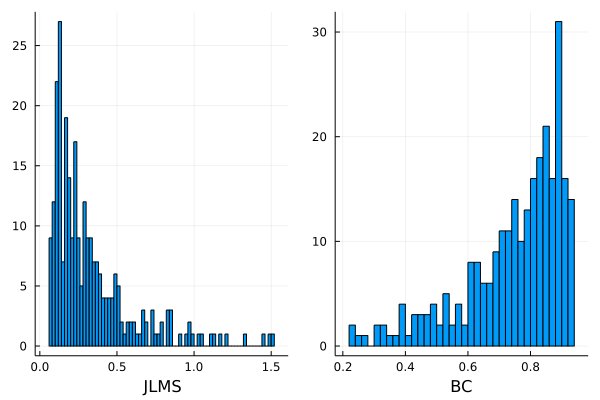
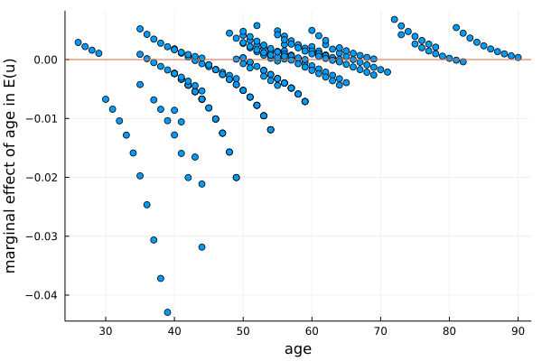

SFrontiers.jl: Stochastic Frontier Model Estimation: Simulation-Based and Analytic Methods
User Manual for Julia Implementation
© Hung-Jen Wang
wangh@ntu.edu.tw
What is it
SFrontiers.jl is a Julia package for estimating stochastic frontier models in a unified workflow. It covers three distributions for the noise term \(v\), eleven for the inefficiency term \(u\), copula dependence, and selected panel-data models. The classic models (normal noise with half-normal, truncated-normal or exponential inefficiency, and the half-normal and truncated-normal panel models) can be estimated by analytic maximum likelihood, without simulation. The others use simulated maximum likelihood, made accurate and fast by automatic differentiation and GPU computing. Where both methods apply, their estimates typically agree to several decimal places.
Table of Contents
- Introduction
- Hardware and Software Requirements
- Installation and Dependencies
- Overview and Quick Reference Example
- A Detailed Empirical Example
- API Reference I: Model building and fitting
- API Reference II: Post-Estimation Accessors
- Supported Models
- Special Topics
- Panel Data Models
Exported functions not described above · References · Citation
1. Introduction
This package provides a unified framework for estimating stochastic frontier (SF) models. The classic models, including the Normal–half-normal, Normal–truncated-normal, and Normal–Exponential models, can be estimated by analytic maximum likelihood estimation (MLE), without simulation. Two simulation-based methods, Maximum Simulated Likelihood Estimation (MSLE) and Monte Carlo Integration (MCI), extend the package to a broad class of distributional and dependence specifications.
To address the traditional drawbacks of simulation-based estimation, the package uses automatic differentiation for accurate derivatives and GPU computing for speed. Wang and Cheng (2026) give the theoretical background of the methods. Their Monte Carlo evidence shows that the resulting estimators achieve bias and RMSE comparable to those of analytic MLE where such benchmarks exist.
Key features of the package:
Three estimation methods: Maximum Simulated Likelihood Estimation (MSLE), Monte Carlo Integration (MCI), and Analytic Maximum Likelihood Estimation (MLE).
MSLE and MCI are simulation-based and use base-2 Halton sequences as quasi-Monte Carlo (QMC) draws. MSLE is a special case of MCI (Wang and Cheng 2026); the package keeps both names, following the literature.
MLE evaluates the log-likelihood without simulation: in closed form, and for the
:panel_TFE_CSWand:panel_TREpanel models by one-dimensional quadrature. It needs no draws, so it is fast and exact. Selected models only.
Distributional flexibility for cross-sectional models: For cross-sectional models (
datatype=:cross_sectionalinsfmodel_spec()), MSLE and MCI support any combination of:- \(v\): Normal, Student T, and Laplace distributions.
- \(u\): half-normal, truncated-normal, Exponential, Weibull, Lognormal, Lomax, Rayleigh, Gamma, and Erlang (orders 2, 3, 4) distributions.
MCI supports all inefficiency distributions; MSLE supports all except Gamma, because MSLE draws through the inverse CDF and Gamma’s estimated shape parameter sits inside it. “Why Gamma is MCI only” in Section 9.1 explains why this rules out Gamma but not Erlang. MLE is limited to half-normal, truncated-normal, and Exponential inefficiency with Normal noise.
Distributional flexibility for panel-data Models: In panel data models the noise \(v\) is always normal. The package supports three panel stochastic frontier models:
datatype=:panel_TFE— Wang and Ho (2010) true fixed-effect model. MCI and MSLE accept all 11 \(u\) distributions (Gamma is MCI only, as in the cross-sectional case); MLE accepts half-normal and truncated-normal.datatype=:panel_TFE_CSW— Chen, Schmidt, and Wang (2014) fixed-effect model. MLE only, half-normal only.datatype=:panel_TRE— True random-effect model. MLE only, half-normal or truncated-normal.
Copula dependence (cross-sectional only): Gaussian, Gumbel, Clayton, and 90°-rotated Clayton copulas model the dependence between the noise \(v\) and the inefficiency \(u\). The package computes the dependence parameter and Kendall’s \(\tau\) automatically. Copulas are not available for panel data models or with Student-t noise (Copula Models).
Heteroscedastic inefficiency specifications: For cross-sectional models, the parameters of the inefficiency distribution can be modeled as functions of covariates. Cross-sectional models also support the scaling property model \(u_i = h(\mathbf{z}_i) \cdot u_i^*\), where \(h(\mathbf{z}_i) = \exp(\mathbf{z}_i'\boldsymbol{\delta})\) and \(u_i^*\) follows a homoscedastic base distribution. In the
:panel_TFEpanel model, heterogeneity enters through the same scaling function \(h(z_{it}) = \exp(z_{it}'\delta)\); the other panel models have no inefficiency determinants.Compute important statistics and quantities: Every fit automatically computes the quantities used in post-estimation analysis: the JLMS inefficiency and BC efficiency indices, the marginal effects of the inefficiency determinants, the OLS log-likelihood (cross-sectional models), and the skewness of the OLS residuals.
Post-estimation tools: Functions for exploring fitted models, evaluating model quality through numerical summaries and plots, and using fitted models to predict frontier values, JLMS/BC indices, and marginal effects for new data.
CPU and GPU execution: Simulation-based methods need many draws for accuracy, which makes them slow on the CPU. GPU execution cuts the run time substantially and makes such applications practical.
Automatic differentiation (AD): The package uses AD to compute the derivatives for gradient-based optimization. AD gives highly accurate derivatives of the objective as implemented: a likelihood approximated with a finite set of draws, with parameters kept within numerical bounds (Parameter Bounds) and, for Laplace noise, a smoothed absolute value in the density (Noise Distributions). Accurate derivatives keep challenging optimization problems numerically stable.
Estimation with a unified five-step procedure: Some of the steps are optional.
- Specify the model using
sfmodel_spec(). - Choose the estimation method using
sfmodel_method(). - Initialize parameters using
sfmodel_init(). - Configure optimization using
sfmodel_opt(). - Estimate the model using
sfmodel_fit().
- Specify the model using
2. Hardware and Software Requirements
2.1 Hardware
- CPU execution. Any modern personal computer
supported by Julia is sufficient for CPU-only estimation. The run time
and memory of MCI and MSLE grow in proportion to the number of
observations (firms, in panel models) times the number of draws per
observation,
n_draws, which is 4,096 by default; see Choosing the Number of Halton Draws. - GPU execution (optional but highly recommended for MSLE and
MCI methods). Requires an NVIDIA GPU. The GPU memory a fit
needs grows with the number of observations times
n_drawsand falls in proportion to thechunksoption ofsfmodel_method(), which processes the observations in groups. If VRAM is limited, raisechunks(see About GPU and chunks options).
2.2 Software
- Julia, a free and open-source programming language. SFrontiers.jl requires Julia 1.10 or later, for CPU and GPU execution alike; a recent stable release is recommended. (julialang.org)
- Optim.jl, the optimization package that
SFrontiers.jl uses for maximum likelihood estimation. Version 1 or above
is supported; the package is developed against version 2. Load it with
using Optimwhenever you name a solver such asNelderMead()orNewton()insfmodel_opt(), because SFrontiers does not re-export Optim’s solvers. Every example in this manual does so. - NVIDIA driver and CUDA.jl (optional). Besides the GPU itself, GPU execution requires a compatible NVIDIA driver on the machine and CUDA.jl in Julia. CPU-only execution needs neither. (cuda.juliagpu.org)
3. Installation and Dependencies
SFrontiers.jl is a registered Julia package. Install it from Julia
using the built-in package manager Pkg:
using Pkg
Pkg.add("SFrontiers")Load SFrontiers.jl and the required package for CPU-only computing:
# CPU-only usage (no CUDA needed):
using SFrontiers
using OptimLoad the packages for GPU computing:
# GPU usage:
using CUDA # Load CUDA first
using SFrontiers # Then load SFrontiers
using Optim
Note 1: CUDA.jl is needed only if you want GPU-accelerated estimation via
sfmodel_method(method=:MCI, GPU=true)orsfmodel_method(method=:MSLE, GPU=true). MLE estimation does not use GPU.
Note 2: To use the GPU, load CUDA.jl before SFrontiers.jl. SFrontiers enables its GPU functions at load time only if CUDA is already loaded. If you loaded CUDA after SFrontiers, restart Julia and load them in the correct order.
Note 3: To use the diagnostic plot recipes (e.g.,
plot(result, :efficiency)), also load Plots.jl withusing Plots.
4. Overview and Quick Reference Example
Here we show a complete five-step estimation and post-estimation example. Some steps are optional and can be skipped; more examples follow later.
using CUDA
using SFrontiers
using Optim
using CSV, DataFrames
# Load data. The csv has column names y, x1, x2, and x3 that are used as variable names.
df = CSV.read("demodata.csv", DataFrame)
y = df.y
X = hcat(ones(length(y)), df.x1, df.x2) # Frontier variables (include constant)
Z = hcat(ones(length(y)), df.x3) # Inefficiency determinants
# Step 1: Specify the model
myspec = sfmodel_spec(
type = :production, # for production frontier; alt. :cost
depvar = y, # dependent variable; a vector
frontier = X, # matrix of X vars in frontier
zvar = Z, # matrix of Z vars for inefficiency
noise = :Normal, # dist of v
ineff = :TruncatedNormal, # dist of u
hetero = [:mu, :sigma_u_sq], # heteroscedastic of u's μ & σᵤ²
)
# alternative Step 1: DSL style using DataFrame column names
df._cons = ones(nrow(df)) # create a constant column first
myspec_alt = sfmodel_spec(
type = :production,
@useData(df),
@depvar(y), # column name in df
@frontier(_cons, x1, x2), # column names
@zvar(_cons, x3), # column names
noise = :Normal,
ineff = :TruncatedNormal,
hetero = [:mu, :sigma_u_sq],
)
# Step 2: Choose the estimation method
mymeth = sfmodel_method(
method = :MSLE, # :MLE, :MSLE, or :MCI
n_draws = 2^12, # Halton draws per observation (default 2^12 = 4096)
GPU = true, # use GPU; default is `false` thus CPU
chunks = 10 # observations processed in 10 groups; bounds memory (default 10)
)
# Step 3: Set initial values
myinit = sfmodel_init(
spec = myspec, # from sfmodel_spec()
frontier = X \ y, # OLS estimates
mu = zeros(size(Z, 2)), # μ coefficients
ln_sigma_u_sq = zeros(size(Z, 2)), # ln(σᵤ²) coefficients
ln_sigma_v_sq = [0.0] # ln(σᵥ²)
)
# Step 4: Configure optimization for Julia's Optim
myopt = sfmodel_opt(
warmstart_solver = NelderMead(), # first stage "warm-up" estimation
warmstart_opt = (iterations = 200, g_abstol = 1e-5),
main_solver = Newton(), # 2nd stage "main" estimation
main_opt = (iterations = 100, g_abstol = 1e-8)
)
# Step 5: Estimate the model
result = sfmodel_fit(
spec = myspec, # from sfmodel_spec()
method = mymeth, # from sfmodel_method()
init = myinit, # from sfmodel_init()
optim_options = myopt, # from sfmodel_opt()
marginal = true, # marginal effects of Z; the default
show_table = true # print estimation table; the default
)
# Access results: two complementary styles
# (a) Direct field access on the result object:
println("coefficients: ", result.coeff)
println("BC efficiency index: ", result.bc) # E(exp(-u)|ε), per obs
println("JLMS inefficiency idx: ", result.jlms) # E(u|ε), per obs
println("Marginal Effects of Z: ", result.marginal)
# (b) StatsAPI-conformant accessor functions (work on `result`):
coeftable(result) # formatted coefficient table (estimates, SE, z, p, CIs)
coef(result) # coefficient vector
vcov(result) # variance-covariance matrix
stderror(result) # standard errors
confint(result; level = 0.95) # Wald confidence intervals
loglikelihood(result) # maximized log-likelihood
aic(result); bic(result) # information criteria
nobs(result) # number of observations
residuals(result) # composed errors (also `:u`, `:v`, `:ols` via `type=`)
fitted(result) # frontier fitted values x'β̂
# See Sections 6–7 (API Reference) for further diagnostics
# (efficiency_summary, residual_diagnostics, sf_skewness_test, sf_vs_ols, lrtest),
# plotting recipes, and prediction on new data.For models with Normal noise and half-normal, truncated-normal, or Exponential inefficiency, analytic MLE is available and requires no simulation settings:
mymeth_mle = sfmodel_method(method = :MLE) # no draws, GPU, or chunks needed
result_mle = sfmodel_fit(spec = myspec,
method = mymeth_mle,
init = myinit,
optim_options = myopt)5. A Detailed Empirical Example
We replicate the empirical study of Wang (2002) using the same dataset to walk through the full specification and estimation process. The model is a cross-sectional stochastic production frontier with normal noise and truncated-normal inefficiency, where both \(\mu\) and \(\sigma_u^2\) of the inefficiency distribution are parameterized by exogenous determinants.
This model has a closed-form MLE, which Wang (2002) used. We estimate it by MSLE to illustrate the simulation-based workflow. The MSLE estimates are extremely close to the MLE ones: most agree to at least 5 decimal places.
Model Setup
The specification is as follows:
\[ \begin{aligned} y_i &= x_i'\beta + \varepsilon_i, \\ \varepsilon_i &= v_i - u_i, \\ v_i &\sim N(0, \sigma_v^2), \\ u_i &\sim N^+(\mu_i, \sigma_{u,i}^2), \\ \mu_i &= z_i'\delta, \quad \sigma_{u,i}^2 = \exp(z_i'\gamma). \end{aligned} \]
Here, \(N^+(\mu, \sigma_u^2)\) denotes a truncated-normal distribution obtained by truncating \(N(\mu, \sigma_u^2)\) from below at 0. The vector \(z_i\) contains exogenous determinants of inefficiency. Wang (2002) parameterizes both \(\mu\) and \(\sigma_u^2\) by the same vector \(z_i\), while Battese and Coelli (1995) parameterize only \(\mu\).
Goals of Estimation
Our goals include:
- Estimate model parameters \(\{\beta, \delta, \gamma, \sigma_v^2\}\).
- Compute the JLMS inefficiency index \(E[u_i \mid \varepsilon_i]\) and the Battese–Coelli efficiency index \(E[\exp(-u_i) \mid \varepsilon_i]\) at the observation level.
- Calculate the marginal effect of \(z_i\) on \(E(u_i)\).
Step 1: Load Data and Specify the Model
The data is rice farmers’ production in India. The dependent variable \(y\) is annual rice production and \(x\) is a vector of agricultural inputs.
using CUDA
using SFrontiers
using Optim
using DataFrames, CSV
df = CSV.read("sampledata.csv", DataFrame)
df._cons = ones(nrow(df)) # create a column of ones for interceptsLet’s see what is in the data:
julia> describe(df)
11×7 DataFrame
Row │ variable mean min median max nmissing eltype
│ Symbol Float64 Real Float64 Real Int64 DataType
─────┼───────────────────────────────────────────────────────────────────────
1 │ yvar 7.27812 3.58666 7.28586 9.80335 0 Float64
2 │ Lland 1.05695 -1.60944 1.14307 3.04309 0 Float64
3 │ PIland 0.146997 0.0 0.0 1.0 0 Float64
4 │ Llabor 6.84951 3.2581 6.72263 9.46622 0 Float64
5 │ Lbull 5.64161 2.07944 5.68358 8.37008 0 Float64
6 │ Lcost 4.6033 0.0 5.1511 8.73311 0 Float64
7 │ yr 5.38007 1 5.0 10 0 Int64
8 │ age 53.8856 26 53.0 90 0 Int64
9 │ school 2.02583 0 0.0 10 0 Int64
10 │ yr_1 5.38007 1 5.0 10 0 Int64
11 │ _cons 1.0 1.0 1.0 1.0 0 Float64Now we specify the model using the DSL macros:
myspec = sfmodel_spec(
type = :production,
@useData(df),
@depvar(yvar),
@frontier(_cons, Lland, PIland, Llabor, Lbull, Lcost, yr),
@zvar(_cons, age, school, yr),
noise = :Normal,
ineff = :TruncatedNormal,
hetero = [:mu, :sigma_u_sq], # both μ and σᵤ² depend on zvar
)@useData(df)binds the DataFrame so that subsequent macros can reference column names.@depvar(yvar)specifies the dependent variable column.@frontier(...)and@zvar(...)list the column names for the frontier and inefficiency-determinant equations, respectively.hetero = [:mu, :sigma_u_sq]tells the package that both \(\mu\) and \(\sigma_u^2\) of the truncated-normal inefficiency depend onzvar.
Alternative: using matrix data
If data comes from matrices rather than a DataFrame (common in simulation studies), use keyword arguments directly:
y = df.yvar
X = hcat(ones(nrow(df)), df.Lland, df.PIland, df.Llabor, df.Lbull, df.Lcost, df.yr)
Z = hcat(ones(nrow(df)), df.age, df.school, df.yr)
myspec = sfmodel_spec(
type = :production,
depvar = y, # dependent variable vector
frontier = X, # covariate matrix (include constant column)
zvar = Z, # covariates for inefficiency determinants
noise = :Normal,
ineff = :TruncatedNormal,
hetero = [:mu, :sigma_u_sq],
varnames = ["_cons", "Lland", "PIland", "Llabor", "Lbull", "Lcost", "yr",
"_cons", "age", "school", "yr",
"_cons", "age", "school", "yr",
"_cons"], # optional; auto-generated if omitted
)Step 2: Choose the Estimation Method
mymeth = sfmodel_method(
method = :MSLE, # or :MCI; :MLE takes none of the settings below
n_draws = 2^13, # number of Halton draws per observation
GPU = true, # set true for GPU acceleration
chunks = 20 # observations processed in 20 groups (default 10)
):MSLEuses inverse-CDF sampling;:MCIuses change-of-variables integration.:MLEuses the closed-form likelihood, available here because the model is normal–truncated-normal; call it assfmodel_method(method = :MLE), without draw, GPU or chunk settings.- More draws improve accuracy at the cost of computation time. GPU
acceleration (
GPU = true) makes large draw counts practical. chunks = 20processes the observations in 20 groups instead of the default 10. This bounds the memory each likelihood evaluation needs and does not change the estimates beyond rounding (see About GPU and chunks options). On a 24 GB GPU this example ran markedly slower with the default.
Step 3: Set Initial Values (optional)
myinit = sfmodel_init(
spec = myspec,
# frontier = ..., # skip to use OLS-based defaults
mu = zeros(4), # 4 coefficients in μ equation
ln_sigma_u_sq = zeros(4), # 4 coefficients in ln(σ²_u) equation
ln_sigma_v_sq = [0.0] # 1 coefficient in ln(σ²_v)
)- The order of keyword arguments does not matter.
- If
sfmodel_init()is not called, the package uses OLS-based defaults for the frontier and0.1for every other parameter, \(\mu\) included (:panel_TFEdiffers in a few components; see Section 6.3). - Initial values for variance parameters are on the log scale (e.g.,
ln_sigma_v_sq = [0.0]means the initial \(\sigma_v^2 = \exp(0) = 1.0\)).
Step 4: Configure the Optimizer (optional)
An effective strategy for challenging problems is a two-stage approach: a gradient-free solver first to find a good neighborhood, then a gradient-based solver for precise convergence.
myopt = sfmodel_opt(
warmstart_solver = NelderMead(),
warmstart_opt = (iterations = 200, g_abstol = 1e-5),
main_solver = Newton(),
main_opt = (iterations = 100, g_abstol = 1e-8)
)NelderMead()(gradient-free) in the warm-start stage is robust to poor starting values.Newton()(second-order, gradient-based) in the main stage converges quickly and precisely.- If
sfmodel_opt()is not called, every method uses the same two-stage default:NelderMead()for 200 iterations (g_abstol = 1e-3), thenNewton()for 200 iterations (g_abstol = 1e-7).
Step 5: Estimate the Model
result = sfmodel_fit(
spec = myspec, # from sfmodel_spec()
method = mymeth, # from sfmodel_method()
init = myinit, # from sfmodel_init()
optim_options = myopt, # from sfmodel_opt()
marginal = true, # compute marginal effects (default)
jlms_bc_index = true, # compute efficiency indices (default)
show_table = true # print results to console (default)
)Results and Post-Estimation Analysis
After estimation, sfmodel_fit() prints a formatted
summary to the console. With the default verbose = true,
additional information is printed before the summary: the model being
estimated, the two optimizer summaries, and the coefficient vector after
each stage. One line there often alarms first-time users but is
harmless:
The warmstart run...
* Status: failure (reached maximum number of iterations)The warmstart is a deliberately short Nelder-Mead pass that only
moves the starting values somewhere better before the main optimizer
runs. It is expected to stop at its iteration limit, which is
what “failure” reports. What matters is the main run’s status and the
Converged: line in the summary below. Pass
verbose = false to suppress the whole preamble, or
show_table = false to suppress the summary as well.
Below is the summary from the rice-farmer example:
*********************************
Estimation Results
*********************************
Method: MSLE
Model type: noise=Normal, ineff=TruncatedNormal
Heteroscedastic parameters: [:mu, :sigma_u_sq]
Number of observations: 271
Number of frontier regressors (K): 7
Number of Z columns (L): 4
Number of draws: 8192
Frontier type: production
GPU computing: true
Number of iterations: 20
Converged: true
Log-likelihood: -82.02507
┌──────────┬────────┬─────────┬──────────┬──────────┬────────┬─────────┬─────────┐
│ │ Var. │ Coef. │ Std.Err. │ z │ P>|z| │ 95%CI_l │ 95%CI_u │
├──────────┼────────┼─────────┼──────────┼──────────┼────────┼─────────┼─────────┤
│ frontier │ _cons │ 1.5430 │ 0.3578 │ 4.3124 │ 0.0000 │ 0.8417 │ 2.2442 │
│ │ Lland │ 0.2582 │ 0.0725 │ 3.5609 │ 0.0004 │ 0.1161 │ 0.4004 │
│ │ PIland │ 0.1717 │ 0.1761 │ 0.9752 │ 0.3304 │ -0.1734 │ 0.5169 │
│ │ Llabor │ 1.1658 │ 0.0840 │ 13.8804 │ 0.0000 │ 1.0012 │ 1.3304 │
│ │ Lbull │ -0.4215 │ 0.0596 │ -7.0668 │ 0.0000 │ -0.5384 │ -0.3046 │
│ │ Lcost │ 0.0142 │ 0.0128 │ 1.1088 │ 0.2686 │ -0.0109 │ 0.0394 │
│ │ yr │ 0.0183 │ 0.0095 │ 1.9227 │ 0.0556 │ -0.0004 │ 0.0369 │
│ μ │ _cons │ 1.0417 │ 0.7283 │ 1.4304 │ 0.1538 │ -0.3857 │ 2.4692 │
│ │ age │ -0.0479 │ 0.0303 │ -1.5805 │ 0.1152 │ -0.1073 │ 0.0115 │
│ │ school │ -0.2143 │ 0.1711 │ -1.2522 │ 0.2117 │ -0.5497 │ 0.1211 │
│ │ yr │ 0.1480 │ 0.1248 │ 1.1854 │ 0.2370 │ -0.0967 │ 0.3926 │
│ ln_σᵤ² │ _cons │ -1.1398 │ 0.8904 │ -1.2802 │ 0.2016 │ -2.8849 │ 0.6052 │
│ │ age │ 0.0256 │ 0.0096 │ 2.6659 │ 0.0082 │ 0.0068 │ 0.0445 │
│ │ school │ 0.1141 │ 0.0569 │ 2.0054 │ 0.0460 │ 0.0026 │ 0.2256 │
│ │ yr │ -0.2256 │ 0.0496 │ -4.5501 │ 0.0000 │ -0.3228 │ -0.1284 │
│ ln_σᵥ² │ ln_σᵥ² │ -3.2667 │ 0.2623 │ -12.4545 │ 0.0000 │ -3.7808 │ -2.7526 │
└──────────┴────────┴─────────┴──────────┴──────────┴────────┴─────────┴─────────┘
Log-parameters converted to original scale:
┌─────┬────────┬──────────┐
│ │ Coef. │ Std.Err. │
├─────┼────────┼──────────┤
│ σᵥ² │ 0.0381 │ 0.0100 │
└─────┴────────┴──────────┘
Table format: text
***** Additional Information *********
* OLS (frontier-only) log-likelihood: -104.96993
* Skewness of OLS residuals: -0.70351
* The sample mean of the JLMS inefficiency index: 0.33415
* The sample mean of the BC efficiency index: 0.7462
* The sample mean of inefficiency determinants' marginal effects on E(u): (age = -0.00265, school = -0.01197, yr = -0.0265)
* Marginal effects of the inefficiency determinants at the observational level are saved in the return. See below.
* Use `name.list` to see saved results (keys and values) where `name` is the return specified in `name = sfmodel_fit(..)`. Values may be retrieved using the keys. For instance:
** `name.loglikelihood`: the log-likelihood value of the model;
** `name.jlms`: Jondrow et al. (1982) inefficiency index;
** `name.bc`: Battese and Coelli (1988) efficiency index;
** `name.marginal`: a DataFrame with variables' (if any) marginal effects on E(u).
* Use `keys(name.list)` to see available keys.
**************************************The returned result is an SFResult, a thin
wrapper around a NamedTuple of results. Its fields provide
programmatic access to all outputs:
Key fields:
| Field | Description |
|---|---|
result.coeff |
Full estimated parameter vector |
result.std_err |
Asymptotic standard errors |
result.var_cov_mat |
Variance–covariance matrix |
result.table |
Formatted coefficient table |
result.jlms |
JLMS inefficiency index \(E[u_i \mid \varepsilon_i]\) |
result.bc |
Battese–Coelli efficiency index \(E[\exp(-u_i) \mid \varepsilon_i]\) |
result.marginal |
Observation-level marginal effects (DataFrame) |
result.marginal_mean |
Sample mean of marginal effects |
result.loglikelihood |
Log-likelihood of the estimated model |
result.OLS_loglikelihood |
Log-likelihood of the OLS model |
result.OLS_resid_skew |
Skewness of OLS residuals |
result.converged |
Whether the optimizer converged |
Hypothesis Testing
sf_vs_ols tests the frontier against OLS (\(H_0\): no inefficiency, \(u \equiv 0\)). It accepts only the model
for which the null distribution of the likelihood-ratio statistic is
established: the cross-sectional model with normal noise, no copula and
homoscedastic half-normal inefficiency, where it is \(\tfrac{1}{2}\chi^2(0) +
\tfrac{1}{2}\chi^2(1)\) (Lee 1993). For this section’s model,
sf_vs_ols(result) raises an error, because the coefficients
of \(\mu\) and the slope coefficients
of \(\sigma_u^2\) are not identified
under \(H_0\) (see “Why
sf_vs_ols refuses other models” in Section 7.5). To show the test, we
fit the homoscedastic normal–half-normal model to the rice data:
spec_hn = sfmodel_spec(
type = :production,
@useData(df),
@depvar(yvar),
@frontier(_cons, Lland, PIland, Llabor, Lbull, Lcost, yr),
noise = :Normal,
ineff = :HalfNormal,
)
result_hn = sfmodel_fit(spec = spec_hn, method = sfmodel_method(method = :MLE),
optim_options = myopt, show_table = false)julia> sf_vs_ols(result_hn)
Likelihood-ratio test (mixed χ̄² reference distribution)
LR statistic : 23.207785
degrees of freedom: 1
p-value : 1.0e-6
log-lik (R, U) : (-104.9699, -93.366)
critical values: 10% = 1.6424, 5% = 2.7055, 2.5% = 3.8415, 1% = 5.4119The printed p-value is rounded to six decimal places;
sf_vs_ols(result_hn).pvalue returns the underlying value,
\(7.27 \times 10^{-7}\). The LR
statistic, 23.21, is far above the 1% critical value 5.41, so the data
reject OLS in favor of the homoscedastic normal–half-normal model. This
is at most supporting evidence of inefficiency: it does not test this
section’s truncated-normal model, nor whether either model is correctly
specified.
See Section 7.5 ‘Hypothesis
Testing’ for the full reference (sf_vs_ols, the general
lrtest, and the LRTestResult struct).
Inefficiency and Efficiency Index
The JLMS inefficiency index and the Battese–Coelli efficiency index are computed automatically and stored in the result:
julia> [result.jlms result.bc]
271×2 Matrix{Float64}:
0.571095 0.574419
0.510011 0.610211
0.103915 0.904541
0.287695 0.758804
0.151933 0.864156
0.570968 0.574336
⋮
1.17584 0.314266
0.428363 0.662455
0.847947 0.436289
0.110001 0.899455
0.17517 0.845739
0.165555 0.853445The same indices can also be obtained on new data via
predict(result; frontier, depvar, zvar, what = :jlms | :bc | :all).
See Section 7.7 ‘Prediction on
New Data’ for the full reference.
A built-in plot recipe visualizes the JLMS and BC distributions on the rice-farmer fit:
using Plots
plot(result, :efficiency) # JLMS + BC efficiency histograms side by side
See Section 7.6 ‘Plot Recipes’ for
the other recipe kinds (:residuals, :marginal,
:convergence, and the default \(2
\times 2\) diagnostic panel).
Marginal Effects
The marginal effects of the inefficiency determinants on \(E(u_i)\) at the observation level are available as a DataFrame:
julia> result.marginal
271×3 DataFrame
Row │ marg_age marg_school marg_yr
│ Float64 Float64 Float64
─────┼───────────────────────────────────────
1 │ -0.00521996 -0.0234706 -0.0134704
2 │ -0.00636222 -0.0285708 -0.00756179
3 │ -0.00775676 -0.0348006 -0.00112954
4 │ -0.00953768 -0.0427596 0.00631428
5 │ -0.0119057 -0.0533453 0.0154998
6 │ -0.00860392 -0.0386066 -0.00255735
⋮ │ ⋮ ⋮ ⋮
267 │ 0.00211625 0.00933545 -0.0390957
268 │ 0.00291512 0.0128361 -0.0596557
269 │ 0.0022132 0.00971895 -0.0518282
270 │ 0.00160307 0.00700985 -0.0449174
271 │ 0.00107234 0.00465368 -0.0388234
260 rows omittedThe marginal effects can be plotted against covariates to reveal non-linear patterns. Using the built-in recipe:
using Plots
plot(result, :marginal) # one marginal-effect panel per z variable, against observation index
plot(result, :marginal, df.age) # marginal effect vs a specific covariateThe built-in recipe automatically adds a dashed zero reference line. A hand-coded equivalent, useful when you want full control over styling:
scatter(df.age, result.marginal[:, :marg_age],
xlabel="age", ylabel="marginal effect of age on E(u)",
label=false)
hline!([0.0], label=false, linestyle=:dash)
The plot reveals a non-monotonic effect: inefficiency decreases with age among younger farmers (perhaps as experience accumulates) and increases with age among older ones (perhaps as physical health deteriorates). Wang’s (2002) model allows such an effect by parameterizing both \(\mu\) and \(\sigma_u^2\) by the same vector of inefficiency determinants.
See Section 7.6 ‘Plot Recipes’ for
the full reference of the :marginal recipe.
Post-Estimation Diagnostics
efficiency_summary(result) reports the cross-sectional
distribution of the JLMS inefficiency index and the Battese–Coelli
efficiency index:
julia> es = efficiency_summary(result)
EfficiencySummary (n = 271)
JLMS: mean = 0.3342 std = 0.2737 min = 0.0709 max = 1.5125 median = 0.2374
q10 = 0.1063 q25 = 0.1386 q50 = 0.2374 q75 = 0.4187 q90 = 0.7354
BC: mean = 0.7462 std = 0.1604 min = 0.2245 max = 0.9334 median = 0.7973
q10 = 0.4876 q25 = 0.6686 q50 = 0.7973 q75 = 0.8754 q90 = 0.9025
Fields: e.g., <name>.mean_jlms, <name>.quantiles_bc.q25; full list via propertynames(<name>).The “JLMS” and “BC” headings are for display only; the struct itself
is flat. Scalar fields carry a _jlms or
_bc suffix (es.mean_jlms,
es.median_bc), and the quantiles sit in two
NamedTuple fields, es.quantiles_jlms and
es.quantiles_bc (e.g., es.quantiles_bc.q25,
shown as 0.6686). es.JLMS and es.JLMS.q10 are
not valid.
The median Battese–Coelli efficiency is \(0.797\): the typical farmer produces about 80% of frontier output. The dispersion is wide. The bottom decile sits at \(\text{BC}=0.488\) (severe inefficiency, less than half of potential output), while the top decile reaches \(0.903\). The JLMS index is right-skewed (mean \(0.334\), median \(0.237\), max \(1.513\)), with a thin tail of highly inefficient farmers. This is consistent with the heteroscedastic specification, which lets both \(\mu\) and \(\sigma_u^2\) vary with \(\mathbf{z}_i\).
residual_diagnostics(result) checks the sign and shape
of the residual distribution:
julia> rd = residual_diagnostics(result)
(skew_ols = -0.7035, skew_composed = -0.9147,
expected_skew_sign = -1,
skew_ols_sign_ok = true, skew_composed_sign_ok = true,
JarqueBera_stat = 32.6099, JarqueBera_pvalue = 8.30e-8,
M3T_stat = -4.7280, M3T_pvalue = 1.13e-6,
M3T_robust_stat = -3.3319, M3T_robust_pvalue = 4.31e-4)Both the OLS and the composed residuals are negatively skewed, as
expected for a production frontier
(expected_skew_sign = -1); both *_sign_ok
flags confirm this. The four M3T fields give the one-sided
third-moment test of the OLS residuals, which
sf_skewness_test(result) also reports. Both versions, with
the normal-theory and with the kurtosis-robust variance, reject symmetry
in the direction that inefficiency implies. This is at most supporting
evidence of inefficiency: a misspecified frontier or omitted skewed
regressors would also skew the residuals. The Jarque–Bera statistic
(32.6) only describes the shape of the OLS residuals. Symmetric
heavy-tailed or heteroscedastic noise also makes it large, so it is not
evidence of inefficiency (Section
7.4).
residuals(result) and fitted(result) return
the composed residuals \(\hat\varepsilon_i =
y_i - x_i'\hat\beta\) and the frontier fit \(x_i'\hat\beta\). residuals
also returns \(\hat u_i\), \(\hat v_i\) or the OLS residuals through its
type keyword, and fitted the response-scale
fit.
See ‘Diagnostic Functions’ in
Section 7.4 for the full reference (residuals,
fitted, efficiency_summary,
residual_diagnostics, sf_skewness_test),
including all keyword options and the fields of the returned
structs.
Prediction on New Data
predict(result; frontier, zvar, depvar, what) applies
the fitted model to new observations \((X_{\text{new}}, Z_{\text{new}},
y_{\text{new}})\). It reuses the estimated coefficients, without
refitting, and returns the same quantities available at training time:
the frontier fit \(x_i'\hat\beta\),
the composed residuals, the response-scale fit, the JLMS inefficiency
index \(E(u_i\mid\hat\varepsilon_i)\),
the Battese–Coelli efficiency index \(E(e^{-u_i}\mid\hat\varepsilon_i)\), and the
observation-level marginal effects \(\partial
E(u_i)/\partial \mathbf{z}_i\). The what keyword
selects the target. See ‘Prediction on New Data’ in Section
7.7 for the full reference (signature, the what-keyword
table, and supported model classes).
This interface supports several post-estimation tasks:
Out-of-sample prediction and evaluation. Score firms outside the estimation sample, such as in train/test splits, cross-validation, newly collected data or new entrants, against the fitted frontier and obtain out-of-sample JLMS/BC scores.
Counterfactual analysis. Change inefficiency determinants \(Z\) and recompute \(E(u\mid\varepsilon)\) or \(E(e^{-u}\mid\varepsilon)\) to see how predicted (in)efficiency changes.
Policy evaluation. Apply the fitted model to post-intervention data or a simulated \(Z\) distribution to project changes in mean efficiency.
Forecasting. Fit on periods \(1,\dots,T-1\) and predict frontier output and efficiency for period \(T\).
Sensitivity and marginal analysis. Use
what = :marginalover a grid of \(Z\) values to trace how marginal effects vary across the covariate space.
Saving Results
The result can be saved for later analysis. Using the JLD2 package for binary storage:
using JLD2
save_object("model1.jld2", result) # save everything
result_loaded = load_object("model1.jld2") # load it backFor cross-platform, human-readable text storage:
using CSV
CSV.write("marginal.csv", result.marginal) # marginal effects (DataFrame)6. API Reference I: Model building and fitting
This section documents the functions that specify and estimate a
model: sfmodel_spec(), sfmodel_method(),
sfmodel_init(), sfmodel_opt(),
sfmodel_fit(), and the critical-value utilities
sfmodel_MixTable() / sfmodel_ChiSquareTable().
Functions that work on the fitted result are documented in Section 7 (API Reference II: Post-Estimation
Accessors).
6.1 sfmodel_spec()
sfmodel_spec() creates a model specification: the data,
the distributional assumptions and the metadata needed for estimation.
The specification does not depend on the estimation method.
Each specification is self-contained. You can build several and fit
them in any order; building one does not change another. The same holds
for the objects returned by sfmodel_method(),
sfmodel_init() and sfmodel_opt(): a fit uses
only the objects passed to it.
Syntax
sfmodel_spec() — define the model specification.
Arguments
| Argument | Type | Description | Required |
|---|---|---|---|
depvar |
Vector | Dependent variable. Cross-sectional: \(N\) observations. Panel: \(N \times T\) stacked by firm. | Yes |
frontier |
Matrix | Covariate matrix for the frontier equation, \(N\times K\), given as a Matrix
or as a list of columns [v1, v2, ...]. Cross-sectional:
include a column of ones (1) for the intercept.
Panel: do NOT include a constant column
(within-demeaning eliminates it); :panel_TRE is the
exception and allows one. |
Yes |
noise |
Symbol | Distribution of the noise term \(v\). Cross-sectional: :Normal,
:StudentT, :Laplace. Panel:
:Normal only. See Section
8. |
Yes |
ineff |
Symbol | Distribution of the inefficiency term \(u\): :HalfNormal,
:TruncatedNormal, :Exponential,
:Weibull, :Lognormal, :Lomax,
:Rayleigh, :Gamma, and
:Erlang2/:Erlang3/:Erlang4
(Erlang of order \(m\): a Gamma with
the shape fixed at the integer \(m\)).
:Gamma is MCI only; method=:MLE supports only
:HalfNormal, :TruncatedNormal and
:Exponential. See Section
8. |
Yes |
datatype |
Symbol | Data type. :cross_sectional (default),
:panel_TFE (Wang and Ho 2010 true fixed-effect),
:panel_TFE_CSW (Chen, Schmidt, and Wang 2014, MLE only), or
:panel_TRE (true random-effect, MLE only). See Section 10. |
No |
type |
Symbol | Frontier type: :production or :prod (the
default) for a production frontier (\(\varepsilon_i = v_i - u_i\)),
:cost for a cost frontier (\(\varepsilon_i = v_i + u_i\)). |
No |
zvar |
Matrix | Covariate matrix for the inefficiency parameters.
Cross-sectional: \(N\times L\). For heteroscedastic parameters, the first column must be ones whenever any parameter of the distribution stays homoscedastic, because that parameter’s intercept is read from it. With hetero=:scaling, zvar holds the \(\mathbf{z}_i\) of the scaling function
\(h(\mathbf{z}_i)=\exp(\mathbf{z}_i'\boldsymbol{\delta})\);
do NOT include a constant column (for
identification).Panel: :panel_TFE
only, for the scaling function \(h(z)=\exp(z'\delta)\), \(NT \times L\); do NOT include a
constant column.zvar is refused
where no equation uses it: in :panel_TFE_CSW and
:panel_TRE, and in a cross-sectional spec with neither
hetero nor :scaling. |
No |
copula |
Symbol | Cross-sectional only. Copula for the dependence between
\(v\) and \(u\): :None (default),
:Gaussian, :Clayton, :Clayton90,
:Gumbel. |
No |
hetero |
Vector{Symbol} or Symbol | Parameters of the distribution to make heteroscedastic (e.g.,
[:mu, :sigma_u_sq]), or
:scaling for the scaling property model. Cross-sectional
models; among panel models only :panel_TFE accepts it, and
only as :scaling, its default (see the panel notes below).
See the Hetero Options column in Section
8 and Section
9.4. |
No |
id |
Vector | Panel only, and required there. Unit identifier. Rows must
be grouped by unit (each firm’s rows contiguous). For a balanced panel:
id = repeat(1:N, inner=T). In the DSL form, use
@id(...). A cross-sectional model refuses id
in either form. |
No |
varnames |
Vector{String} | Variable names for the output tables. If nothing
(default), names are generated: on the cross-sectional simulation
backends, x1, x2, ... for every row, inefficiency and noise
rows included; for :panel_TFE under :MCI and
:MSLE, x1, ... for the frontier,
z1, ... for the scaling function and fixed names such as
ln_σᵤ² for the rest; under :MLE,
frontier_var1, ... for the frontier, _cons for
each homoscedastic equation and names such as μ_var1 or
σᵤ²_var1 for a heteroscedastic one. Supply your own for
tables in a paper. Keyword form only; the DSL form has no
varnames argument. |
No |
eqnames |
Vector{String} | Equation block names (e.g.,
["frontier", "mu", "ln_sigma_u_sq"]). If
nothing (default), names are generated from
ineff. Used by every method and in both call forms. |
No |
T_periods |
Int | Removed. Panel structure comes from id
alone; for a balanced panel use id = repeat(1:N, inner=T).
Passing T_periods raises an error naming this replacement,
for every datatype and in both call forms. |
No |
eq_indices |
Vector{Int} | Equation boundary indices. If nothing (default),
generated from the model structure. Like eqnames, used by
every method and in both call forms. |
No |
Return Value
Returns a UnifiedSpec{T} object holding a specification
for each estimation method the model supports: MCI, MSLE and MLE (as
applicable) for cross-sectional models; MCI and MSLE for
panel_TFE, plus MLE for :HalfNormal and
:TruncatedNormal; MLE only for panel_TFE_CSW
and panel_TRE.
Example: Basic Specification
Using the rice-farmer data from Section 5:
using CUDA
using SFrontiers, Optim
using DataFrames, CSV
df = CSV.read("sampledata.csv", DataFrame)
df._cons = ones(nrow(df)) # add a column of _cons to the df DataFrame
# --- Keyword form (matrix data) ---
y = df.yvar
X = hcat(df._cons, df.Lland, df.PIland, df.Llabor, df.Lbull, df.Lcost, df.yr)
Z = hcat(df._cons, df.age, df.school, df.yr)
# Homoscedastic (no Z needed)
spec1 = sfmodel_spec(
depvar = y,
frontier = X,
noise = :Normal,
ineff = :TruncatedNormal,
)
# Heteroscedastic, also with custom variable names
spec2 = sfmodel_spec(
depvar = y,
frontier = X,
zvar = Z,
noise = :Normal,
ineff = :TruncatedNormal,
hetero = [:mu], # or [:sigma_u_sq], [:mu, :sigma_u_sq]. See the Hetero Options column in Section 8
varnames = ["constant", "land", "Iland", "labor", "bull", "cost", "year", # frontier
"constant", "age", "schooling", "year", # mu
"constant", # ln_sigma_u_sq
"constant"], # ln_sigma_v_sq
)
# --- DSL form (DataFrame). Instead of passing data vectors and matrices directly, users specify column names of the DataFrame in the macros (`@depvar`, `@frontier`, `@zvar`), and the data is extracted automatically. The macros can appear in any order.
# Heteroscedastic
spec3 = sfmodel_spec(
@useData(df), # the DataFrame
@depvar(yvar), # arguments are column names, not data
@frontier(_cons, Lland, PIland, Llabor, Lbull, Lcost, yr),
@zvar(_cons, age, school, yr),
noise = :Normal,
ineff = :TruncatedNormal,
hetero = [:mu],
)Example: Scaling Property Model
The scaling property model uses hetero = :scaling.
zvar then holds the environmental variables \(\mathbf{z}_i\) of the scaling function
\(h(\mathbf{z}_i) =
\exp(\mathbf{z}_i'\boldsymbol{\delta})\), and the parameters
of the inefficiency distribution stay scalar (homoscedastic). The
zvar matrix must not contain a constant
column (for identification; see Section 9.4).
# Scaling property model (using keyword form as an example)
# Z_nocons must NOT contain a constant column
Z_nocons = hcat(df.age, df.school, df.yr)
spec = sfmodel_spec(
type = :production,
depvar = y,
frontier = X, # include constant as usual
zvar = Z_nocons, # environmental variables (no constant!)
noise = :Normal,
ineff = :HalfNormal,
hetero = :scaling, # scaling property model
)
# Scaling + copula (allowed)
spec = sfmodel_spec(
type = :production,
depvar = y,
frontier = X,
zvar = Z_nocons,
noise = :Normal,
ineff = :Exponential,
hetero = :scaling,
copula = :Clayton,
)Notes on scaling property model:
hetero = :scalingcannot be combined with heteroscedastic parameters (:mu,:sigma_u_sq, etc.): the heterogeneity enters through the scaling function, not through individual parameters.zvaris required and must not contain a constant column in the case ofhetero = :scaling.:MSLEand:MCIsupport every inefficiency distribution, except that:Gammais MCI only.- Copula models are supported.
Example: Panel Data Specification
Assume a panel dataset has been loaded and y,
X, Z and firm_id have been built,
where firm_id identifies each firm. The examples use the
keyword form; the DSL form is also available.
# Panel TFE — Wang and Ho (2010) true fixed-effect model.
# method=:MCI, :MSLE for all inefficiency distributions, :MLE only for half-normal/truncated-normal
spec = sfmodel_spec(
type = :production, # the default; optional
datatype = :panel_TFE, # Wang and Ho 2010 panel model
depvar = y, # N*T stacked by firm
frontier = X, # NT x K (no constant)
zvar = Z, # NT x L (no constant)
hetero = :scaling, # optional; :scaling is the default and the only permissible option for panel_TFE
id = firm_id, # unit individual identifier (required for all panel models)
noise = :Normal,
ineff = :TruncatedNormal
)
# Panel TFE_CSW — Chen, Schmidt, and Wang (2014) fixed-effect model.
# MLE only, half-normal only
spec = sfmodel_spec(
datatype = :panel_TFE_CSW,
depvar = y,
frontier = X,
id = firm_id,
noise = :Normal,
ineff = :HalfNormal
)
# Panel TRE — True random-effect model
# MLE only, half-normal or truncated-normal
spec = sfmodel_spec(
datatype = :panel_TRE,
depvar = y,
frontier = X,
id = firm_id,
noise = :Normal,
ineff = :HalfNormal
)Notes: - Panel models do not support
copula. - Onlypanel_TFEacceptshetero, and onlyhetero = :scaling, which is its default and may be omitted. Heterogeneity then enters through the scaling function \(h(z_{it}) = \exp(z_{it}'\delta)\). -frontierandzvarmust NOT include a constant column, except thatpanel_TREallows a constant infrontier. See Section 10 for details.
6.2 sfmodel_method()
sfmodel_method() sets the estimation method and its
computational settings, such as the number of draws and GPU use. It is
separate from sfmodel_spec() so that one specification can
be estimated by several methods.
Syntax
sfmodel_method() — choose the estimation method and
simulation settings.
Arguments
| Argument | Type | Description | Required |
|---|---|---|---|
method |
Symbol | Estimation method: :MSLE (Maximum Simulated Likelihood
Estimation), :MCI (Monte Carlo Integration) or
:MLE (analytic Maximum Likelihood Estimation, for a subset
of models). :MLE uses none of the simulation arguments
below and refuses them: transformation, draws,
n_draws, distinct_Halton_length,
GPU = true, and any nondefault multiRand,
chunks or recycling raise an error naming the
argument. |
Yes |
transformation |
Symbol/Nothing | MCI only. Rule that maps uniform draws to
inefficiency values: :expo_rule,
:logistic_1_rule, :logistic_2_rule, or
nothing for the distribution’s default rule (see
Transformation Rules below). method=:MSLE refuses it, as
does sfmodel_panel_method. Under the default rule, MCI fits
of the Gamma with \(k\) below 0.6, the
Weibull with \(k\) below 1 and the
Lomax with \(\alpha\) below 3 print a
warning; see Shape
ranges where MCI is unreliable. |
No |
n_draws |
Int | Number of Halton draws per observation (per firm in panel models),
\(D\). Default: 4096 (\(2^{12}\)) for MCI and MSLE, cross-sectional
and panel. Use powers of two (see Observation-Specific
Halton Draws). Ignored when draws is supplied, since
\(D\) is then taken from the supplied
array. |
No |
draws |
Matrix or Vector | User-supplied uniform draws in \([0,
1)\), with a floating-point element type (Float64,
Float32, …); an integer or rational array is refused with a
TypeError. A length-\(D\)
vector, a \(1 \times D\) row matrix or
a \(D \times 1\) column matrix is one
sequence shared by every observation; an \(N
\times D\) matrix gives one row of draws per observation (per
firm in panel models). Any other row count is an error.
Supplying draws sets multiRand=false and makes
n_draws irrelevant. If nothing (default),
Halton draws are generated. See Custom
Draw Sequences. |
No |
multiRand |
Bool | Applies only to generated draws (no draws supplied).
true (default) gives each observation (each firm in panel
models) its own \(D\) consecutive
points of one base-2 Halton sequence of \(N
\times D\) points, so no point is used twice unless
recycling (or the deprecated
distinct_Halton_length) is given. false gives
every observation the same first \(D\)
points. Supplying draws sets it to false. See
Observation-Specific
Halton Draws. |
No |
GPU |
Bool | false (default) uses the CPU; true uses
the GPU (requires using CUDA, loaded before
SFrontiers). |
No |
chunks |
Int | Number of groups of observations (firms, in panel models) that MCI
and MSLE process one at a time (default: 10). Memory falls
in proportion to chunks; see About GPU and chunks
options. |
No |
recycling |
Bool or Int | Caps the length of the Halton sequence and reuses its points when
\(N \times D\) exceeds the cap.
false (default): no cap, no point is used twice.
true: cap \(L = 2^{24} - 1 =
16{,}777{,}215\) points. An integer \(L\) with n_draws \(\le L \le 2^{24} - 1\): cap \(L\). Only for generated
observation-specific draws (multiRand = true, no
draws); otherwise an error. See Observation-Specific
Halton Draws. |
No |
distinct_Halton_length |
Int or Nothing | Deprecated; prints a warning. Use recycling instead;
giving both is an error. Scripts that set it still run and, with the
same n_draws, get the draws they got before 2.0.0. To
reproduce the draws of a pre-2.0.0 fit that used the default length,
give recycling = 2^15 - 1 and that fit’s
n_draws (1,024 if it used the default); see Observation-Specific
Halton Draws. |
No |
About GPU and
chunks options
chunks splits the observations (firms, in panel models)
into groups that :MSLE and :MCI process one at
a time. It works on the CPU and on the GPU, and matters most on the GPU
(GPU = true). :MLE does not use it.
- Memory. The memory a fit needs grows with the
number of observations times
n_draws. It rises sharply when the Hessian is computed, to tens of times what a likelihood evaluation needs. The Hessian is computed at every iteration of solvers that use it, such as the default main solverNewton(), and once at the end of every fit for the standard errors. - Raising
chunkshelps. Memory falls in proportion tochunks, so raise it when a fit runs short of memory. Each additional chunk adds a small fixed cost to every likelihood evaluation, so do not raise it further than needed. - The right value takes some trial and error. It
depends on the GPU card and on the size of the model and the data. Start
with the default
chunks = 10and raise it (for example to 20 or 40) until the fit runs comfortably. Before the optimizer starts, a GPU fit prints a warning that nameschunksandn_drawswhen it expects to need more memory than the card has free. CPU fits make no such check; if a CPU fit runs out of memory, raisechunksor lowern_draws(see Choosing the Number of Halton Draws).
Transformation Rules (MCI Only)
When method=:MCI, the transformation option
sets the change of variable from uniform draws \(t \in (0,1)\) to inefficiency values \(u \geq 0\). If nothing, a
distribution-specific default is used.
:MSLE:MCI:MLECPU — ✓ — GPU — ✓ —
The available rules are:
| Rule | Formula | Jacobian | Default for |
|---|---|---|---|
:expo_rule |
\(u = s \cdot (-\ln(1-t))\) | \(s/(1-t)\) | Exponential, Weibull, Gamma, Rayleigh, Erlang |
:logistic_1_rule |
\(u = s \cdot t/(1-t)\) | \(s/(1-t)^2\) | half-normal, truncated-normal, Lognormal, Lomax |
:logistic_2_rule |
\(u = s \cdot (t/(1-t))^2\) | \(2st/(1-t)^3\) | – |
Here \(s\) is a scale parameter that the package derives from the inefficiency distribution. With heteroscedasticity, \(s\) is observation-specific (\(s_i\)). The scale parameters are:
| Distribution | Scale \(s\) | Meaning |
|---|---|---|
| half-normal | \(\sigma\) | Standard deviation of the normal before truncation, \(N(0, \sigma^2)\) |
| truncated-normal | \(\sigma_u\) | Standard deviation of the normal before truncation, \(N(\mu, \sigma_u^2)\) |
| Exponential | \(\sigma_u\) | \(\sigma_u = \sqrt{\sigma_u^2}\), where \(\sigma_u^2 = \text{Var}(u)\) |
| Weibull | \(\lambda\) | Scale parameter of \(\text{Weibull}(\lambda, k)\) |
| Lognormal | \(\sigma\) | Log-scale standard deviation of \(\text{LogNormal}(\mu, \sigma^2)\) |
| Lomax | \(\lambda(2^{1/\alpha} - 1)\) | Median of \(\text{Lomax}(\alpha, \lambda)\); \(\lambda\) is its scale parameter |
| Rayleigh | \(\sigma\) | Scale parameter of \(\text{Rayleigh}(\sigma)\) |
| Gamma | \(\theta\sqrt{1+k^2}\) | Close to the mean \(k\theta\) of \(\text{Gamma}(k, \theta)\) for large \(k\), and to \(\theta\) for small \(k\) |
| Erlang (\(m\)) | \(m\theta\) | Mean of \(\text{Erlang}(m, \theta)\); centers the draws on the distribution’s mass |
Return Value
Returns a method specification object holding the estimation method and its computational settings.
Example
# MSLE with default settings (4,096 Halton draws per observation, CPU)
meth1 = sfmodel_method(method = :MSLE)
# MCI with a custom number of Halton draws, a chosen transformation rule, and GPU
meth2 = sfmodel_method(
method = :MCI,
n_draws = 2^14, # custom number
transformation = :logistic_1_rule,
GPU = true,
chunks = 10,
)
# More draws per observation, with more chunks to bound GPU memory
meth3 = sfmodel_method(
method = :MSLE,
n_draws = 2^15,
GPU = true,
chunks = 20
)
# User-supplied draws (uniform on [0,1)); a length-D vector is one sequence shared by every obs
my_draws = rand(2^12)
meth4 = sfmodel_method(
method = :MSLE,
draws = my_draws, # 1×D or D×1 would be read identically (see §9.8 Custom Draw Sequences)
GPU = true, # multiRand is set to false automatically; n_draws is ignored
)
# Recycling: at most 2^24 - 1 distinct Halton points, reused across observations beyond that
meth5 = sfmodel_method(method = :MSLE, recycling = true)
# MLE — analytic, no simulation parameters needed (limited model support)
meth0 = sfmodel_method(method = :MLE)6.3 sfmodel_init()
sfmodel_init() creates the vector of initial values for
the optimizer. It returns a Vector{Float64} in the
parameter order documented for the model, and sfmodel_fit()
accepts it under method = :MCI, :MSLE and
:MLE alike. You can give the whole vector (full vector
mode) or give values by parameter group (component mode).
Calling sfmodel_init() is optional. If you skip it,
sfmodel_fit() uses the defaults described below.
Syntax
sfmodel_init() — set initial values for
optimization.
Arguments
Every component argument is optional. A component you do not supply
takes the value the fit would use without sfmodel_init():
the OLS estimate for the frontier coefficients and 0.1 for
every other parameter. The exceptions are in :panel_TFE,
which starts \(\mu\) at
0.0 and, for Lomax, \(\ln\lambda\) at -1.0 and \(\ln\alpha\) at 0.5.
(:panel_TRE and :panel_TFE_CSW use
0.1 throughout, \(\mu\)
included.)
A component that is not part of the specified model is refused by name rather than silently dropped.
| Argument | Type | Description | Required |
|---|---|---|---|
spec |
UnifiedSpec | Model specification returned by sfmodel_spec(). |
Yes |
init |
Vector/Tuple | Complete initial-value vector (or tuple). If init is
provided, all other component initial-value arguments are ignored. |
No |
frontier |
Vector/Tuple | Initial values for the frontier coefficients (\(K\) elements). Default: OLS. | No |
scaling |
Vector/Tuple | Initial values for the scaling function coefficients \(\boldsymbol{\delta}\) (\(L\) elements, one per column of
zvar). Used when hetero = :scaling.
hscale is accepted as a synonym. |
No |
mu |
Vector/Tuple | Initial values for \(\mu\) (used by
TruncatedNormal and Lognormal inefficiency
specifications). |
No |
ln_sigma_u_sq |
Vector/Tuple | Initial values for \(\ln(\sigma_u^2)\) (used by
TruncatedNormal, HalfNormal,
Exponential, Lognormal, and
Rayleigh inefficiency specifications). |
No |
ln_sigma_v_sq |
Vector/Tuple | Initial values for \(\ln(\sigma_v^2)\) (used when the noise
distribution is Normal or StudentT). |
No |
ln_nu_minus_2 |
Vector/Tuple | Initial values for \(\ln(\nu-2)\)
(used when the noise distribution is StudentT). |
No |
ln_b |
Vector/Tuple | Initial values for \(\ln(b)\) (used
when the noise distribution is Laplace). |
No |
ln_lambda |
Vector/Tuple | Initial values for \(\ln(\lambda)\)
(used by Weibull and Lomax, whose \(\lambda\) is a scale;
Exponential uses ln_sigma_u_sq). |
No |
ln_k |
Vector/Tuple | Initial values for \(\ln(k)\) (used
by Weibull and Gamma inefficiency
specifications). |
No |
ln_alpha |
Vector/Tuple | Initial values for \(\ln(\alpha)\)
(used by Lomax inefficiency specifications). |
No |
ln_theta |
Vector/Tuple | Initial values for \(\ln(\theta)\)
(used by Gamma and
Erlang2/Erlang3/Erlang4
inefficiency specifications; Gamma is MCI only, Erlang works with MCI
and MSLE). |
No |
theta_rho |
Vector/Tuple | Initial value for the copula parameter \(\theta_\rho\) (used when
copula \(\neq\)
:None). |
No |
sigma_a_sq |
Vector/Tuple | Initial value for \(\ln(\sigma_a^2)\), the log of the
random-effect variance. Despite the keyword’s name, the value is on the
log scale, like the other variance parameters; the coefficient table
labels it log_σₐ². datatype = :panel_TRE
only. |
No |
message |
Bool | Default true. If true, print a warning
when init overrides the component initial-value arguments,
and a notice when OLS defaults are used for the frontier. Not accepted
by datatype = :panel_TFE. |
No |
The components a model has depend on its distributions.
:panel_TFE_CSW and :panel_TRE have no scaling
function, so they accept neither scaling nor
hscale; :panel_TFE_CSW is half-normal, so it
has no mu; and sigma_a_sq exists only for
:panel_TRE. Passing nothing for a component is
the same as omitting it. This includes
scaling/hscale: giving both is an error only
when both are values other than nothing.
Return Value
Returns a Vector{Float64} containing the initial
parameter values in the correct order for optimization, for every
datatype and every estimation method.
Mode 1: Full Vector Mode
Give the complete parameter vector with the init
keyword. The values must follow the model’s parameter order, given in Section 8; it is also the order of
result.coeff. The length is checked. Because you need to
know the parameter order, this mode is not recommended
for a first fit. It is most useful for reusing estimates, for example a
converged coefficient vector as a warm start for a re-specification.
myinit = sfmodel_init(
spec = myspec,
init = [0.5, 0.3, 0.2, 0.1, 0.1, 0.1, 0.0, 0.0]
)Mode 2: Component Mode
Give initial values by parameter group, in any order; the package places each block at the right position in the coefficient vector. Any group you leave out takes its default.
# Normal + truncated-normal with hetero = [:mu]
myinit = sfmodel_init(
spec = myspec,
frontier = [0.5, 0.3, 0.2], # frontier coefficients
mu = [0.1, 0.1, 0.1], # mu of truncated normal
ln_sigma_u_sq = [0.0], # log(sigma_u^2) of truncated normal
ln_sigma_v_sq = [0.0] # log(sigma_v^2) of normal
)
# alternatively,
myinit2 = sfmodel_init(
spec = myspec,
frontier = X \ y, # OLS coefficients
mu = 0.1*ones(size(Z, 2)), # mu of truncated normal
ln_sigma_u_sq = [0.0], # log(sigma_u^2) of truncated normal
ln_sigma_v_sq = (0.0,) # log(sigma_v^2) of normal; a tuple works too
)
# supply only what you want to move; the rest take their defaults
myinit3 = sfmodel_init(spec = myspec, ln_sigma_v_sq = -2.3)Scaling Property Initial Values
When hetero = :scaling, give the initial values of the
\(\boldsymbol{\delta}\) coefficients
(one per column of zvar) with the scaling
keyword. All parameters of the inefficiency distribution are scalar:
# Normal + half-normal with scaling property
myinit = sfmodel_init(
spec = myspec,
frontier = X \ y, # OLS estimates
scaling = zeros(size(Z_nocons, 2)), # δ coefficients (one per z-variable)
ln_sigma_u_sq = [0.0], # scalar base parameter
ln_sigma_v_sq = [0.0] # noise variance
)Panel Initial Values
Panel models take the same keywords as cross-sectional models, minus
those their distributions do not have (see above), and all their
inefficiency distribution parameters are scalar (not
heteroscedastic). In addition, datatype = :panel_TFE does
not accept message.
# Panel TFE: Normal + half-normal
myinit = sfmodel_init(
spec = myspec, # assume spec with datatype=:panel_TFE
frontier = X \ y, # OLS on the demeaned data is the default; supply it to override
scaling = [0.1, 0.1], # scaling function coefficients
ln_sigma_u_sq = 0.1, # scalar
ln_sigma_v_sq = 0.1 # scalar
)
# Panel TRE: Normal + half-normal. Parameter order is
# [frontier, sigma_a_sq, ln_sigma_u_sq, ln_sigma_v_sq]; with a truncated normal,
# mu comes between the frontier block and sigma_a_sq.
myinit_tre = sfmodel_init(
spec = myspec_tre, # assume spec with datatype=:panel_TRE
frontier = X \ y,
sigma_a_sq = 0.1, # random-effect variance (log scale)
ln_sigma_u_sq = 0.1,
ln_sigma_v_sq = 0.1
)Note: In panel models, the default
frontier values are OLS estimates: on the within-demeaned
data for :panel_TFE and :panel_TFE_CSW, and on
the raw data for :panel_TRE. The other defaults are those
listed under Arguments above.
Input Format Flexibility
All parameter arguments accept scalars, vectors, row vectors, or
tuples, except that :panel_TFE does not accept tuples.
# All equivalent
frontier = [0.5, 0.3, 0.2] # Vector
frontier = [0.5 0.3 0.2] # Row vector (1x3 matrix)
frontier = (0.5, 0.3, 0.2) # Tuple — not accepted by datatype = :panel_TFE
ln_sigma_v_sq = 0.1 # a bare scalar is fine for a one-element block6.4 sfmodel_opt()
sfmodel_opt() sets the optimization options. Solvers and
options are passed directly to Julia’s Optim.jl
interface, so any solver and any Optim.Options keyword
can be used. All three estimation methods (MCI, MSLE, and MLE) use the
same optimizer interface, and every keyword takes effect under every
method, so there is no method argument.
Estimation can run in two stages, with the result of the first stage
(warmstart) as the initial values of the second
(main). A common choice is a derivative-free solver such as
NelderMead() in the warmstart, to reach a good neighborhood
of the optimum quickly and robustly, and a gradient-based solver such as
Newton() in the main stage, for precise convergence. This
helps with highly nonlinear models, where a gradient-based solver alone
may fail from poor starting values. For a one-stage estimation, omit the
warmstart.
Syntax
sfmodel_opt() — configure optimization solvers and
options.
Arguments
| Argument | Type | Description | Required |
|---|---|---|---|
warmstart_solver |
Solver | Warmstart optimizer, e.g., NelderMead(),
BFGS() |
No |
warmstart_opt |
NamedTuple | Warmstart options as a NamedTuple, e.g.,
(iterations = 200, g_abstol = 1e-5) |
No |
main_solver |
Solver | Main optimizer, e.g., Newton(),
BFGS() |
Yes |
main_opt |
NamedTuple | Main options as a NamedTuple, e.g.,
(iterations = 200, g_abstol = 1e-8) |
Yes |
store_trace |
Bool | Capture the main optimizer’s iteration trace onto
result.trace, which plot(result, :convergence)
requires. Default false. |
No |
Common options for warmstart_opt and
main_opt:
| Parameter | Description | Typical Value |
|---|---|---|
iterations |
Maximum iterations | 20–1000 |
g_abstol |
Gradient absolute tolerance | 1e-4 to 1e-8 |
f_abstolf_reltol |
Function absolute and relative tolerance | 1e-32 |
x_abstolx_reltol |
Parameter absolute and relative tolerance | 1e-32 |
show_trace |
Display iteration progress | false |
Return Value
Returns an optimization specification struct containing the solver and option specifications.
Example: Two-Stage Optimization
myopt = sfmodel_opt(
warmstart_solver = NelderMead(),
warmstart_opt = (iterations = 100, g_abstol = 1e-4),
main_solver = Newton(),
main_opt = (iterations = 200, g_abstol = 1e-8)
)Example: Skip Warmstart
Without a warmstart solver, the warmstart stage is skipped:
myopt = sfmodel_opt(
main_solver = Newton(),
main_opt = (iterations = 200, g_abstol = 1e-8)
)Notes
The warmstart stage is skipped if
warmstart_solveris omitted, or ifwarmstart_opt = (iterations = 0,), under every method.warmstart_solverwithoutwarmstart_optuses the default options(iterations = 100, g_abstol = 1e-3).warmstart_optwithoutwarmstart_solveris an error, because there is no warmstart stage to configure. This holds forsfmodel_opt()andsfmodel_panel_opt()alike.If
sfmodel_fit()is called withoutoptim_options, every method usesNelderMead()for 200 iterations (g_abstol = 1e-3) as the warmstart, thenNewton()for 200 iterations (g_abstol = 1e-7).With
noise = :Laplace, a main stage that stops without convergence is continued withBFGS()under the samemain_opt; see the Laplace note under Noise Distributions.The main solver may be gradient-free (
NelderMead(),ParticleSwarm(),SimulatedAnnealing()). SFrontiers then computes the gradient at the estimate itself, forgradient_normand the gradient check ofredflag.ParticleSwarm()andSimulatedAnnealing()run to the iteration limit and never report convergence, so as the main solver they always giveconverged = falseand aredflagof at least 1, even at the optimum. Use them in the warmstart, followed by a gradient-based main solver. See Convergence Warnings.
Common Pitfall: Trailing Comma for Single-Element Options
When specifying options with only one element, you must include a trailing comma to create a NamedTuple:
# CORRECT - trailing comma creates a NamedTuple
main_opt = (iterations = 200,)
# WRONG - without comma, this is just the integer 200, not a NamedTuple
main_opt = (iterations = 200)For two or more elements, the trailing comma is not needed:
# Both work fine
main_opt = (iterations = 200, g_abstol = 1e-8)
main_opt = (iterations = 200, g_abstol = 1e-8,) # trailing comma optionalIf you forget the trailing comma, the function will display an error message:
ERROR: Invalid `main_opt`: expected a NamedTuple, got Int64.
Hint: For single-element options, use a trailing comma:
`main_opt = (iterations = 200,)` not `main_opt = (iterations = 200)`.6.5 sfmodel_fit()
sfmodel_fit() is the main estimation routine. It runs
the optimization, computes the variance–covariance matrix, the
efficiency indices and the marginal effects, and presents the
results.
Syntax
sfmodel_fit() — run estimation and produce results.
Arguments
| Argument | Type | Description | Required |
|---|---|---|---|
spec |
UnifiedSpec | Model specification from sfmodel_spec(). |
Yes |
method |
UnifiedMethod | Method specification from sfmodel_method(). |
Yes |
init |
Vector | Initial parameter vector from sfmodel_init(). If
nothing, uses OLS for the frontier and 0.1 for the other
parameters. Under :MCI and :MSLE, and under
:MLE for panel_TFE_CSW and
panel_TRE, a starting value at or beyond a parameter’s
numerical bound is refused for a homoscedastic parameter and gives a
warning for a heteroscedastic one; see Parameter Bounds. |
No |
optim_options |
– | Optimization options from sfmodel_opt(). If
nothing, every method uses the same default:
NelderMead() for 200 iterations
(g_abstol = 1e-3), then Newton() for 200
iterations (g_abstol = 1e-7). |
No |
jlms_bc_index |
Bool | Compute JLMS and BC efficiency indices (default:
true). |
No |
marginal |
Bool | Compute marginal effects of \(Z\)
on E(u) (default: true). |
No |
integration_check |
Bool or NamedTuple | Run the integration check after an
MCI or MSLE fit, cross-sectional or panel_TFE: it compares
the log-likelihood with four times the draws and estimates the implied
parameter shift, each read as OK, CAUTION or FAIL. true
uses the default thresholds; a NamedTuple with any of
ll_caution (0.1), ll_fail (1.0),
shift_caution (0.1) and shift_fail (0.5)
changes them. Ignored by method = :MLE. Default
false. |
No |
show_table |
Bool | Print formatted estimation table (default: true). |
No |
shape_warning |
Bool | Print the shape-range warning, and the warning that a Lomax fit’s
marginal effects are undefined where \(\alpha
\le 1\) (default: true). false prints
neither; result.shape_check is stored either way. Ignored
by method = :MLE. See Shape ranges where MCI is
unreliable. |
No |
verbose |
Bool | Print detailed progress information (default:
true). |
No |
sfmodel_panel_fit() takes integration_check
and shape_warning as well.
Return Value
Returns an SFResult, a thin wrapper around a
NamedTuple of results. The fields below are reachable as
result.<name>. An SFResult is not itself
a NamedTuple: result isa NamedTuple is
false, and keys(result) is not defined. Use
result.list for a dictionary of everything, or
propertynames(result) for the field names.
The analytic backend’s result is shaped differently in six places. The tables below describe the simulation backends,
:MCIand:MSLE.method = :MLE(including the MLE-only panel models) returns the same information, but not always in the same container or under the same name:
What :MCIand:MSLE:MLEresult.frontierthe estimated \(\beta\) the frontier variable names; the estimates are result.coeff_frontier, or usecoef(result)result.jlms,result.bclength-\(N\) vectors \(N \times 1\) matrices residuals(result; type = :u)andtype = :v, andfitted(result; type = :response)length-\(N\) vectors \(N \times 1\) matrices. type = :composed,type = :olsandfitted(result; type = :frontier)are vectors on every backendthe whole Method Information block below present absent, including estimation_methodthe Parameter Subsets below present absent: fields named after the equations ( frontier,μ,σᵤ², …) hold variable names; the coefficients are undercoeff_<equation>, for exampleresult.coeff_log_σᵤ²result.tablea Matrix, ornothingwhen the fit usedshow_table = falsea Matrixwhatevershow_tableis
coeftable(result)works on every backend and is the portable way to get the coefficient table.
Convergence Information
| Field | Type | Description |
|---|---|---|
converged |
Bool | Whether optimization converged; for a Laplace-noise fit that the BFGS finish continued, whether the finish converged |
iter_limit_reached |
Bool | Whether the iteration limit was reached (the finish’s limit, when
the finish ran). Also true for a fit that converged on its
last allowed iteration, which redflag does not count |
redflag |
Int | Warning flag: 0 = OK, 1 = convergence problems or a boundary
solution, 2 = non-positive var-cov diagonal (SEs are NaN);
see Convergence Warnings. For
Laplace-noise fits the Hessian part classifies the outer product of
gradients (OPG) |
hessian_flag |
Int | The Hessian part of redflag, before the boundary rule:
0 = positive definite and reliably invertible; 1 = could not be
computed, not reliably invertible, or not positive definite; 2 =
non-positive var-cov diagonal. For Laplace-noise fits it classifies the
OPG |
bound_check |
Vector | One entry per parameter and side at or beyond its numerical bound,
empty when there is none: parameter, label,
coefficient, side, bound,
scalar, n_at, n,
share, moved, coef_before; see Parameter Bounds |
integration_check |
NamedTuple or nothing |
Result of the optional integration check (MCI and MSLE fits;
nothing when the option is off); see Integration check |
shape_check |
NamedTuple or nothing |
Shape-range verdict of Gamma, Weibull and Lomax MCI fits under the
default rule and of Lomax MSLE fits; nothing for other
families and for MCI fits under another rule. :MLE results
have no such field. See Shape ranges where MCI is
unreliable |
Method Information
| Field | Type | Description |
|---|---|---|
GPU |
Bool | Whether GPU acceleration was used |
n_draws |
Int | Actual number of draws per observation (or per firm for panel) |
multiRand |
Bool | Whether the Halton generator gave each observation (each firm, for
panels) its own draws; always false when
draws= was supplied |
user_draws_supplied |
Bool | Whether the fit used user-supplied draws=. The draws
are kept on the result (result.model), and
predict() uses them when its draws argument is
omitted. |
chunks |
Int | Number of chunks for memory management |
draw_scheme |
Symbol | How the draws were made: :halton (the default: one
Halton sequence of \(N \times\)
n_draws points, none reused), :halton_recycled
(a sequence recycled across observations), :halton_shared
(multiRand = false) or :user (user-supplied
draws). |
distinct_Halton_length |
Int | Length of the Halton sequence behind the draws: \(N \times\) n_draws by default;
the recycled length when recycling or the deprecated
distinct_Halton_length was used; n_draws for
shared draws (multiRand = false); 0 for user-supplied
draws. |
estimation_method |
Symbol | Estimation method used (:MCI, :MSLE,
:MLE) |
Model Results
| Field | Type | Description |
|---|---|---|
n_observations |
Int | Number of observations (N) |
loglikelihood |
Float64 | Maximized log-likelihood value |
coeff |
Vector | Estimated coefficient vector |
std_err |
Vector | Standard errors: from the inverse Hessian, or from the inverse OPG
for Laplace noise (see vcov_type) |
var_cov_mat |
Matrix | Variance-covariance matrix: the inverse Hessian, or the inverse OPG for Laplace noise |
vcov_type |
Symbol | :Hessian, or :OPG for Laplace-noise fits
(cross-sectional MCI and MSLE results) |
table |
Matrix | Formatted coefficient table; nothing under
:MCI and :MSLE when the fit used
show_table = false. coeftable(result) works on
every backend |
Efficiency Indices
| Field | Type | Description |
|---|---|---|
jlms |
Vector | JLMS inefficiency index \(\text{E}(u \mid
\varepsilon)\) for each observation (\(N \times 1\) matrix under
:MLE) |
bc |
Vector | Battese-Coelli efficiency index \(\text{E}(e^{-u} \mid \varepsilon)\) for
each observation (\(N \times 1\) matrix
under :MLE) |
Marginal Effects
| Field | Type | Description |
|---|---|---|
marginal |
DataFrame | Observation-level marginal effects on E(u), one column per
non-constant zvar column.
nothing when marginal = false; an empty \(0 \times 0\) DataFrame under
:MLE when there is no zvar; an empty tuple for
:panel_TFE_CSW and :panel_TRE, which have no
inefficiency determinants |
marginal_mean |
NamedTuple | Mean marginal effects. Never nothing:
when there are no marginal effects it is empty: an empty
NamedTuple under :MCI and :MSLE,
an empty Tuple under :MLE (including the two
MLE-only panel models). Test it with isempty, not with
=== nothing |
For the scaling property model (
hetero = :scaling), the observation-level marginal effects are \(\partial E(u_i) / \partial \mathbf{z}_i = \boldsymbol{\delta} \cdot h(\mathbf{z}_i) \cdot E(u_i^*)\). The coefficient vector \(\boldsymbol{\delta}\) itself is the semi-elasticity \(\partial \ln E(u_i) / \partial \mathbf{z}_i\). See Section 9.4.
OLS Diagnostics
| Field | Type | Description |
|---|---|---|
OLS_loglikelihood |
Float64 | Log-likelihood of the OLS regression of \(y\) on the frontier variables (cross-sectional fits; panel fits do not carry it) |
OLS_resid_skew |
Float64 | Skewness of OLS residuals |
Technical Details
| Field | Type | Description |
|---|---|---|
model |
– | The internal model specification, with the data and the draw matrix
the fit used (\(N \times\)
n_draws in the data’s element type; on the GPU for GPU
fits), which predict() reuses. The matrix stays in memory
as long as the result does: \(N
\times\) n_draws \(\times\, 8\) bytes in Float64,
for example 164 MB for \(N = 5{,}000\)
at the default n_draws. Programs that keep many results,
such as Monte Carlo loops, should keep only the fields they need. |
Hessian |
Matrix | Numerical Hessian at optimum; nothing for Laplace-noise
fits |
OPG |
Matrix | For Laplace-noise fits, the outer product of gradients \(J'J\) at the estimate, \(J\) the derivatives of the per-observation
log-likelihoods; nothing otherwise (cross-sectional MCI and
MSLE results) |
gradient_norm |
Float64 | Largest absolute element of the log-likelihood gradient at
coeff, computed there also when the main solver is
gradient-free |
actual_iterations |
Int | Total iterations across all stages, the BFGS finish included |
warmstart_solver |
Solver | Warmstart algorithm used |
warmstart_ini |
Vector | Initial values for warmstart; nothing when no warmstart
ran |
warmstart_maxIT |
Int | Maximum warmstart iterations |
main_solver |
Solver | Main algorithm used |
main_ini |
Vector | Initial values for main stage |
main_maxIT |
Int | Maximum main iterations: the limit given in main_opt,
which the BFGS finish also uses. With the default optimizer settings the
Newton stage of a Laplace-noise fit runs at most 30 iterations (see
finish) |
main_tolerance |
Float64 | Convergence tolerance (g_abstol of the main stage).
Under :MLE it is also available as
tolerance |
finish |
NamedTuple | nothing, or, when the BFGS finish ran (Laplace noise),
(solver, main_solver,
main_iterations, main_converged,
iterations, converged,
newton_cap, trace). newton_cap is
30 when the Newton stage was capped under the default optimizer settings
and nothing otherwise (cross-sectional MCI and MSLE
results) |
Parameter Subsets
On the simulation backends, each block of coefficients is also
available as its own field, on the scale of the coefficient table (the
logarithm for a positive parameter). These fields do not exist under
method = :MLE. There, the fields named after the equations
(frontier, μ, σᵤ², …) hold
variable names, not estimates, and the per-equation estimates are
result.coeff_frontier, result.coeff_μ,
result.coeff_log_σᵤ² and so on. coef(result)
returns the whole vector on every backend.
frontier– Frontier coefficients (\(\beta\)). Under:MLE, the variable namesdelta– Scaling function coefficients (\(\boldsymbol{\delta}\)), whenhetero = :scaling. Under:MLE, where the equation ishscale, useresult.coeff_log_hscalemu– \(\mu\) coefficients (if applicable)sigma_sq– \(\ln(\sigma_u^2)\) coefficients (Exponential, Lognormal and Rayleigh, and also present for HalfNormal, wheresigma_uduplicates it)sigma_u– \(\ln(\sigma_u^2)\) coefficients (HalfNormal, TruncatedNormal)lambda– \(\ln\lambda\) coefficients, \(\lambda\) the scale (Weibull)k– \(\ln k\) coefficients, \(k\) the shape (Weibull, Gamma)theta– \(\ln\theta\) coefficients, \(\theta\) the scale (Gamma: MCI only; Erlang: MCI/MSLE)alpha– \(\ln\alpha\) coefficients (Lomax). Lomax’s \(\ln\lambda\) is underln_lambda, notlambdaln_sigma_v_sq– \(\log \sigma_v^2\): the noise variance under Normal noise, the squared scale under StudentT (see the note under Noise Distributions)ln_b– \(\ln b\), \(b\) the scale (Laplace)ln_nu_minus_2– \(\ln(\nu - 2)\), \(\nu\) the degrees of freedom (StudentT)theta_rho,rho,kendalls_tau– the copula coefficient \(\theta_\rho\), and the implied \(\rho\) and Kendall’s \(\tau\) (copula fits)
Dictionary Access
All results are also available through result.list, an
OrderedDict:
keys(result.list) # View all available keys
result.list[:coeff] # Access specific result
result.coeff # alternative One exception applies under method = :MLE, for two
models: the truncated normal with hetero = :scaling, and
datatype = :panel_TFE with a truncated normal. For these,
the containers order the parameters differently:
result.list, the stored tableresult.table(with the names on its rows),result.list[:varnames]and the position indexresult.eqpokeep the analytic backend’s order, with \(\mu\) before the scaling coefficients;result.coeff,std_err,var_cov_mat,Hessian,main_iniandwarmstart_ini, andcoef(result)andcoeftable(result), follow the order of Section 8, with the scaling coefficients first.
For these two models result.list[:coeff] is therefore
not an alternative to result.coeff. Use the published
fields, or coef(result) and
coeftable(result).
Example: Full Estimation
result = sfmodel_fit(
spec = myspec, # from sfmodel_spec()
method = mymeth, # from sfmodel_method()
init = myinit, # from sfmodel_init()
optim_options = myopt, # from sfmodel_opt()
jlms_bc_index = true,
marginal = true,
show_table = true,
verbose = true
)
# Access results
println("Converged: ", result.converged)
println("Log-likelihood: ", result.loglikelihood)
println("Frontier coefficients: ", coef(result)) # `result.frontier` holds names, not numbers, under :MLE
using Statistics # `mean` comes from Statistics, not from SFrontiers
println("Mean efficiency: ", mean(result.bc))
println("Marginal effects: ", result.marginal_mean)Example: Minimal Call with Defaults
# Uses OLS-based initial values and default optimization
result = sfmodel_fit(spec = myspec, method = mymeth)Output Display
With the defaults (show_table = true,
verbose = true) the function prints the items below. Items
2 and 3 appear only with verbose = true; item 4 appears
whatever show_table and verbose are, unless
shape_warning = false; the others need
show_table = true.
- Model specification summary (distributions, sample size, etc.)
- Warmstart progress (if a warmstart runs)
- Main optimization progress
- A warning when an estimated shape lies where the default MCI rule, or MSLE for the Lomax, is unreliable
- Formatted coefficient table with standard errors, z-statistics, p-values, and confidence intervals
- When the BFGS finish ran: the iteration count of both stages,
<m> (<main solver>) + <f> (BFGS finish), and the lineBFGS finish: the main solver stopped without convergence; BFGS continued from its endpoint. - The integration check’s line after “Converged:” in the table header,
when
integration_checkis on - For Laplace-noise fits, the line
Standard errors: outer product of gradients (OPG)after the log-likelihood - Auxiliary table converting log-transformed parameters to original scale
- Additional statistics (the OLS log-likelihood for cross-sectional fits, the skewness of the OLS residuals, mean efficiency indices, marginal effects)
Convergence Warnings
Judge a fit by result.redflag, not by
result.converged alone. Optim.jl declares
convergence as soon as any of its stopping criteria is
met: a small gradient norm (g_abstol), a small change in
the log-likelihood (f_abstol), or a small change in the
parameter vector (x_abstol). So
converged = true can mean that the objective or the
parameters stopped moving while the gradient is still sizeable.
redflag re-examines the result after Optim
returns, so a fit that converged reports as converged can
still be flagged. It takes the highest value that applies, except that a
boundary solution is always 1:
redflag = 0: no issues detected.redflag = 1: a convergence problem or a boundary solution, that is, any of the following:- The gradient norm exceeds 0.1 or is
NaN. This is the largest absolute element of the log-likelihood gradient atcoeff. SFrontiers computes it also for a gradient-free main solver (NelderMead(),ParticleSwarm(),SimulatedAnnealing()). Optimdid not report convergence (converged = false), including a run stopped by the iteration limit. A fit that converges on exactly its last allowed iteration is not flagged.ParticleSwarm()andSimulatedAnnealing()run to the iteration limit, soOptimnever reports convergence for them.- The line search failed, even if
Optimreports convergence. - The Hessian cannot be inverted reliably:
invfails, or its reciprocal condition number (1-norm) is below machine epsilon, about 2.2e-16. All standard errors are thenNaN. Causes include collinearity, a flat likelihood, and variables measured on very different scales; see Handling Convergence Issues. - The Hessian is not positive definite, that is, a Cholesky factorization of the Hessian of the negative log-likelihood fails. The estimate is then not a strict local maximum but a saddle point, or a point on a ridge along which the likelihood does not fall. The test is strict: an eigenvalue that is negative only by rounding fails it too. The standard errors are kept as computed, but they are not reliable. If a diagonal element of the variance–covariance matrix is also non-positive, the fit reads 2 instead (below).
- A parameter is at or beyond the numerical bound SFrontiers applies
to it, within a relative tolerance of \(10^{-6}\). Such a fit is a boundary
solution. The rule covers variance and scale parameters, shape
parameters (Weibull \(k\), gamma \(k\), Lomax \(\alpha\)) and the dependence parameter of
the Clayton, Clayton 90° and Gumbel copulas. For a heteroscedastic
parameter, one observation at or beyond the bound is enough. The message
names each parameter at a bound, and
result.bound_checkrecords them. A homoscedastic parameter beyond a bound that its likelihood applies makes all standard errorsNaNand is reported at the bound. For the bounds and the details, see Parameter Bounds.
- The gradient norm exceeds 0.1 or is
redflag = 2: the variance–covariance matrix has non-positive diagonal elements, so the affected standard errors are reported asNaN.
Treat any redflag > 0 as a signal to inspect
gradient_norm and re-run with different initial values,
more iterations, or a different solver (see Handling Convergence
Issues).
redflag is an Int under every
method, :MLE included. It follows the same
rules under every method and does not depend on show_table.
result.hessian_flag holds the value of the Hessian rules
alone (0, 1 or 2), before a boundary solution sets redflag
to 1.
A boundary solution gets the same flag under every method, because
:MLE applies the same bounds to \(\sigma_u\) and \(\sigma_v\) (and to the Exponential’s \(\sigma_u^2\)) in its boundary test (see Parameter Bounds). Away from a clean
optimum, though, such as a fit that did not converge or a degenerate
point, the analytic and the simulated likelihoods and Hessians do
differ. The same data and starting values can then give, for example, 2
under :MLE and 1 under :MSLE. Compare
redflag > 0, not the exact value, across methods.
Laplace noise. When the main stage of a
Laplace-noise fit stops without convergence, SFrontiers continues it
with BFGS from that point (see the Laplace noise note under Noise Distributions).
converged, iter_limit_reached,
gradient_norm, the log-likelihood and the convergence part
of redflag then refer to the finish, so a fit that
genuinely fails still shows as unconverged. The Hessian part of
redflag applies the same rules to the outer product of
gradients.
Errors while the Hessian is computed. If computing
the Hessian at the estimate raises an error, such as a
DomainError, the fit still returns its coefficients,
log-likelihood, jlms, bc and marginal effects.
It sets redflag = 1, reports an all-NaN
Hessian and variance–covariance matrix and all standard
errors as NaN, and prints a message that gives the error,
whatever verbose is. This holds for main solvers that do
not compute second derivatives themselves: BFGS(),
LBFGS(), ConjugateGradient(),
GradientDescent(), NelderMead() and
ParticleSwarm().
Newton(), the default main solver, and
NewtonTrustRegion() compute the Hessian themselves at every
point they accept, the estimate included. With them, such an error
usually still ends the fit, inside Optim. To keep the
estimate in that case, refit with one of the solvers above as the main
solver. With KrylovTrustRegion(), an error that occurs
wherever second derivatives are computed ends the fit at the first
iteration; one that occurs only at the estimate does not.
SFrontiers evaluates the log-likelihood or its gradient again at the
estimate after a failed line search, after a stop on an increase of the
objective, and for a gradient-free main solver. An error in that
evaluation does not end the fit either: gradient_norm is
then NaN, so redflag = 1, and
loglikelihood is the log-likelihood at the estimate when
that could be evaluated, and otherwise the value Optim
reports.
Ctrl-C (InterruptException), Julia’s
OutOfMemoryError and StackOverflowError, and
CUDA’s out-of-GPU-memory error still end the fit.
In the :MLE bootstrap of marginal effects, an error
while a resample’s Hessian or marginal effects are computed does not end
the bootstrap: the resample counts as failed and is drawn again (see Bootstrap standard errors).
Integration check. The integration check tells you
whether an MCI or MSLE fit used enough draws; converged and
redflag describe only the optimizer. Turn it on with
integration_check = true in sfmodel_fit() or
sfmodel_panel_fit(). It works for cross-sectional and
panel_TFE models and is ignored by
method = :MLE. At the estimate \(\hat\theta\), without re-estimating, it
repeats the computation with four times the draws (\(4S\), where \(S\) is n_draws) and
reports:
- the change in the simulated log-likelihood, \(\Delta = \ell_{4S} - \ell_S\);
- how far, in standard errors, re-estimating with \(4S\) draws would move each coefficient (a one-step approximation), and which coefficient would move most.
Each part reads OK, CAUTION or FAIL, and the check reports the worse
of the two. The log-likelihood part reads CAUTION from \(|\Delta| = 0.1\) and FAIL from \(|\Delta| = 1\) (for the whole sample); the
shift part reads CAUTION from 0.1 and FAIL from 0.5 standard errors.
These thresholds are heuristics: \(|\Delta| =
1\) can move a likelihood-ratio statistic by about 2.7 to 4, the
size of the 5% critical value of \(\chi^2(1)\). Change them with a NamedTuple,
for example
integration_check = (ll_caution = 0.2, ll_fail = 2.0).
The verdict is stored in result.integration_check, a
NamedTuple whose status is :OK,
:CAUTION, :FAIL, :not_available
or :error; delta_loglik,
max_shift_se and max_shift_param give the
figures, and propertynames(result.integration_check) lists
all fields. With show_table = true, one line of the table
header shows the verdict. The check changes no estimate, standard error,
converged or redflag.
The check is not available for user-supplied draws or for a recycled
Halton sequence shorter than \(4S\)
points. When the variance matrix is not usable (see
redflag), only the log-likelihood part is reported. An
error that does not shrink as the draws increase stays invisible to
it.
On CAUTION or FAIL, increase n_draws and refit. For MCI,
also try transformation = :logistic_2_rule or
method = :MSLE; where the model has a closed form, compare
with method = :MLE. Before a likelihood-ratio test between
two simulated fits, run the check on both.
The check costs about 3% of the time of a default fit. During the
check the \(4S\) draws are held in
memory (\(N \times 4S\) values, 0.66 GB
at \(N = 5{,}000\) with the default
draws in Float64), and chunks bounds the rest
of its memory as it does the fit’s.
6.6
sfmodel_MixTable() and
sfmodel_ChiSquareTable()
These two utilities print critical values for likelihood-ratio (LR)
tests done by hand. Use sfmodel_MixTable when the null
hypothesis places a parameter on the boundary of the
parameter space. An example is \(H_0:
\sigma_u^2 = 0\) in the homoscedastic normal–half-normal model:
\(\sigma_u^2\) is the only restricted
parameter, and the reference distribution is the mixed \(\bar{\chi}^2\) of Kodde and Palm (1986)
with one degree of freedom, \(\tfrac{1}{2}\chi^2(0) +
\tfrac{1}{2}\chi^2(1)\) (Lee 1993). Use
sfmodel_ChiSquareTable for standard interior LR tests
(e.g., \(H_0: \beta_2 = \beta_3 = 0\)),
where the usual \(\chi^2\) reference
applies.
Syntax
sfmodel_MixTable() # Full table (dof 1 to 40)
sfmodel_MixTable(k) # Row of critical values for k degrees of freedom
sfmodel_ChiSquareTable(k) # Row of critical values for k degrees of freedomArguments
| Argument | Type | Description | Required |
|---|---|---|---|
dof |
Int | Degrees of freedom. For sfmodel_MixTable, must be
between 1 and 40; omit it to print the full table. For
sfmodel_ChiSquareTable, it defaults to 1. |
No |
Return Value
A \(1 \times 5\) row, or a \(40 \times 5\) matrix for
sfmodel_MixTable() with no argument. The first column is
the degrees of freedom; the other four are the critical values at the
significance levels 0.10, 0.05, 0.025, and 0.01. The value is returned
as well as printed, in Float32 for
sfmodel_MixTable and Float64 for
sfmodel_ChiSquareTable. The mixed table is reproduced from
Table 1 of Kodde and Palm (1986, Econometrica).
Compare the LR statistic \(-2(\ln L_R - \ln
L_U)\) with the returned critical values. For
sfmodel_ChiSquareTable, the reference distribution is the
standard \(\chi^2(p)\), where \(p\) is the number of restrictions. For
sfmodel_MixTable, it is a 50:50 mixture of \(\chi^2(p-1)\) and \(\chi^2(p)\), where one of the \(p\) restrictions places a parameter on the
boundary of the parameter space. This mixed reference applies when every
other parameter is identified under \(H_0\) (Self and Liang 1987). It does not
apply when parameters vanish from the likelihood under \(H_0\), as the truncated-normal location
\(\mu\) and the heteroscedasticity
coefficients do when \(\sigma_u^2 =
0\): counting such parameters does not determine the null
distribution.
Example: Testing for Inefficiency
# Unrestricted model: the homoscedastic normal-half-normal frontier of
# Section 5 (spec_hn); H0: sigma_u^2 = 0 restricts sigma_u^2 only, and
# no other parameter vanishes from the likelihood under H0
result_sf = sfmodel_fit(spec = spec_hn, method = sfmodel_method(method = :MLE))
# Restricted model (OLS, no inefficiency): its log-likelihood is stored in the fit
ll_ols = result_sf.OLS_loglikelihood
ll_sf = result_sf.loglikelihood
# Compute LR statistic
LR = -2 * (ll_ols - ll_sf)
# One restriction on the boundary (dof = 1): reference 0.5*chi2(0) + 0.5*chi2(1)
sfmodel_MixTable(1)
# At 5% level, critical value is 2.705
# If LR > 2.705, reject H0 (inefficiency is statistically significant)Easier alternative:
sf_vs_ols(). For this model,sf_vs_ols(result_sf)does the whole test in one call. It reads the stored OLS log-likelihood from the fitted object, computes the LR statistic, refers it to \(\tfrac{1}{2}\chi^2(0) + \tfrac{1}{2}\chi^2(1)\), and returns anLRTestResultwith the statistic, the p-value, and the critical values at the 10%, 5%, 2.5%, and 1% levels. It accepts only the case whose null distribution is established (Lee 1993): the cross-sectional model with normal noise, no copula and homoscedastic half-normal inefficiency, also when it is written withheteroand azvarwhose columns are all constant, not all zero. See Section 7.5 ‘Hypothesis Testing’ for the full signature and return fields. For the critical values of a different LR test (e.g., restrictions on frontier coefficients, or a by-hand comparison of two nested SF models), usesfmodel_MixTableorsfmodel_ChiSquareTable.
7. API Reference II: Post-Estimation Accessors
This section documents the methods that operate on the
SFResult object returned by sfmodel_fit().
They work on every backend (MLE, MSLE, MCI, and panel) unless noted
otherwise.
7.1 Standard Accessors (StatsAPI Interface)
sfmodel_fit() returns an SFResult, a thin
wrapper around the result NamedTuple. Fields can be read directly
(result.coeff, result.var_cov_mat,
result.loglikelihood, etc.). The package also implements
the standard StatsAPI.jl interface, so the usual Julia
statistical accessors work on every backend.
Syntax
# about coefficients
coef(result); vcov(result); stderror(result); confint(result; level = 0.95); coeftable(result)
# about model fit
loglikelihood(result); aic(result); bic(result); nobs(result); dof(result); dof_residual(result)
# display
summary(result); show(result)Arguments
| Argument | Type | Description | Required |
|---|---|---|---|
result |
SFResult |
A fitted model object returned by sfmodel_fit(). |
Yes |
level |
Real | Confidence level (default 0.95). Applies to
confint and to the interval columns of
coeftable. |
No |
Return Value
The middle column gives the equivalent field of the result, where there is one.
| Accessor | Field equivalent | Returns |
|---|---|---|
coef(r) |
r.coeff |
Full coefficient vector |
vcov(r) |
r.var_cov_mat |
Variance–covariance matrix |
stderror(r) |
r.std_err |
Asymptotic standard errors |
confint(r; level=...) |
— | k × 2 matrix of Wald confidence intervals, one row per
parameter |
loglikelihood(r) |
r.loglikelihood |
Maximized log-likelihood |
nobs(r) |
r.n_observations |
Number of observations |
dof(r), dof_residual(r) |
— | Free parameters; residual degrees of freedom (\(N - k\)) |
aic(r), bic(r) |
— | Akaike and Bayesian information criteria |
coeftable(r; level=...) |
— | A StatsBase.CoefTable with estimates, standard errors,
z, p-values and confidence limits (printable, exportable), on every
backend |
summary(r), show(r) |
— | Compact REPL display; works on reloaded objects without re-fit |
Example
result = sfmodel_fit(spec = myspec, method = mymeth)
coef(result) # coefficient vector
confint(result; level = 0.95) # Wald CIs
coeftable(result) # StatsBase.CoefTable
aic(result); bic(result) # information criteria7.2 Efficiency Indices
Two observation-level indices show where each firm stands relative to
the frontier. The JLMS inefficiency index \(E(u_i \mid \varepsilon_i)\) is higher for
more inefficient firms. The Battese–Coelli (BC) efficiency index \(E(e^{-u_i} \mid \varepsilon_i)\) lies in
\([0,1]\): a BC value of \(0.85\) means the firm produces \(85\%\) of its potential output. The fit
stores both on the result when jlms_bc_index = true.
Syntax
result.jlms # JLMS inefficiency index
result.bc # Battese–Coelli efficiency indexFields
| Field | Type | Description |
|---|---|---|
jlms |
Vector{Float64} (length N) |
JLMS index \(E(u_i \mid \varepsilon_i)\); higher indicates more inefficiency. |
bc |
Vector{Float64} (length N) |
Battese–Coelli efficiency \(E(e^{-u_i} \mid \varepsilon_i) \in [0,1]\). |
Return Value
Each field is a Vector{Float64} of length \(N\), or an \(N
\times 1\) Matrix{Float64} under
method = :MLE. Both are filled when
sfmodel_fit() is called with
jlms_bc_index = true (the default). Otherwise they are
nothing, and the accessors that need them
(efficiency_summary, residuals(; type = :u)
and type = :v, fitted(; type = :response))
raise an error naming jlms_bc_index.
Example
result = sfmodel_fit(spec = myspec, method = mymeth, jlms_bc_index = true)
using Statistics # `mean` comes from Statistics
mean_inefficiency = mean(result.jlms)
mean_efficiency = mean(result.bc)
println("Firm 1 efficiency: ", result.bc[1])
println("Firm 1 inefficiency: ", result.jlms[1])7.3 Marginal Effects
Marginal effects measure how the Z variables change expected
inefficiency \(E(u)\). A positive
marginal effect means that increasing \(z_j\) raises expected inefficiency. The fit
stores them on the result when the model has a zvar in
sfmodel_spec() and sfmodel_fit() is called
with marginal = true.
Syntax
result.marginal # observation-level marginal effects (DataFrame)
result.marginal_mean # sample-mean marginal effects (NamedTuple)Fields
| Field | Type | Description |
|---|---|---|
marginal |
DataFrame |
One row per observation; columns marg_<name> give
the observation-level \(\partial E(u_i) /
\partial \mathbf{z}_i\), one column per
non-constant Z variable. |
marginal_mean |
NamedTuple |
Sample averages of the observation-level effects, one entry per non-constant Z variable. |
Return Value
result.marginal is a DataFrame of size
N × L', and result.marginal_mean is a
NamedTuple with L' entries, where L' counts
the Z covariates excluding the constant column. A
constant has no marginal effect, so it is dropped: with the usual
zvar = hcat(_cons, age, school, yr), L = 4 in
the results banner but result.marginal has 3 columns.
To check whether a result has marginal effects, use
isempty(result.marginal_mean), not
=== nothing: result.marginal_mean is never
nothing. With marginal = false,
result.marginal is nothing and
result.marginal_mean is empty: the empty tuple
() under method = :MLE, and an empty
NamedTuple under :MCI and :MSLE
(also for :panel_TFE fitted by them). Under
method = :MLE with no zvar,
result.marginal is an empty 0 × 0 DataFrame
rather than nothing. For :panel_TFE_CSW and
:panel_TRE, which have no inefficiency determinants, both
are empty tuples.
Lomax with \(\alpha \le
1\). \(E(u_i) =
\lambda_i/(\alpha_i - 1)\) exists only for \(\alpha_i > 1\), so where \(\alpha_i \le 1\) the marginal effect on
\(E(u_i)\) is undefined and the row of
result.marginal is NaN. With homoscedastic
\(\alpha\) (including the
scaling-property model and panel_TFE), every row is
NaN; with hetero = [:alpha], only the rows
with \(\alpha_i \le 1\) are.
result.marginal_mean is then NaN. For
cross-sectional fits,
predict(result; zvar = Z, what = :marginal) returns
NaN in the same rows. The fit and, for cross-sectional
fits, predict print one warning that states the condition,
whatever show_table is; shape_warning = false
turns it off for the fit only. Every other inefficiency distribution has
\(E(u)\) for every admissible parameter
value (see the Note on moments under Inefficiency Distributions).
Example
result = sfmodel_fit(spec = myspec, method = mymeth, marginal = true)
println(result.marginal_mean)
# (age = 0.023, school = -0.015, ...)
marginal_df = result.marginal
println(names(marginal_df)) # ["marg_age", "marg_school", ...]
println("Firm 1 marginal effect of age: ",
marginal_df[1, :marg_age])Bootstrap standard errors
(method = :MLE)
For a fit with method = :MLE,
SFrontiers.MLE_Backend.sfmodel_boot_marginal(result = result, R = 250, seed = 123)
bootstraps the standard errors and bias-corrected confidence intervals
of the mean marginal effects (see its docstring for all options). Each
resample is drawn with replacement (whole firms for panel data) and
re-estimated with the fit’s main solver and settings;
iter = n changes the iteration cap.
- Call it right after the fit, on the object the fit
returned. It reads the data of the last
:MLEfit, so it stops with an error if another:MLEmodel has been specified or fitted since, or ifresultwas saved and loaded again. A fit with no marginal effects to bootstrap stops with “No statistics to bootstrap.” - Failed resamples are replaced. A resample whose
re-estimation fails (no convergence, or an unusable Hessian or marginal
effects) is replaced by a new draw. The function reports how many
failed, warns when more than 10% did, and stops after
10Rfailures. Many failures make the standard errors less reliable, because they then describe only the resamples that converged; do not setitertoo low. - Solvers.
ParticleSwarm()andSimulatedAnnealing()never report convergence, so a fit with either as its main solver cannot be bootstrapped. Refit with, for example,Newton()orBFGS()as the main solver first.
7.4 Diagnostic Functions
These functions return residuals, fitted values, a summary of the
efficiency indices, residual skewness checks with a one-sided
third-moment test, and the Jarque–Bera statistic. They work on every
backend, except that sf_skewness_test and the third-moment
fields of residual_diagnostics are for cross-sectional
fits.
Syntax
residuals(result; type = :composed)
fitted(result; type = :frontier)
efficiency_summary(result)
residual_diagnostics(result)
sf_skewness_test(result)Arguments
| Argument | Type | Description | Required |
|---|---|---|---|
result |
SFResult |
A fitted model returned by sfmodel_fit(). |
Yes |
type |
Symbol | For residuals: one of :composed (default),
:u, :v, :ols. For
fitted: :frontier (default) or
:response. |
No |
Return Value
residuals and fitted return an
observation-level Vector{Float64} of length \(N\), with the quantity selected by
type. Under method = :MLE the three that carry
the inefficiency term — residuals(; type = :u),
residuals(; type = :v) and
fitted(; type = :response) — come back as \(N \times 1\) matrices instead; wrap them in
vec if you need a vector on every backend.
| Call | Returned vector |
|---|---|
residuals(result) (default
type = :composed) |
\(\hat\varepsilon_i = y_i - x_i'\hat\beta\) (composed error) |
residuals(result; type = :u) |
\(\hat u_i\), the JLMS inefficiency estimate |
residuals(result; type = :v) |
\(\hat v_i = \hat\varepsilon_i \mp \hat u_i\) (implied noise estimate) |
residuals(result; type = :ols) |
OLS residuals from the auxiliary OLS fit stored on the result |
fitted(result) (default
type = :frontier) |
\(x_i'\hat\beta\) (frontier fit) |
fitted(result; type = :response) |
\(x_i'\hat\beta \mp \hat u_i\) (response-scale fit) |
For :panel_TFE fits, under every method, these
quantities are on the within-firm demeaned data, the scale of the
likelihood: \(y\), \(X\) and the composed and OLS residuals are
demeaned, and type = :v and
fitted(; type = :response) use the within-firm demeaned
inefficiency. For :panel_TFE_CSW and
:panel_TRE they are on the raw data.
efficiency_summary returns an
EfficiencySummary struct holding summary statistics for the
JLMS inefficiency and the Battese–Coelli efficiency indices:
| Field | Meaning |
|---|---|
n |
Number of observations |
mean_jlms, std_jlms |
Mean and standard deviation of JLMS |
min_jlms, max_jlms,
median_jlms |
Min, max, and median of JLMS |
quantiles_jlms |
Deciles q10, q20, …, q90 and
quartiles q25, q75 |
mean_bc, std_bc |
Mean and standard deviation of BC |
min_bc, max_bc,
median_bc |
Min, max, and median of BC |
quantiles_bc |
Deciles and quartiles of BC |
residual_diagnostics returns a NamedTuple
of numeric checks on the composed and OLS residuals:
| Field | Meaning |
|---|---|
skew_ols |
Sample skewness of OLS residuals (equals
result.OLS_resid_skew up to floating-point roundoff when
the frontier has a constant) |
skew_composed |
Sample skewness of the composed SF residuals \(\hat\varepsilon\) |
expected_skew_sign |
\(-1\) for production, \(+1\) for cost |
skew_ols_sign_ok |
true iff
sign(skew_ols) == expected_skew_sign |
skew_composed_sign_ok |
true iff
sign(skew_composed) == expected_skew_sign |
JarqueBera_stat |
Jarque–Bera statistic of the OLS residuals (Jarque and Bera 1987): \(\mathrm{JB} = (n/6)(s^2 + (k - 3)^2/4)\), a description of their shape (see below) |
JarqueBera_pvalue |
Upper-tail p-value of \(\mathrm{JB}\) under \(\chi^2_2\) |
M3T_stat |
Normal-theory third-moment statistic of the OLS residuals, \(m_3/\sqrt{6m_2^3/N}\) (see
sf_skewness_test below) |
M3T_pvalue |
One-sided p-value of M3T_stat in the direction of
expected_skew_sign |
M3T_robust_stat |
The third-moment statistic with the kurtosis-robust variance (Bai and Ng 2005) |
M3T_robust_pvalue |
One-sided p-value of M3T_robust_stat |
The four M3T fields are NaN for panel
fits.
Under the frontier model the OLS residuals estimate \(v - u\) up to a constant, so their
statistics describe the composed error, not the noise. The Jarque–Bera
statistic describes the shape of the OLS residuals; a rejection is not
evidence of inefficiency. It tends to reject normality whenever
inefficiency is present, since the composed error is then not normal,
but it also rejects without inefficiency when the noise is symmetric but
heavy-tailed or heteroscedastic (see the table below). For fits with
noise = :StudentT or :Laplace it says nothing
about whether the chosen noise distribution fits.
sf_skewness_test
sf_skewness_test(result) tests \(H_0\): the OLS residuals are not skewed,
against skewness in the direction that a one-sided inefficiency term
implies: negative for a production frontier, positive for a cost
frontier (Schmidt and Lin 1984; Coelli 1995). It reports two versions of
the third-moment statistic. Let \(e\)
be the OLS residuals, \(c = e - \bar
e\), \(m_2\) and \(m_3\) the second and third moments of \(c\), and \(N\) the number of observations.
- The normal-theory statistic is \(m_3/\sqrt{6m_2^3/N}\) (Coelli 1995; the statistic Stata reports). It assumes normal, homoscedastic noise under \(H_0\).
- The robust statistic is \(\sqrt{N}\,m_3/\sqrt{(1/N)\sum_i g_i^2}\) with \(g_i = c_i^3 - 3m_2c_i - m_3\), the kurtosis-robust variance of the i.i.d. case of Bai and Ng (2005). It is valid under symmetric noise with a finite sixth moment (for example Laplace, or Student-t with \(\nu > 6\)) and conservative under heteroscedastic noise.
The p-values are one-sided and asymptotic: \(\Phi(z)\) for a production frontier, \(1 - \Phi(z)\) for a cost frontier.
A rejection is at most supporting evidence of inefficiency under the maintained frontier model. It is not a test of the model’s specification: a misspecified frontier or omitted skewed regressors can also skew the OLS residuals. The test uses only the OLS regression of \(y\) on the frontier variables, so every fit with the same data gives the same result. It refuses panel fits, whose OLS residuals are correlated within each firm.
It returns a NamedTuple:
| Field | Meaning |
|---|---|
skew_ols |
Skewness of the OLS residuals, \(m_3/m_2^{3/2}\) |
expected_skew_sign |
\(-1\) for production, \(+1\) for cost |
M3T_stat, M3T_pvalue |
Normal-theory statistic and its one-sided p-value |
M3T_robust_stat, M3T_robust_pvalue |
Kurtosis-robust statistic and its one-sided p-value |
n |
Number of observations |
Size of the tests. Without inefficiency, the Jarque–Bera statistic and the normal-theory test reject far more often than 5% when the noise is heavy-tailed or heteroscedastic; the robust test stays near or below 5%. The table gives rejection rates (%) at the nominal 5% level when there is no inefficiency (\(y = v\)), for the design of Section 5 (\(N = 271\) and its seven frontier regressors), with \(R = 10{,}000\) samples per row:
| Noise | Jarque–Bera | Third moment, normal-theory | Third moment, robust |
|---|---|---|---|
| Normal | 4.36 | 4.88 | 5.19 |
| Laplace | 98.73 | 26.68 | 4.91 |
| Student-t, 10 degrees of freedom | 52.07 | 15.60 | 4.62 |
| Student-t, 5 degrees of freedom (no finite sixth moment) | 92.43 | 28.22 | 4.51 |
| Heteroscedastic normal | 97.41 | 21.21 | 1.61 |
| Heteroscedastic Laplace | 100.00 | 34.75 | 2.03 |
Monte Carlo standard errors are about 0.2 percentage points near 5% and at most 0.5. Laplace noise is the difference of two independent unit exponential variables, and Student-t noise is \(z/\sqrt{w/\nu}\), with \(z\) standard normal and \(w\) an independent \(\chi^2(\nu)\) variable. In the heteroscedastic rows \(v_i = s_i\eta_i\), with \(\eta_i\) standard normal or standard Laplace and \(s_i = \exp(0.5(x_i - \bar x)/s_x)\), where \(x\) = Lland and \(s_x\) is its sample standard deviation. The third-moment tests are one-sided in the production direction.
Example
eps = residuals(result) # composed residuals
yhat = fitted(result) # frontier fit
es = efficiency_summary(result)
rd = residual_diagnostics(result) # sign checks, third-moment tests, Jarque–Bera statistic
st = sf_skewness_test(result) # one-sided third-moment test of the OLS residuals7.5 Hypothesis Testing
Two likelihood-ratio (LR) tests are provided. Both return an
LRTestResult struct with the statistic, p-value, and
pre-computed critical values.
sf_vs_olstests the stochastic frontier against OLS (\(H_0\): no inefficiency, \(u \equiv 0\)). It applies only where the null distribution of the LR statistic is established: the cross-sectional model with normal noise, no copula and homoscedastic half-normal inefficiency, where it is \(\tfrac{1}{2}\chi^2(0) + \tfrac{1}{2}\chi^2(1)\) (Lee 1993). This includes the model written withheteroand azvarwhose columns are all constant, not all zero. It raises an error for every other specification.lrtestis a general nested LR test for two fitted SF models, with an optional switch to the boundary reference.
Syntax
sf_vs_ols(result)
lrtest(restricted, unrestricted; mixed = false, dof = nothing)Arguments
| Argument | Type | Description | Required |
|---|---|---|---|
result |
SFResult |
sf_vs_ols only. A fit, by any method, of the model
described above; its stored OLS_loglikelihood supplies the
restricted log-likelihood. |
Yes |
restricted |
SFResult |
lrtest only. Fitted restricted SF model. |
Yes |
unrestricted |
SFResult |
lrtest only. Fitted unrestricted SF model; the
restricted model is nested in this one. |
Yes |
dof |
Int | lrtest only. Degrees of freedom of the reference
distribution; inferred from the two fits if omitted. |
No |
mixed |
Bool | lrtest only. true for the boundary \(\bar{\chi}^2\) reference;
false (default) for the standard \(\chi^2\). |
No |
Why sf_vs_ols refuses other models. In
the other models some parameters vanish from the likelihood under \(H_0\): the truncated-normal location \(\mu\), the shape parameters of the Weibull,
Gamma, Lomax and Lognormal distributions, heteroscedasticity and scaling
coefficients, and copula parameters. Counting them does not determine
the null distribution. For the exponential, Rayleigh and Erlang
distributions no published derivation of the null distribution is known.
With Student-t or Laplace noise the model without inefficiency is not
the normal OLS regression. Panel models are not supported. The error
message names the reason. sf_vs_ols no longer accepts a
dof keyword.
lrtest(...; mixed = true) refers the
statistic to \(\tfrac{1}{2}\chi^2(\mathrm{dof}
- 1) + \tfrac{1}{2}\chi^2(\mathrm{dof})\). This reference applies
when one of the dof restrictions places a parameter on the boundary of
the parameter space and every other parameter is identified under \(H_0\) (Self and Liang 1987). It does not
apply when parameters vanish from the likelihood under \(H_0\), as for \(\sigma_u^2 = 0\) in a truncated-normal or
heteroscedastic model.
Simulated log-likelihoods. With
method = :MSLE or :MCI, a fit’s log-likelihood
is simulated and carries a simulation error that shrinks as
n_draws grows. In an LR statistic the errors of the two
fits enter as a difference. Common draws (the same method,
n_draws, draw scheme and, for MCI, transformation rule)
reduce the error of the difference but do not remove it. When the draws
differ, the errors do not cancel; when only one log-likelihood is
simulated, its error enters in full.
lrtest compares the draw settings stored in the two
results and warns when they differ or when only one log-likelihood is
simulated. Whenever a log-likelihood is simulated, it adds a
simulation line to the printed result. It cannot check
user-supplied draws, and it does not compare inefficiency distributions:
under MCI, different distributions transform the same draws differently
(for example the Gamma and Erlang scales), so their simulation errors
need not cancel even with identical settings. sf_vs_ols
prints no simulation line; for a simulated fit its result has
simulated = :unrestricted.
To see how large the simulation error is, fit both models with
sfmodel_fit(..., integration_check = true) (see Integration check). The usual \(\chi^2\) reference for a simulated LR
statistic is justified asymptotically only when n_draws
grows faster than the square root of the sample size (Lee 1999), a
result derived for random draws. Whatever the draws, also refit both
models with more draws and check that the statistic has stopped moving,
or compare with method = :MLE where the model has a closed
form.
Return Value
An LRTestResult struct with the following fields:
| Field | Meaning |
|---|---|
LR |
Likelihood ratio statistic, \(-2(\ell_R - \ell_U)\) |
dof |
Degrees of freedom used for the reference distribution |
pvalue |
Upper-tail p-value under the chosen reference distribution |
mixed |
true if the mixed \(\bar{\chi}^2\) reference was used |
critical_values |
NamedTuple with fields p10, p05,
p025, p01 |
ll_restricted |
Restricted-model log-likelihood \(\ell_R\) |
ll_unrestricted |
Unrestricted-model log-likelihood \(\ell_U\) |
simulated |
Which log-likelihoods are simulated: :none,
:restricted, :unrestricted or
:both |
simulation_note |
The line printed under simulation; empty when nothing
is printed |
Example
result_lr = sf_vs_ols(result_hn) # SF vs OLS (homoscedastic normal-half-normal fit of Section 5)
lrtest(result_restricted, result_unrestricted; mixed = false) # general nested LR test7.6 Plot Recipes
plot(result, ...) draws built-in diagnostic plots
directly from a fitted model. To use them, load Plots.jl
alongside SFrontiers.jl; see Section 3 Note 3.
Syntax
plot(result)
plot(result, which::Symbol)
plot(result, :marginal, z::AbstractVector)Arguments
| Argument | Type | Description | Required |
|---|---|---|---|
result |
SFResult |
A fitted model object returned by sfmodel_fit(). |
Yes |
which |
Symbol | Selects the recipe: :efficiency,
:residuals, :marginal, or
:convergence. Omit to get the default \(2 \times 2\) diagnostic panel. |
No |
z |
AbstractVector |
Only with :marginal. A covariate vector against which
the marginal effect is plotted. |
No |
Return Value
A Plots.Plot object that can be displayed, saved with
savefig, or further composed. What each call produces:
| Call | What is plotted |
|---|---|
plot(result) |
Default \(2 \times 2\) diagnostic panel: JLMS and BC histograms, residuals vs fitted frontier, and, in the fourth panel, the marginal effect of the first Z variable when the fit has marginal effects, otherwise the QQ plot of standardized \(\hat v\) |
plot(result, :efficiency) |
JLMS and BC efficiency histograms side by side |
plot(result, :residuals) |
Residuals-vs-fitted scatter, residual histogram, and QQ plot of \(\hat v\) |
plot(result, :marginal) |
One row of marginal-effect scatters, one panel per non-constant Z variable, each against the observation index |
plot(result, :marginal, z) |
Marginal effect plotted against a single user-supplied covariate
vector z |
plot(result, :convergence) |
Optimizer trace; requires store_trace = true to have
been passed to sfmodel_opt() at fit time |
The QQ sub-panel of :residuals plots the imputed
noise estimate \(\hat v_i =
\hat\varepsilon_i \mp \hat u_i\), not the composed residual,
which is non-normal under the SF specification by construction. It
standardizes \(\hat v\) by its own
sample mean and standard deviation and compares the result with \(N(0,1)\), with a 45° reference line.
Because location and scale are removed, this is a check of
shape only: it does not test whether \(\mathrm{Var}(\hat v)\) matches the fitted
\(\hat\sigma_v^2\). For fits with
noise = :Normal, departures from the line point to a
misspecified noise distribution. For :StudentT and
:Laplace fits, \(N(0,1)\)
is not the assumed noise distribution, and the plot shows only how far
\(\hat v\) is from normality. Since
\(\hat v\) is an estimate of a latent
variable, read the plot as a soft diagnostic of distributional
misspecification, not a formal normality test.
If using Plots has not been called,
plot(result, ...) raises
UndefVarError: plot not defined, with an error hint to load
Plots.jl.
Example
using Plots
plot(result) # 2×2 default diagnostic panel
savefig("diag_panel.png")
plot(result, :residuals) # three-panel residual diagnostic
plot(result, :marginal, df.age) # marginal effect against age7.7 Prediction on New Data
predict() applies a fitted model to new observations.
The what keyword selects the target: the frontier value,
the composed residual, the response-scale fit, the JLMS or BC index, the
observation-level marginal effects, or all of these in one call. On new
data it returns the out-of-sample quantities. On the training data of a
fit run on the CPU whose :jlms is supported (see Model
Coverage below), it reproduces the cached result.jlms /
result.bc bit-for-bit. For a fit to
Float32 data the match holds only to single-precision
rounding under :MCI and :MSLE, and to
double-precision rounding under :MLE, where passing the
training data as Float64 restores it bit for bit.
Syntax
predict(result; frontier, zvar, depvar, id, what, draws)Arguments
| Argument | Type | Description | Required |
|---|---|---|---|
result |
SFResult |
A fitted model returned by sfmodel_fit(). |
Yes |
what |
Symbol | Prediction target: :frontier, :residuals,
:response, :jlms, :bc,
:marginal, or :all. Default
:frontier. |
No |
frontier |
Matrix | Covariates \(X_{\text{new}}\) for
the frontier equation. Needed for every what except
:marginal. Read as in sfmodel_spec(): a
length-\(N\) vector is the \(N \times 1\) matrix, and a vector of column
vectors is the matrix of those columns. |
Target-specific |
zvar |
Matrix | Covariates \(Z_{\text{new}}\) for
inefficiency determinants. Always needed for :marginal;
needed for :response, :jlms, :bc
and :all only when the fitted model uses
hetero or :scaling. Read as in
sfmodel_spec(): a length-\(N\) vector is the \(N \times 1\) matrix. |
Target-specific |
depvar |
Vector | Response values \(y_{\text{new}}\).
Needed for :residuals, :response,
:jlms, :bc, :all (the conditional
expectations depend on \(\hat\varepsilon_i =
y_i - x_i'\hat\beta\)). Read as in
sfmodel_spec(): an \(N \times
1\) matrix is the length-\(N\)
vector; a wider matrix is an error. |
Target-specific |
id |
Vector | Firm identifier for each predict-time observation. Required for panel fits; ignored for cross-sectional fits. | Panel only |
draws |
Matrix or Vector | Draws to use in place of the fit’s own (MCI/MSLE). Optional: when
omitted, predict() uses the draws stored on the result
(result.model), whether the fit generated them or was given
them. Shape as for sfmodel_method(draws = ...): a
length-\(D\) vector, a \(1 \times D\) row or a \(D \times 1\) column for shared draws, or
\(N_{\text{train}} \times D\) for
per-observation draws (per firm for panel models). The
element type must be floating-point, as in
sfmodel_method(). A GPU fit’s CuArray draws
are accepted and copied to the host, since predict() runs
on the CPU. |
No |
Return Value
A Vector{Float64} for scalar targets; an \(N \times L\) Matrix for
:marginal, with one column per column of zvar,
the constant column included (on the training data its non-constant
columns equal the columns of result.marginal); or, for
what = :all, a NamedTuple of the other targets
(frontier, residuals, jlms,
bc, response, and marginal only
for a cross-sectional model with inefficiency determinants). The table
shows what each target needs and returns:
what |
Needs \(X_{\text{new}}\) | Needs \(Z_{\text{new}}\)† | Needs \(y_{\text{new}}\) | Needs id‡ |
Output |
|---|---|---|---|---|---|
:frontier |
✓ | \(x_i'\hat\beta\) | |||
:residuals |
✓ | ✓ | \(y_i - x_i'\hat\beta\) | ||
:response |
✓ | ✓ | ✓ | ✓ | \(x_i'\hat\beta \mp \hat u_i\) |
:jlms |
✓ | ✓ | ✓ | ✓ | \(E(u_i\mid\hat\varepsilon_i)\) |
:bc |
✓ | ✓ | ✓ | ✓ | \(E(e^{-u_i}\mid\hat\varepsilon_i)\) |
:marginal |
✓ | \(\partial E(u_i)/\partial \mathbf{z}_i\) | |||
:all |
✓ | ✓ | ✓ | ✓ | NamedTuple of the targets above; marginal
only for a cross-sectional model with determinants (†) |
† \(Z_{\text{new}}\) is always
required for :marginal; for :response,
:jlms, :bc and :all it is
required only when the fitted model uses exogenous determinants
(hetero or :scaling). For a model without
them, :all returns the five other targets, without a
marginal entry. ‡ id is required only for
panel fits.
Model Coverage
predict() works with every model the package fits, with
two exceptions:
- A
:panel_TFEfit made withmethod = :MLEsupports onlywhat = :frontierand:residuals;:jlms,:bc,:responseand:allraise an error. To predict those, fit the model withmethod = :MCIor:MSLE. what = :marginalis cross-sectional only and raises an informative error on any panel fit. On the other panel fits,what = :allreturns the five other targets without amarginalentry.
predict() reads the method and model from the fitted
object, so you do not need to choose a method or tune anything. Model
combinations the package does not fit raise an informative error at call
time.
For panel fits (:panel_TFE, :panel_TFE_CSW,
:panel_TRE) you must pass id=: a vector of
firm identifiers, one per observation, with rows grouped contiguously by
firm, as at fit time. predict() uses it to rebuild the
panel structure and to match new-data firms to the training firms.
Draws for new rows and new firms.
predict() computes jlms and bc
with the fit’s own draws. In a cross-sectional frame, row i uses the
draws of row i of the estimation sample; in a frame with more rows than
the estimation sample, row i uses the draws of estimation row mod1(i,
N_train). In panel models, a firm of the estimation sample is matched by
id and uses its own draws. A new firm uses the draws of an
estimation firm: the k-th new firm in the frame, in order of first
appearance, uses the draws of the k-th estimation firm, restarting from
the first estimation firm when there are more new firms than estimation
firms.
Exact and simulated indices. Only
method = :MLE computes jlms and
bc without simulation: in closed form, and for
:panel_TRE by one-dimensional quadrature. For its
cross-sectional models (Normal noise with :HalfNormal,
:TruncatedNormal including the scaling property model, or
:Exponential inefficiency) and for
:panel_TFE_CSW and :panel_TRE,
predict() recomputes the fit’s formula from
result.coeff, so the outputs match up to floating-point
roundoff. Under :MCI and :MSLE every
inefficiency distribution is simulated, :HalfNormal and
:TruncatedNormal included. The fit and
predict() both compute jlms and
bc over the fit’s draws (or the draws
argument), so they differ from the closed form at the same coefficients
by simulation error; for where that error is largest, see the MCI caveat
in Choosing Between MLE,
MCI, and MSLE. Use method = :MLE when exact indices are
needed and the model allows it.
User-Supplied Draws
If the fit used sfmodel_method(..., draws = my_draws),
the result keeps these draws (result.model), and
predict() uses them when its draws argument is
omitted. It therefore reproduces result.jlms /
result.bc on the training data without further input.
Changing my_draws after the fit can change what
predict() computes: when my_draws already had
the data’s element type and lived on the fit’s device, the fit did not
copy it, and the result refers to the same array. Any simulation-based
fit can also pass draws to predict() to
replace the stored draws, for example to explore the simulation
error.
Example
# In-sample — matches result.jlms and result.bc (bit for bit for a CPU fit with Float64 data)
u_hat = predict(result; frontier = X, depvar = y, zvar = Z, what = :jlms)
b_hat = predict(result; frontier = X, depvar = y, zvar = Z, what = :bc)
# Out-of-sample
out = predict(result; frontier = Xnew, depvar = ynew, zvar = Znew, what = :all)
out.jlms; out.bc; out.frontier; out.residuals; out.response
# Draws in place of the stored ones (optional for every simulation-based fit)
u_hat = predict(result; frontier = X, depvar = y, zvar = Z,
what = :jlms, draws = my_draws)See Section 5 ‘Prediction on New Data’ for a discussion of typical use-case scenarios (held-out scoring, counterfactual analysis, policy evaluation, forecasting).
8. Supported Models
Noise Distributions
In the tables below, Symbol is the keyword used in
sfmodel_spec() (e.g., noise=:Normal), and
Init Parameters are the names used in
sfmodel_init(), with their transformations.
Models says whether the distribution is available for
cross-sectional data, panel data, or both, and Methods
lists the estimation methods that support it. Hetero
Options, in the inefficiency table, lists the valid symbols for
the hetero argument of sfmodel_spec().
| Symbol | Distribution | Init Parameters | Models | Methods |
|---|---|---|---|---|
:Normal |
\(v \sim N(0, \sigma_v^2)\) | ln_sigma_v_sq \(=
\log(\sigma_v^2)\) |
cross, panel | MCI, MSLE, MLE |
:StudentT |
\(v \sim t_\nu(0, \sigma_v)\), \(\nu > 2\) | ln_sigma_v_sq \(=
\log(\sigma_v^2)\)ln_nu_minus_2 \(= \log(\nu - 2)\) |
cross | MCI, MSLE |
:Laplace |
\(v \sim \text{Laplace}(0, b)\) | ln_b \(=
\log(b)\) |
cross | MCI, MSLE |
Note on Student-t noise. \(\sigma_v\) is the scale of \(t_\nu(0, \sigma_v)\), not its standard
deviation: \(\text{Var}(v) = \sigma_v^2 \cdot
\nu/(\nu - 2)\). The coefficient ln_sigma_v_sq is
\(\log \sigma_v^2\) under both normal
and Student-t noise, but only under normal noise is \(\sigma_v^2\) the noise variance. For
Student-t fits the auxiliary table therefore labels it
σᵥ² (squared scale). Moments of order \(r\) exist only for \(r < \nu\). The package keeps \(\nu > 2\), so the variance is always
finite; the third moment requires \(\nu >
3\) and the fourth \(\nu >
4\).
Note on Laplace noise. The Laplace density has a kink at zero (the package computes \(|v|\) as \(\sqrt{v^2 + 10^{-16}}\), which leaves an equally sharp bend), so the Hessian does not measure the curvature of the likelihood at that point. Newton’s method, which uses the Hessian, is likely to stall at the kink. Laplace-noise fits therefore differ in two ways:
- BFGS finish. If the main solver (Newton by default)
stops without converging, an extra BFGS stage continues from that point
with the same
main_optsettings, and the reported convergence refers to this stage (details inresult.finish). Under the default optimizer settings, Newton runs at most 30 iterations before this stage. The extra stage is skipped when the main solver is alreadyBFGS()orLBFGS(). - OPG standard errors. The standard errors use the
outer product of gradients (OPG; Berndt, Hall, Hall and Hausman 1974)
instead of the Hessian, as the table header and
result.vcov_typeshow.
main_solver = BFGS() in sfmodel_opt() skips
Newton and is usually faster for these models.
Inefficiency Distributions
| Symbol | Distribution | Init Parameters | Models | Methods | Hetero Options |
|---|---|---|---|---|---|
:HalfNormal |
\(u \sim N^+(0, \sigma^2)\) | ln_sigma_u_sq \(=
\log(\sigma^2)\) |
cross, panel | MCI, MSLE, MLE | :sigma_u_sq for \(\sigma^2\) |
:TruncatedNormal |
\(u \sim N^+(\mu, \sigma_u^2)\) | mu \(=
\mu\)ln_sigma_u_sq \(=
\log(\sigma_u^2)\) |
cross, panel | MCI, MSLE, MLE | :mu for \(\mu\):sigma_u_sq for \(\sigma_u^2\) |
:Exponential |
\(u \sim \text{Exp}(\sigma_u)\), \(\sigma_u^2 = \text{Var}(u)\) | ln_sigma_u_sq \(=
\log(\sigma_u^2)\) |
cross, panel | MCI, MSLE, MLE (cross-sectional only) | :sigma_u_sq for \(\sigma_u^2\) |
:Weibull |
\(u \sim \text{Weibull}(\lambda, k)\) | ln_lambda \(=
\log(\lambda)\)ln_k \(= \log(k)\) |
cross, panel | MCI, MSLE | :lambda for \(\lambda\):k for \(k\) |
:Lognormal |
\(u \sim \text{LogNormal}(\mu, \sigma^2)\) | mu \(=
\mu\)ln_sigma_u_sq \(=
\log(\sigma^2)\) |
cross, panel | MCI, MSLE | :mu for \(\mu\):sigma_u_sq for \(\sigma^2\) |
:Lomax |
\(u \sim \text{Lomax}(\alpha, \lambda)\) | ln_lambda \(=
\log(\lambda)\)ln_alpha \(= \log(\alpha)\) |
cross, panel | MCI, MSLE | :lambda for \(\lambda\):alpha for \(\alpha\) |
:Rayleigh |
\(u \sim \text{Rayleigh}(\sigma)\) | ln_sigma_u_sq \(=
\log(\sigma^2)\) |
cross, panel | MCI, MSLE | :sigma_u_sq for \(\sigma^2\) |
:Gamma |
\(u \sim \text{Gamma}(k, \theta)\) | ln_k \(= \log(k)\)
(shape)ln_theta \(=
\log(\theta)\) (scale) |
cross, panel | MCI | :k for \(k\):theta for \(\theta\) |
:Erlang2 / :Erlang3 /
:Erlang4 |
\(u \sim \text{Erlang}(m, \theta)\), i.e., \(\text{Gamma}(m, \theta)\) with the shape pinned at \(m = 2, 3, 4\) | ln_theta \(=
\log(\theta)\) (scale) |
cross, panel | MCI, MSLE | :theta for \(\theta\) |
Note on the Exponential’s parameter. For
:Exponential the estimated parameter is \(\sigma_u^2\), the square of the
exponential’s scale. For this distribution alone it is also \(\text{Var}(u)\), and the scale itself is
\(\sigma_u = \sqrt{\sigma_u^2} =
E(u)\). Every backend estimates and reports this quantity under
that name. The deprecated names ln_lambda and
hetero = [:lambda] are still accepted for
:Exponential (see The name of
the inefficiency-distribution variance below). For
:Weibull and :Lomax, lambda is
the scale.
Note on the scaling property model alternative:
Instead of making individual distribution parameters heteroscedastic
(via hetero = [:mu], etc.), you can use
hetero = :scaling to model heterogeneity through a single
multiplicative scaling function \(u_i =
h(\mathbf{z}_i) \cdot u_i^*\). Under scaling, all distribution
parameters remain scalar, and a separate set of \(\boldsymbol{\delta}\) coefficients is
estimated. Under :MCI every inefficiency distribution
supports the scaling property model; :MSLE supports all but
the Gamma, and :MLE only the truncated normal. See Section 9.4.
Note on moments. The Lomax distribution has a finite \(r\)-th moment only for \(r < \alpha\): its mean \(\lambda/(\alpha - 1)\) exists only for \(\alpha > 1\), and its variance \(\lambda^2\alpha/((\alpha - 1)^2(\alpha - 2))\) only for \(\alpha > 2\). Every other inefficiency distribution in the table has finite moments of all orders for every admissible parameter value. For the moments of Student-t noise, see the note under Noise Distributions.
Copula Models
Cross-sectional models only. A copula function models the
dependence between the noise term \(v\)
and the inefficiency term \(u\). When
copula=:None (default), \(v\) and \(u\) are assumed independent. With a copula,
the joint density becomes \(f(v,u) = f_v(v)
\cdot f_u(u) \cdot c(F_v(v), F_u(u); \rho)\), where \(c\) is the copula density and \(\rho\) is the dependence parameter.
| Symbol | Copula | Parameter | Kendall’s \(\tau\) | Tail Dependence | Init Parameter |
|---|---|---|---|---|---|
:Gaussian |
Gaussian | \(\rho \in (-0.999, 0.999)\) | \((2/\pi)\arcsin(\rho)\) | None | theta_rho \(=
\text{atanh}(\rho/0.999)\) |
:Clayton |
Clayton | \(\rho \in [10^{-6}, 50]\) | \(\rho/(2+\rho)\) | Lower: \(2^{-1/\rho}\) | theta_rho \(= \log(\rho -
10^{-6})\) |
:Clayton90 |
Clayton 90° rotation | \(\rho \in [10^{-6}, 50]\) | \(-\rho/(2+\rho)\) | Upper-lower: \(2^{-1/\rho}\) | theta_rho \(= \log(\rho -
10^{-6})\) |
:Gumbel |
Gumbel | \(\rho \in [1, 50]\) | \(1 - 1/\rho\) | Upper: \(2 - 2^{1/\rho}\) | theta_rho \(= \log(\rho -
1)\) |
Notes:
- Copula models are not available with
noise=:StudentT: the copula density requires the Student-t CDF, whose standard implementation does not work with the automatic differentiation the package uses. - The
theta_rhoinitial value is on the transformed (unconstrained) scale. A value of0.0is a reasonable default for all copula types. - Clayton captures lower tail dependence (co-movement in the lower tails of the distributions), Clayton 90° (rotated) upper-lower tail dependence, and Gumbel upper tail dependence (co-movement in the upper tails). Gaussian has no tail dependence but allows flexible symmetric dependence.
- The ranges of \(\rho\) above are
the ones the estimator admits, not the textbook parameter spaces.
theta_rhois unconstrained and is mapped to \(\rho\) as the Init Parameter column shows. For the Clayton, Clayton 90° and Gumbel copulas, \(\rho = 50\) is a bound: a fit that reaches it is a boundary solution, reported at 50 (see Parameter Bounds). Their lower limits, \(10^{-6}\) (Clayton) and 1 (Gumbel), and the Gaussian limits \(\pm 0.999\) are approached only as \(\lvert\theta_\rho\rvert\) grows without limit. The strongest dependence each copula can express is Kendall’s \(\tau = 0.972\) (Gaussian), \(0.962\) (Clayton), \(-0.962\) (Clayton 90°) and \(0.980\) (Gumbel). - Identification of the dependence parameter, and tests of independence: see Identification and testing under Copula Models in Special Topics.
Parameterization
When a parameter is modeled as heteroscedastic (observation-specific), a link function keeps it in its domain:
- Linear link for parameters on \((-\infty,\infty)\). Example (truncated-normal): \(\mu_i = Z_i'\delta\).
- Exponential link for parameters on \((0,\infty)\). Example (truncated-normal): \(\sigma_{u,i}^2 = \exp(Z_i'\gamma)\), equivalently \(\log(\sigma_{u,i}^2) = Z_i'\gamma\).
The name of the inefficiency-distribution variance
The variance parameter of the inefficiency distribution has one name
under every estimation method: the init keyword
ln_sigma_u_sq, the heteroscedasticity option
hetero = [:sigma_u_sq], and the row label \(\sigma_u^2\) in every results table. The
subscript marks it as a parameter of the inefficiency
distribution, not of the noise. It equals \(\mathrm{Var}(u)\) only for
:Exponential. For HalfNormal and
TruncatedNormal it is the pre-truncation variance, and for
Lognormal and Rayleigh it is that
distribution’s own scale parameter.
The deprecated names ln_sigma_sq and
hetero = [:sigma_sq], and for :Exponential
also ln_lambda and hetero = [:lambda], are
still accepted. SFrontiers uses the value unchanged and prints a
deprecation warning that names the new keyword (once per session for
each old name). Giving an old and a new name together is an error. For
:Weibull and :Lomax, ln_lambda
and :lambda remain the names of their own scale.
Result fields have no deprecated alias. Code written for versions
before 2.0.0 must use the new field names, for example
result.sigma_sq instead of result.lambda for
an Exponential fit under :MCI or :MSLE; the
release notes (NEWS.md) list every renamed field.
Parameter Bounds
Some likelihoods hold parameters within fixed numerical bounds: those
of every :MCI and :MSLE model (cross-sectional
and panel_TFE), and the :MLE likelihoods of
panel_TFE_CSW and panel_TRE. The optimizer
works on unrestricted coefficients, such as the logarithm of a positive
parameter. The likelihood converts each coefficient to its natural scale
and holds the result within the bounds below. A heteroscedastic
parameter is bounded observation by observation.
Bounds. The last column gives each bound on the scale of the coefficient (a logarithm, named as in the coefficient table).
Cross-sectional models, :MCI and :MSLE:
| Parameter | Quantity bounded | Bounds | Coefficient inside the bounds |
|---|---|---|---|
| Normal and Student-t noise | \(\sigma_v\) | \([10^{-12}, 10^{12}]\) | \(\lvert\ln\sigma_v^2\rvert < 55.262\) |
| Laplace noise | \(b\) | \([10^{-12}, 10^{12}]\) | \(\lvert\ln b\rvert < 27.631\) |
| Truncated normal, half normal | \(\sigma_u\) | \([10^{-12}, 10^{12}]\) | \(\lvert\ln\sigma_u^2\rvert < 55.262\) |
| Lognormal, Rayleigh | \(\sigma\) | \([10^{-12}, 10^{12}]\) | \(\lvert\ln\sigma_u^2\rvert <
55.262\) (the coefficient ln_σᵤ² is \(\log\sigma^2\); keyword
ln_sigma_u_sq) |
| Exponential | \(\sigma_u^2\) (so \(\sigma_u\) in \([10^{-6}, 10^{6}]\)) | \([10^{-12}, 10^{12}]\) | \(\lvert\ln\sigma_u^2\rvert < 27.631\) |
| Weibull | \(\lambda\); \(k\) | \([10^{-12}, 10^{12}]\); \([0.1, 10]\) | \(\lvert\ln\lambda\rvert < 27.631\); \(-2.3026 < \ln k < 2.3026\) |
| Lomax | \(\lambda\); \(\alpha\) | \([10^{-10}, 10^{10}]\); \([0.1, 100]\) | \(\lvert\ln\lambda\rvert < 23.026\); \(-2.3026 < \ln\alpha < 4.6052\) |
Gamma (:MCI only) |
\(k\); \(\theta\) | \([0.1, 100]\); \([10^{-12}, 10^{12}]\) | \(-2.3026 < \ln k < 4.6052\); \(\lvert\ln\theta\rvert < 27.631\) |
| Erlang | \(\theta\) | \([10^{-12}, 10^{12}]\) | \(\lvert\ln\theta\rvert < 27.631\) |
| Clayton and Clayton 90° copulas | \(\rho = \exp(\theta_\rho) + 10^{-6}\) | at most 50 | \(\theta_\rho < 3.9120\) |
| Gumbel copula | \(\rho = \exp(\theta_\rho) + 1\) | at most 50 | \(\theta_\rho < 3.8918\) |
No bound applies to the Student-t degrees of freedom \(\nu = 2 + \exp(\theta)\), to the location \(\mu\) of the truncated normal and the lognormal, to the scaling function \(h(\mathbf{z}) = \exp(\mathbf{z}'\boldsymbol{\delta})\), or to the Gaussian copula, whose \(\rho = 0.999\tanh(\theta_\rho)\) approaches \(\pm 0.999\) only as \(\lvert\theta_\rho\rvert\) grows without limit. The Clayton and Gumbel \(\rho\) likewise approach their lower limits, \(10^{-6}\) and 1, only as \(\theta_\rho \to -\infty\), and the boundary test does not check these limits.
Panel models (panel_TFE), :MCI and
:MSLE: \(\sigma_v^2\) and
the \(\sigma_u^2\) of the half normal,
truncated normal, lognormal and Rayleigh lie in \([10^{-24}, 10^{24}]\) (\(\sigma\) in \([10^{-12}, 10^{12}]\), \(\lvert\ln\sigma^2\rvert < 55.262\)); the
Exponential’s \(\sigma_u^2\) in \([10^{-12}, 10^{12}]\); the Weibull, Lomax,
Gamma and Erlang parameters as in the cross-section. All panel
inefficiency parameters are homoscedastic.
:MLE: the panel_TFE_CSW likelihood bounds
\(\sigma_u^2\) and \(\sigma_v^2\), and the
panel_TRE likelihood bounds \(\sigma_a^2\), \(\sigma_u^2\) and \(\sigma_v^2\), to \([10^{-12}, 10^{12}]\) (\(\lvert\ln\sigma^2\rvert < 27.631\)). The
other :MLE likelihoods have no bounds. The boundary test
below still applies to them the simulation methods’ bounds on \(\sigma_u\) and \(\sigma_v\) (and on the Exponential’s \(\sigma_u^2\)), so a boundary solution gets
the same flag under every method. Their jlms,
bc, marginal effects and predict hold \(\sigma_u^2\) and \(\sigma_v^2\) within \([10^{-12}, 10^{12}]\); a \(\sigma_u^2\) below \(10^{-12}\) is used as \(10^{-12}\), which changes them only
negligibly.
Why the bounds exist. Most bounds only keep divisions, logarithms and powers finite. The variance and scale bounds bind only in degenerate fits, for example when the inefficiency vanishes (\(\sigma_u \to 0\), the OLS limit) on a sample whose OLS residuals have the wrong skew. The Weibull and gamma shape ceilings and the gamma floor delimit the shapes the package supports. The Lomax ceiling \(\alpha \le 100\) stops a fit of exponential-like data from running \(\alpha\) to infinity (the Lomax tends to the exponential as \(\alpha\) grows with \(\lambda/\alpha\) fixed).
Consequences. Inside the bounds the likelihood is unaffected. Beyond a bound it does not depend on the coefficient, so the gradient entry is exactly zero, and at the bound the derivative jumps to zero: a kink. A heteroscedastic parameter is bounded observation by observation, so its kinks can lie inside the region the optimizer searches.
Boundary solutions. A fit with any parameter at or
beyond its bound, within a relative tolerance of \(10^{-6}\) of the natural-scale value, is a
boundary solution and gets redflag = 1 whatever the Hessian
says (see Convergence Warnings). A
message, printed always under :MLE and with
verbose = true under :MCI, :MSLE
and the panel, names each such parameter, its coefficient, the side and
the bound; for a heteroscedastic parameter it also gives the number and
share of observations at the bound. result.bound_check
records the same, whatever verbose and
show_table are: one entry per parameter and side (empty
when no parameter is at a bound), with the fields
parameter(a Symbol, for example:k),label(the symbol of the bounded quantity, for example"k"or"σᵤ") andcoefficient(the coefficient-table name, for example"ln_k");side(:loweror:upper) andbound(the bound tested: the likelihood’s own bound, or the simulation methods’ bound for the:MLEmodels whose likelihoods have none);scalar(truefor a homoscedastic parameter),n_atandn(the observations at or beyond the bound, and all observations; equal for a homoscedastic parameter) andshare(n_at/n);movedandcoef_before(see Reported coefficients).
result.hessian_flag holds the Hessian part of
redflag (0, 1 or 2) before the boundary rule, so a boundary
solution with a regular Hessian can be told from a Hessian failure.
Standard errors. A homoscedastic parameter beyond a
bound that its likelihood applies gives the Hessian a zero row and
column, so every standard error of the fit is NaN. In the
other boundary cases the standard errors are kept as computed: a
parameter inside its bound but within the tolerance, a heteroscedastic
parameter at a bound at some observations, and a parameter of an
:MLE model whose likelihood has no bounds.
Reported coefficients. A homoscedastic coefficient
that ends beyond a bound its likelihood applies is reported at the
bound, so the coefficient, auxiliary and copula tables show the value
the likelihood used (for example \(\alpha =
100.0000\), with standard error NaN). The
log-likelihood, the gradient, the Hessian (computed at the optimizer’s
point) and the other coefficients do not change. The entry in
bound_check has moved = true, and
coef_before keeps the optimizer’s coefficient.
Heteroscedastic coefficients, and those of :MLE models
whose likelihoods have no bounds, are never moved.
Starting values. Where a likelihood has bounds,
sfmodel_fit checks the starting values against them:
- A start at or beyond the bound of a homoscedastic parameter is refused, with an error that names the parameter, its init keyword, the value and the bounds. Beyond a bound, a gradient-based optimizer cannot move the coefficient.
- A start that puts a heteroscedastic parameter at or beyond its bound at some observations gives a warning with their number, and the fit proceeds.
The starting values of the other :MLE models are not
checked. Nor is a fit held at its starting values (no warmstart stage
and iterations = 0 in the main stage): it runs no optimizer
and remains the way to evaluate the outputs at given coefficients. To
refit a boundary solution, start inside the bound: the reported
coefficient of a moved fit is at the bound and is refused as a
start.
Parameter Vector Length
The total number of parameters depends on the heteroscedasticity settings:
# Homoscedastic: scalar parameters
hetero = Symbol[]
# -> Each inefficiency parameter contributes 1 to parameter count
# Heteroscedastic mu: L parameters
hetero = [:mu]
# -> mu contributes L parameters (one for each Z column)
# Fully heteroscedastic truncated-normal
hetero = [:mu, :sigma_u_sq]
# -> mu contributes L, sigma_u^2 contributes L
# Scaling property model
hetero = :scaling
# -> Adds L_scaling delta coefficients (one per column of zvar)
# -> All inefficiency parameters are scalar (1 each)Example: Heteroscedastic Model
# Z has 4 columns (including constant)
# hetero = [:mu, :sigma_u_sq] means both mu and sigma_u^2 depend on Z
spec = sfmodel_spec(
depvar = y,
frontier = X, # K = 3 variables
zvar = Z, # L = 4 variables
noise = :Normal,
ineff = :TruncatedNormal,
hetero = [:mu, :sigma_u_sq]
)
# Parameter vector structure:
# [beta_1, beta_2, beta_3, <- frontier (K = 3)
# delta_1, delta_2, delta_3, delta_4, <- mu (L = 4, heteroscedastic)
# gamma_1, gamma_2, gamma_3, gamma_4, <- ln_sigma_u^2 (L = 4, heteroscedastic)
# ln_sigma_v^2] <- noise variance (1)
# Total: 3 + 4 + 4 + 1 = 12 parametersExample: Scaling Property Model
# Z_nocons has 2 columns (no constant!)
# hetero = :scaling activates the scaling property model
spec = sfmodel_spec(
depvar = y,
frontier = X, # K = 3 variables
zvar = Z_nocons, # L = 2 variables (no constant)
noise = :Normal,
ineff = :HalfNormal,
hetero = :scaling
)
# Parameter vector structure:
# [beta_1, beta_2, beta_3, <- frontier (K = 3)
# delta_1, delta_2, <- scaling function (L_scaling = 2)
# ln_sigma_u^2, <- inefficiency (scalar, 1)
# ln_sigma_v^2] <- noise variance (1)
# Total: 3 + 2 + 1 + 1 = 7 parametersDistribution Selection Guidance
Inefficiency Distribution
The choice of inefficiency distribution affects the shape of the estimated inefficiency, particularly its mode and tail. The table summarizes the key properties:
| Distribution | Parameters | Mode at Zero? | Tail | Recommended Use |
|---|---|---|---|---|
| half-normal | 1 (\(\sigma\)) | Yes | Light | Default starting point; most common in the literature |
| Exponential | 1 (\(\sigma_u^2\)) | Yes | Light | Simple alternative to half-normal; monotone decreasing density |
| truncated-normal | 2 (\(\mu\), \(\sigma\)) | Not necessarily | Light | When the mode of inefficiency may be at a positive value |
| Rayleigh | 1 (\(\sigma\)) | No (mode > 0) | Light | One-parameter distribution with mode away from zero |
| Weibull | 2 (\(\lambda\), \(k\)) | Flexible | Moderate | Flexible shape: mode at zero (\(k \le 1\)) or positive (\(k > 1\)) |
| Lognormal | 2 (\(\mu\), \(\sigma\)) | No (mode > 0) | Heavy | Right-skewed inefficiency with a heavy right tail |
| Lomax | 2 (\(\alpha\), \(\lambda\)) | Yes | Heavy | Heavy-tailed; useful when a few firms are highly inefficient |
| Gamma | 2 (\(k\), \(\theta\)) | Flexible | Moderate | Maximum flexibility; requires MCI method |
| Erlang (\(m\)=2,3,4) | 1 (\(\theta\); shape pinned at \(m\)) | No (mode \((m-1)\theta\) > 0) | Moderate | Interior mode with one free parameter (a Gamma whose shape is not estimated); MCI or MSLE |
Practical workflow:
- Start simple. Begin with half-normal or Exponential. These one-parameter distributions are easy to estimate (MLE available) and serve as a baseline.
- Allow non-zero mode. If theory suggests that most
firms have some positive level of inefficiency (rather than clustering
near zero), try truncated-normal, Rayleigh, or an Erlang order
(
:Erlang2,:Erlang3,:Erlang4). As the Erlang order rises, the mode moves away from zero, while \(\theta\) remains the only estimated parameter. - Add flexibility. If one- or two-parameter distributions seem restrictive, try Weibull, Lognormal, or Gamma. These can capture a wider variety of shapes but require simulation-based estimation (MCI or MSLE; MCI only for the Gamma).
Noise Distribution
| Distribution | When to Use |
|---|---|
| Normal | Default and standard assumption. |
| Student-t | When residuals exhibit excess kurtosis (heavier tails than Normal). The degrees-of-freedom parameter \(\nu\) is estimated. |
| Laplace | When the noise distribution is believed to be double-exponential (sharper peak, heavier tails than Normal). Standard errors come from the outer product of gradients. |
Note: Student-t and Laplace noise require simulation-based estimation (MCI or MSLE) and are available for cross-sectional models only. For how Laplace-noise models are fitted and how their standard errors are computed, see the Laplace note under Noise Distributions.
9. Special Topics
Choosing Between MLE, MCI, and MSLE
The package offers three estimation methods. MLE evaluates the
log-likelihood without simulation: in closed form, and for
:panel_TFE_CSW and :panel_TRE by
one-dimensional quadrature. MCI and MSLE are simulation-based and use
Halton quasi-random draws.
| Feature | MLE | MCI | MSLE |
|---|---|---|---|
| Likelihood | Not simulated: closed form; one-dimensional quadrature for
:panel_TFE_CSW and :panel_TRE |
Simulated | Simulated |
| Simulation draws | Not needed | Halton sequence or user supplied sequence |
Halton sequence or user supplied sequence |
| GPU support | No | Yes | Yes |
| Noise distributions | Normal only | Normal, StudentT, Laplace | Normal, StudentT, Laplace |
| Ineff distributions | half-normal, trunc-normal, Expo | All (incl. Gamma, Erlang) | All except Gamma |
| Copula support | None | Gaussian, Clayton, Clayton90, Gumbel | Gaussian, Clayton, Clayton90, Gumbel |
| Scaling property | Yes (TruncNormal only) | All distributions | All except Gamma |
| Heteroscedastic | Yes | Yes | Yes |
| Panel models | TFE, TFE_CSW, TRE | TFE only | TFE only |
Default n_draws |
N/A | 4096 | 4096 |
Why Gamma is MCI only. MSLE draws the inefficiency values through the quantile (inverse-CDF) function, \(u_d = Q(t_d; \text{parameters})\). For Gamma the estimated shape \(k\) sits inside the quantile, so the numeric inversion would have to be repeated in every likelihood evaluation, with automatic differentiation flowing through it. That is slow and incompatible with the GPU pipeline, so Gamma is not offered under MSLE. Erlang escapes this: its shape is pinned at the integer \(m\), so \(Q(p; m, \theta) = \theta \cdot q_m(p)\), where the standardized quantile \(q_m\) depends only on the fixed draws and no estimated parameter (hence no derivative) enters it.
When to use MLE: If your model uses Normal noise with half-normal, truncated-normal, or Exponential inefficiency (and no copula), MLE is the natural first choice — it is exact (no simulation error), fast, and does not require tuning the number of draws.
When to use MCI/MSLE: For models that MLE cannot handle (non-Normal noise, copula dependence, Weibull/Lognormal/Lomax/Rayleigh/Gamma/Erlang inefficiency), the simulation-based methods are required. For models supported by all three methods, MLE and simulation estimates typically agree closely.
For a model supported by both MCI and MSLE, the two simulation methods typically produce similar estimates. They build the likelihood differently, however, so they can respond differently to the choice of distribution, sample size, and starting values. In particular, when the data do not conform well to the assumed distributional shape, the finite set of draws may cover the tails unevenly, and the two methods then weight those observations differently.
Caveat: MCI, the draw transformation, and its scale. An MCI fit can report convergence while its likelihood,
jlmsandbcare far from their exact values (symptoms:bcpinned at exactly 1.0 and implausibly smalljlms). MCI evaluates the likelihood by importance sampling: it maps each uniform draw t to an inefficiency value u by a fixed transformation, whose width is set by a per-family scale parameter, and reweights the integrand by the transformation’s Jacobian. Accuracy at a givenn_drawstherefore depends on how well that scale matches where the fitted distribution puts its mass. When the two are far apart, the weights collapse onto a few draws, or every draw lands where the integrand is negligible. Run the integration check whenever a fit falls in one of the situations below, and on each fit when a comparison of log-likelihoods across inefficiency families matters for your conclusion.For cross-sectional MCI fits, and
predicton them, SFrontiers also prints a warning when the per-observation effective sample size of the jlms/bc importance weights falls below 10.verboseandshape_warningdo not turn it off;panel_TFEfits print none. The warning is neither necessary nor sufficient: with Halton draws such small values also occur when the fit is accurate, and a transformation that is merely too wide passes it while more than a nat off. The integration check decides.Situations where the draws miss the mass.
- A concentrated truncated normal (large \(\mu/\sigma_u\), an almost deterministic inefficiency level; scaling property model included). The MCI draws thin out as \(u\) grows and end near \(\sigma_u \times\)
n_draws. In simulated samples of 500 observations at 8,192 draws, the MCI log-likelihood was within 0.015 nats of the exact value for \(\mu/\sigma_u\) from \(-6\) to 10, but 65 to 2,400 nats off at \(\mu/\sigma_u = 100\), depending on the noise. Refit withmethod = :MSLE, whose inverse-CDF draws follow the estimated distribution, or with:MLEwhere the model allows it; this usually works better than increasingn_drawssubstantially. With shared draws (multiRand = false) the MCI objective can also have spurious maxima at which a fit stops withconverged = trueandredflag = 0; the integration check flags them.- A truncated normal far in its lower tail (\(\mu/\sigma_u\) very negative). The mass piles up within about \(\sigma_u / |\mu/\sigma_u|\) of zero, far inside the transformation’s scale \(\sigma_u\). At \(\mu/\sigma_u = -20\) and \(-50\) the log-likelihood was up to 0.066 nats off under MCI and 0.0013 under MSLE; use
:MSLEor:MLEthere.- MSLE’s own limit. Its draws reach only as far as the upper quantiles of the fitted distribution. An observation far in the upper tail (a large negative residual for a production frontier) therefore gets too low a simulated likelihood and too small a
jlms, which also pulls the estimates. More draws help little when that tail is thin; MCI, whose transformation reaches much farther, stays accurate there. MSLE has no effective-sample-size warning.- Copulas. The MCI draw error is larger with a copula. A copula fit, under MCI or MSLE, that ends with the dependence parameter at the edge of its range (in the cases checked, a Gaussian \(\rho\) of \(\pm 0.999\), often with \(\sigma_u\) or \(\sigma_v\) collapsing toward 0) can have a simulated log-likelihood that is too high and still report convergence. Run the integration check before using its log-likelihood or estimates.
Shape ranges where MCI is unreliable. Four ranges of the inefficiency shape are hard for the simulated likelihood:
Method and rule Range Reason MCI, Gamma, :expo_rule\(k < 0.6\) Near zero the importance weights behave like \(u^{k-1}\); for \(k \le 0.5\) they have infinite variance, whatever the scale MCI, Weibull, :expo_rule\(k < 1\) The weights have infinite variance, near zero and in the tail, for every k below 1 MCI, Lomax, :logistic_1_rule\(\alpha < 3\) A few observations lie far out in the heavy tail, where hardly any draw lands MSLE, Lomax \(\alpha < 30\) The heavy tail needs many more draws than the default After a fit whose estimate lies in one of these ranges, SFrontiers prints a warning that names the alternatives. Like the effective-sample-size warning, it flags a possible problem rather than establishing one. Every Gamma, Weibull and Lomax MCI fit under the default rule, and every Lomax MSLE fit (cross-sectional or
panel_TFE), stores the verdict inresult.shape_check: the threshold and whether the estimate lies below it, and for a heteroscedastic shape how many observations do and the smallest value. For other families and rules the field isnothing.shape_warning = falseinsfmodel_fit()orsfmodel_panel_fit()turns the warning off; the verdict is stored either way. Three points:
- Below the Gamma and Weibull thresholds the estimated shape tends to come out too high, so a fit can end above its threshold and the warning can miss it. The integration check is the general detector.
- The thresholds were found on simulated samples of 500 observations at 4,096 draws (8,192 for the MSLE Lomax), and the warning uses them whatever
n_drawsis. With fewer draws the ranges widened: at 1,024 draws to Weibull \(k < 1.2\), Lomax \(\alpha < 5\), and every \(\alpha\) up to 100 for the MSLE Lomax. With more draws they narrowed: at 8,192 to Gamma \(k < 0.5\) and Lomax \(\alpha < 2.5\). With very small noise (\(\sigma_v\) about a tenth of the spread of \(u\)) they reached Weibull \(k < 1.2\) and Lomax \(\alpha < 4\).panel_TFEsamples showed the same Gamma and Weibull problems at smaller sizes, while the Lomax ranges mattered little there.- The MSLE Lomax range covers the heavy tails for which the Lomax is usually chosen, so nearly every MSLE Lomax fit prints the warning: it concerns the method at such shapes, not the particular fit.
Alternatives. Refit with
transformation = :logistic_2_rule(the rules are listed under sfmodel_method()); its draws are denser near zero and reach farther into the tail. In the samples it was within 0.83 nat for Gamma \(k\) from 0.25 up, 0.057 for Weibull \(k\) from 0.5 up and 0.14 for Lomax \(\alpha\) from 2 up, which makes it also the alternative to an MSLE Lomax fit. It is not the default because it was checked on fewer designs. Otherwise usemethod = :MSLEwhere the model has it (not the Gamma; for the Weibull below \(k = 1\) it was more than 1 nat off in up to 6 of 20 samples), or many more draws. At the smallest shapes checked (Gamma \(k \le 0.2\), Weibull \(k \le 0.3\), Lomax \(\alpha \le 1\)) no alternative was reliable. Run the integration check on any refit.
GPU Computation
GPU acceleration is available for the simulation-based methods, MCI
and MSLE, and is highly recommended when the number of draws or the
sample size is large. MLE does not use the GPU, because its likelihood
needs no draws: it is evaluated in closed form, or for
:panel_TFE_CSW and :panel_TRE by
one-dimensional quadrature per firm.
Why GPU helps. Simulation-based estimation evaluates the likelihood contribution at every combination of \(N\) observations and \(D\) draws, an \(N \times D\) matrix. These element-wise operations run in parallel and suit the GPU well. In practice, the GPU can reduce estimation time from minutes to seconds.
Requirements:
- An NVIDIA GPU with a compatible driver installed on the machine.
- The Julia package CUDA.jl (
using CUDA). Julia 1.10 or later is required. - CUDA.jl must be loaded before SFrontiers.jl in every session. SFrontiers detects CUDA at load time; if the order is reversed, GPU features will not be available and you must restart Julia (see Section 3).
Usage:
using CUDA # must come before SFrontiers
using SFrontiers
meth = sfmodel_method(
method = :MSLE, # 4,096 Halton draws per observation by default
GPU = true, # enable GPU acceleration
chunks = 10 # process the observations in 10 groups; bounds memory
)Managing GPU memory with chunks. If a
GPU fit warns that memory is short, or runs out of memory, raise
chunks; About GPU
and chunks options explains how to choose it.
Tip: The
chunksoption also works on CPU and can help with large datasets even without a GPU.
GPU memory across fits. Fits run side by side in one
Julia process can fill the card. Each likelihood evaluation allocates
new device arrays for one group of observations, and they are large
whenever the Hessian is computed, as under the default
Newton() solver. CUDA.jl keeps freed arrays in its memory
pool, and Julia’s garbage collector, which does not track device memory,
may not free them in time. To keep memory in check:
- Call
GC.gc()and thenCUDA.reclaim()after each fit. This releases the memory between fits. - A single long fit can still grow the pool on its own. One study of concurrent MCI fits on a 32 GB card, made with an earlier version that allocated more device memory, therefore also ran the two calls from a separate task whenever memory use was high; use then stayed between about 11.8 and 21.2 GB, with no out-of-memory error.
- Do not rely on
JULIA_CUDA_SOFT_MEMORY_LIMIT: it sets when the pool releases memory, not a cap on its size. - A GPU result keeps its draw matrix on the card (in
result.model), so keeping many GPU results keeps all their draws there. Keep only the fields you need.
Numerical precision. GPU = true does
not trade accuracy for speed. On the GPU, as on the CPU, the
coefficients and the arithmetic of the likelihood are
Float64, whatever the element type of the data. With
Float64 data, the GPU log-likelihood matches the CPU value
to machine precision (differences of order \(10^{-13}\) or smaller), and the estimated
coefficients and efficiency indices agree as closely. The package’s
CPU–GPU equivalence sweep checks this for every inefficiency
distribution, several chunk settings, the copulas and the panel model;
test/GPU_VALIDATION.md gives the command, the tolerances and the
recorded release run. In nearly flat regions of the likelihood (e.g., a
copula dependence parameter near zero), a CPU and a GPU run may stop at
slightly different coefficients with identical log-likelihoods. This
reflects where the optimizer stops, not a loss of precision.
Single-precision data. Float32 data are
accepted. Their purpose is to save GPU memory, not to gain speed:
- The data and the draws are stored in single precision and take half
the memory. The work arrays of the likelihood, which take most of the
memory (see About GPU and chunks
options), stay
Float64, because the coefficients are. On the CPU aFloat32fit is not faster. - The likelihood is still computed in double precision, apart from a
few steps that act on the draws alone. The coefficients, standard
errors, log-likelihood,
result.jlms,result.bcand marginal effects are returned asFloat64. - The inputs of the likelihood keep single precision, however: the
data, the draws and the precomputed constants. A
Float32fit of a model without a copula therefore agrees with theFloat64fit of the same data to order \(10^{-7}\), not \(10^{-13}\). In truncated-normal MSLE fits over a range of \(\mu\), the largest gap in any coefficient was \(5.2\) to \(6.0 \times 10^{-8}\). - Copula models agree to about the same order for moderate \(\rho\). As \(\rho\) approaches 1 the gap grows, because the copula term amplifies the rounding about as \(1/(1 - \rho^2)\): with the Gaussian copula at \(\rho = 0.994\) it reached \(6.6 \times 10^{-6}\) of the log-likelihood on one sample.
- With
Float32data, at least with a copula, the GPU and CPU log-likelihoods can differ by more than withFloat64data: by at most \(2.3 \times 10^{-9}\) of the value in one test. The cause has not been established.
predict() after a GPU or Float32
fit. predict() recomputes in double precision on
the CPU. It reproduces the result.jlms of a
Float64 fit run on the CPU bit for bit, that of a GPU fit
only to double-precision rounding, and that of a Float32
fit only to single-precision rounding. It reuses the fit’s draws and
precomputed constants at the fit’s own element type, rather than
rebuilding them in Float64, so that it evaluates the same
integrand the fit maximised (see Prediction on New Data).
Results live on the CPU. All fields of a GPU fit’s
result (coefficients, standard errors, result.jlms,
result.bc, marginal effects) are ordinary CPU arrays, so
post-estimation analysis (indexing, plotting, DataFrame
construction, predict) works exactly as after a CPU fit.
The exception is result.model, the internal specification,
which keeps the data and the draw matrix on the GPU;
predict() copies one group of rows at a time to the
host.
Copula Models
To model dependence between the noise and inefficiency terms, specify a copula:
# Clayton copula (lower tail dependence)
spec = sfmodel_spec(
type = :production,
depvar = y,
frontier = X,
noise = :Normal,
ineff = :HalfNormal,
copula = :Clayton,
)
# Initial values must include theta_rho for the copula parameter
myinit = sfmodel_init(
spec = spec,
frontier = X \ y,
ln_sigma_u_sq = [0.0],
ln_sigma_v_sq = [0.0],
theta_rho = [0.0] # copula dependence parameter (transformed scale)
)
# Clayton 90° rotated copula (upper-lower tail dependence)
spec_c90 = sfmodel_spec(
type = :production,
depvar = y,
frontier = X,
noise = :Normal,
ineff = :HalfNormal,
copula = :Clayton90,
)
# Gumbel copula (upper tail dependence)
spec_g = sfmodel_spec(
type = :production,
depvar = y,
frontier = X,
noise = :Normal,
ineff = :Exponential,
copula = :Gumbel,
)The estimation output includes a copula auxiliary table showing:
- \(\rho\): the dependence parameter (on the original scale) with standard error
- Kendall’s \(\tau\): rank correlation measure
- Tail dependence coefficient
Tail dependence by copula type:
| Copula | Tail Dependence | Interpretation |
|---|---|---|
| Gaussian | None (symmetric, no tail dependence) | Dependence is moderate and evenly spread; no extreme co-movement in the tails |
| Clayton | Lower tail | Firms at the low end of \(v\) (e.g., negative shock) and low end of \(u\) (e.g., efficient) move together. |
| Clayton 90° | Upper-lower (rotated) | Firms at the high end of \(v\) (e.g., positive shock) and low end of \(u\) (e.g., efficient) move together. |
| Gumbel | Upper tail | Firms at the high end of both \(v\) and \(u\) move together. |
Note: Copula models are supported only for cross-sectional data, and not with Student-t noise (see Copula Models under Supported Models).
Identification and testing
The dependence parameter \(\rho\) is identified only through the assumed marginal distributions of \(v\) and \(u\) and the assumed copula.
Copula fits need enough draws. Refit with a larger
n_draws and check that the estimates and the log-likelihood
do not move materially, or run the integration check
(sfmodel_fit(..., integration_check = true)), which makes
this comparison without a refit.
The z statistic printed for theta_rho tests
theta_rho = 0, which is independence only for the Gaussian
copula (\(\rho = 0\)); even there the
test can mislead when identification is weak. For the Clayton and
Clayton 90° copulas, theta_rho = 0 means \(\rho \approx 1\), that is, Kendall’s \(\tau \approx 1/3\) (Clayton) or \(-1/3\) (Clayton 90°); for the Gumbel copula
it means \(\rho = 2\) (\(\tau = 1/2\)). For these three copulas the
printed z statistic does not test independence.
For the Clayton, Clayton 90° and Gumbel copulas, independence lies on
the boundary of the parameter space (\(\rho
\to 0\) for Clayton and Clayton 90°, \(\rho = 1\) for Gumbel), so the usual \(\chi^2\) reference distribution of a
likelihood-ratio test of independence may not apply (Self and Liang
1987; Andrews 1999). When a copula model is compared with the model
without a copula (copula = :None), fit both with the same,
sufficient number of draws.
Scaling Property Model (Cross-Sectional)
The scaling property model introduces observation-specific heterogeneity through a single multiplicative scaling function, rather than making individual distributional parameters heteroscedastic:
\[ u_i = h(\mathbf{z}_i) \cdot u_i^*, \qquad h(\mathbf{z}_i) = \exp(\mathbf{z}_i'\boldsymbol{\delta}), \]
where \(u_i^*\) follows a homoscedastic (scalar-parameter) base distribution and \(\mathbf{z}_i\) is a vector of environmental/exogenous variables. The scaling function \(h(\mathbf{z}_i)\) is always positive and rescales the base inefficiency without changing the distributional shape.
Key mathematical properties:
- Jacobian cancellation: The change of variable \(u_i = h_i u_i^*\) produces a Jacobian \(h_i\) that cancels with the \(1/h_i\) from the density transformation \(f_u(u_i) = \frac{1}{h_i} f_{u^*}(u_i/h_i)\), leaving \(f_{u^*}(u_i^*)\) directly in all integrals.
- JLMS factorization: \(E(u_i \mid \varepsilon_i) = h_i \cdot E(u_i^* \mid \varepsilon_i)\).
- BC non-factorization: \(E(e^{-u_i} \mid \varepsilon_i) = E(e^{-h_i u_i^*} \mid \varepsilon_i)\); the \(h_i\) must remain inside the exponential.
- Semi-elasticity: \(\partial \ln E(u_i) / \partial \mathbf{z}_i = \boldsymbol{\delta}\), where \(E(u_i^*)\) exists, providing direct interpretation of the scaling coefficients.
Unconditional mean \(E(u_i) = h(\mathbf{z}_i) \cdot E(u_i^*)\), where \(E(u_i^*)\) depends on the base distribution:
| Distribution | \(E(u_i^*)\) |
|---|---|
| half-normal | \(\sigma\sqrt{2/\pi}\) |
| truncated-normal | \(\sigma_u(\Lambda + \phi(\Lambda)/\Phi(\Lambda))\), \(\Lambda = \mu/\sigma_u\) |
| Exponential | \(\sigma_u = \sqrt{\sigma_u^2}\) |
| Weibull | \(\lambda\,\Gamma(1 + 1/k)\) |
| Lognormal | \(\exp(\mu + \sigma^2/2)\) |
| Lomax | \(\lambda / (\alpha - 1)\) for
\(\alpha > 1\); does not exist for
\(\alpha \le 1\) (marginal effects are
then NaN) |
| Rayleigh | \(\sigma\sqrt{\pi/2}\) |
| Gamma | \(k\theta\) |
| Erlang (\(m\)) | \(m\theta\) |
Identification constraint: The zvar
matrix must not contain a constant column. A constant
in \(\mathbf{z}_i\) would create an
intercept that is not separately identified from the scale parameter of
the base distribution (e.g., \(\sigma_u\) in half-normal or in
Exponential).
Supported distributions: All inefficiency
distributions are supported under method = :MCI and
:MSLE, except that the Gamma requires :MCI.
Under method = :MLE the scaling model is available for
:TruncatedNormal only; for any other ineff, no
MLE specification is built, and the fit reports which methods are
available.
Usage Example
# Step 1: Specify a scaling property model
spec = sfmodel_spec(
type = :production,
depvar = y,
frontier = X, # include constant
zvar = Z_nocons, # environmental variables (NO constant!)
noise = :Normal,
ineff = :HalfNormal,
hetero = :scaling, # activates scaling property model
)
# Step 2: Choose estimation method (MSLE and MCI work for every distribution;
# MLE works here only for ineff = :TruncatedNormal)
meth = sfmodel_method(
method = :MSLE,
GPU = true,
chunks = 10
)
# Step 3: Set initial values — note the "scaling" keyword for δ
init = sfmodel_init(
spec = spec,
frontier = X \ y,
scaling = zeros(size(Z_nocons, 2)), # δ initial values
ln_sigma_u_sq = [0.0], # scalar base parameter
ln_sigma_v_sq = [0.0]
)
# Step 4: Configure optimization
opt = sfmodel_opt(
warmstart_solver = NelderMead(),
warmstart_opt = (iterations = 200,),
main_solver = Newton(),
main_opt = (iterations = 100, g_abstol = 1e-8)
)
# Step 5: Estimate
result = sfmodel_fit(
spec = spec, method = meth, init = init,
optim_options = opt, marginal = true, show_table = true
)
# Access scaling coefficients
println("δ coefficients: ", result.delta)
# Marginal effects (computed via ForwardDiff)
println("Mean marginal effects: ", result.marginal_mean)
println("Observation-level marginal effects: ", result.marginal)Scaling with Copula
The scaling property model can be combined with copula dependence:
spec = sfmodel_spec(
type = :production,
depvar = y,
frontier = X,
zvar = Z_nocons,
noise = :Normal,
ineff = :HalfNormal,
hetero = :scaling,
copula = :Clayton,
)
init = sfmodel_init(
spec = spec,
frontier = X \ y,
scaling = zeros(size(Z_nocons, 2)),
ln_sigma_u_sq = [0.0],
ln_sigma_v_sq = [0.0],
theta_rho = [0.0]
)Cost Frontier Models
For cost frontiers, where inefficiency increases costs:
spec = sfmodel_spec(
type = :cost, # Cost frontier
depvar = y, # here y is total cost
frontier = X,
noise = :Normal,
ineff = :Exponential,
)Mathematical Difference
The key difference between production and cost frontiers lies in the sign of the inefficiency term:
- Production frontier: \(\varepsilon_i = v_i - u_i\) (inefficiency reduces output)
- Cost frontier: \(\varepsilon_i = v_i + u_i\) (inefficiency increases cost)
With type = :cost the package handles the sign
internally, and JLMS, BC and marginal effects need no adjustment by the
user.
Interpretation Differences
| Aspect | Production Frontier | Cost Frontier |
|---|---|---|
| Composed error | \(\varepsilon = v - u\) | \(\varepsilon = v + u\) |
| OLS residual skewness | Should be negative | Should be positive |
| JLMS \(E(u \mid \varepsilon)\) | Higher = more inefficient | Same interpretation |
| BC \(E(e^{-u} \mid \varepsilon)\) | Closer to 1 = more efficient | Same interpretation |
| BC interpretation | Firm produces \(\text{BC} \times 100\%\) of potential output | Firm’s cost is about \(\frac{1}{\text{BC}} \times 100\%\) of the efficient cost level |
| Frontier coefficients | Output elasticities | Cost elasticities |
Common Pitfall: Wrong-Sign Skewness
Before estimating a stochastic frontier model, check the OLS residual
skewness (reported in the sfmodel_fit() output as
OLS_resid_skew):
- For a production frontier, the OLS residuals should
be negatively skewed: under the frontier model,
one-sided inefficiency pulls output below the frontier.
sf_skewness_test(result)gives the one-sided test. - For a cost frontier, the OLS residuals should be positively skewed: inefficiency pushes costs above the efficient level.
If the skewness has the wrong sign, the data may not support inefficiency in the assumed direction, and the model may have difficulty converging or produce unreliable estimates.
Choosing the Number of Halton Draws
The number of draws per observation, n_draws, affects
accuracy and computing time. Use powers of two (see Observation-Specific
Halton Draws). The following is a rough reference.
n_draws |
Typical use |
|---|---|
| 256 (\(2^{8}\)) | Checking that a specification runs |
| 1,024 (\(2^{10}\)) | Exploratory fits on a CPU; very large samples when time or memory is short (confirm the final estimates at the default) |
| 4,096 (\(2^{12}\)) | Default; estimates to report |
| 32,768 (\(2^{15}\)) | Checking that the results do not move with the number of draws |
The table is a guide for a single model. Comparing
log-likelihoods across inefficiency families is a stricter
requirement, which the table does not cover. At a given
n_draws, each family carries its own simulation error. A
comparison, an information criterion or a model-averaging weight depends
only on the differences between families: an error common to every
candidate cancels, but one that varies by family does not. So if a
cross-family ranking matters for your conclusions, do not read it off a
single run. Repeat it at a substantially larger n_draws and
confirm that the differences have stopped moving. This applies to MSLE
as well as MCI. MSLE has no transformation-scale error, but its
simulation error also depends on the family and the data: the far-tail
error described in the MCI caveat of Choosing Between MLE, MCI, and
MSLE, and on some data a larger draw error than MCI’s. MLE, where
supported, avoids the issue.
Number of draws and computing cost. The default,
n_draws = 4096 (\(2^{12}\)) per observation (per firm in
panel models), is chosen for accuracy. Computing time and memory grow in
proportion to the number of observations (firms) times
n_draws. On one CPU core, a complete fit of a
normal–truncated-normal model with 500 observations took about 61
seconds under :MSLE at the default, against about 12
seconds with 1,024 draws; :MCI took about as long at the
default. To reduce time or memory:
- raise
chunks: memory falls in proportion, and time rises slightly (see About GPU and chunks options); - use the GPU;
- for exploratory work on a CPU or a very large sample, lower
n_drawsto a smaller power of two, such as 1,024 or 2,048, and confirm the final estimates at the default.
To check that a fit’s draws suffice, turn on the integration check
(integration_check = true in sfmodel_fit()), which re-evaluates the fit with
four times as many draws, or refit with n_draws = 2^15 and
confirm that the results have stopped moving.
meth = sfmodel_method(
method = :MSLE,
n_draws = 2^15 # 32,768 draws: check that the results have stopped moving
)Observation-Specific
Halton Draws (multiRand)
Simulation-based estimation (MCI and MSLE) approximates the likelihood with simulated inefficiency values \(\{u_i^d\}\), \(d = 1, \ldots, D\), for each observation \(i\), computed from uniform draws \(\{r_i^d\} \in (0, 1)\). The two methods turn the uniforms into inefficiency values differently, and the difference matters for accuracy:
- MSLE uses inverse transform sampling: \(u_i^d = F^{-1}(r_i^d)\), where \(F^{-1}\) is the quantile function of the assumed inefficiency distribution. If \(r\) is uniform on \((0, 1)\), then \(F^{-1}(r)\) follows \(F\), so the simulated values follow that distribution exactly.
- MCI maps each uniform through a fixed transformation with a per-family scale and reweights the integrand by the transformation’s Jacobian. This keeps the likelihood differentiable and computable on a GPU for every family, including those whose quantile function has no closed form in the estimated parameters. The cost is that MCI’s accuracy at a given \(D\) depends on how well the transformation’s scale matches where the fitted distribution puts its mass; see the caveat in Choosing Between MLE, MCI, and MSLE.
Instead of pseudo-random uniform draws, the package uses the base-2
Halton sequence (the van der Corput sequence) \(\varphi(1), \varphi(2), \varphi(3), \ldots = 1/2,
1/4, 3/4, 1/8, 5/8, \ldots\), a deterministic low-discrepancy
sequence that covers the interval \((0,
1)\) more evenly than random sampling. The draws of an
observation are fixed across the iterations of the optimizer and differ
across observations. With multiRand = true (the default)
the package generates the first \(Q = N \times
D\) points of the sequence, where \(D\) = n_draws, and gives
observation \(i\) the \(D\) consecutive points \(\varphi((i - 1)D + 1), \ldots,
\varphi(iD)\): observation 1 receives points 1 to \(D\), observation 2 points \(D + 1\) to \(2D\), and so on. No point is used twice. In
panel models \(i\) indexes firms. This
is the construction of Bhat (2001) and Train (2000; 2009, Section
9.3.3). With multiRand = false every observation receives
the same first \(D\) points.
Powers of two. Set n_draws to a power
of two, as the default \(D = 4{,}096 =
2^{12}\) is. Any \(2^m\)
consecutive points of the base-2 sequence contain exactly one point in
each interval \([(k - 1)/2^m, k/2^m)\),
\(k = 1, \ldots, 2^m\), wherever they
start in the sequence. When \(D\) is a
power of two, the draws of every observation therefore spread evenly
over \((0, 1)\). Under recycling
(below), a segment that crosses a restart of the sequence loses this
property.
Precision. The points are computed in double
precision, in which they are exact for any sample the package can hold
(up to \(2^{53}\) points). With
single-precision (Float32) data they are rounded to single
precision; a point that would round to 1 is set to \(1 - 2^{-24}\), the largest single-precision
number below 1, because the MCI change of variables is infinite at
1.
Storage. The draws are generated once per fit, as
one \(N \times D\) matrix in the data’s
element type (8 bytes per draw in Float64, 4 in
Float32), on the GPU for GPU fits. The likelihood, its
derivatives, the efficiency indices and predict() read it a
group of rows at a time without copying it. The result keeps the matrix,
so predict() uses exactly the fit’s draws, and holds it as
long as the result is in use: 164 MB for \(N =
5{,}000\) at the default \(D\)
in Float64.
Example. With N = 200 observations and D = 64 draws the package generates Q = 12,800 points; observation 1 receives points 1 to 64 and observation 200 points 12,737 to 12,800.
Recycling (option). recycling = true
caps the sequence at \(L = 2^{24} - 1 =
16{,}777{,}215\) points; recycling = L, with an
integer \(D \le L \le 2^{24} - 1\),
caps it at \(L\) points. The package
then generates \(\min(Q, L)\) points.
When \(Q\) exceeds \(L\), it restarts from the first point:
observation \(i\) receives the points
at positions \(\mathrm{mod1}((i - 1)D + j,
L)\), \(j = 1, \ldots, D\). When
the cap \(L = 2^{24} - 1\) binds (\(Q \ge L\)), the pool is exactly \(\{j/2^{24} : j = 1, \ldots, 2^{24} - 1\}\).
Let \(g\) be the greatest common
divisor of \(D\) and \(L\). When \(N
> L/g\) (\(g = 1\) included),
observations \(i\) and \(i + L/g\) receive identical draws, and the
package prints a warning that names the remedies. With
recycling = true a power-of-two \(D\) gives \(g =
1\), because \(L = 2^{24} - 1\)
is odd. Recycling applies only to the draws the package generates for
each observation (multiRand = true, no draws).
This capped recycling is the scheme of Chen and Wang (2026).
Draws of versions before 2.0.0. To reproduce the
draws of a fit made with a version before 2.0.0 that used the default
length, give recycling = 2^15 - 1 and that fit’s
n_draws (1,024 if it used the default). The draws are
identical whenever \(N \times D\) is at
least 32,767. (Those versions recycled a sequence of \(2^m - 1\) points, the longest such length
not above \(N \times D\) or
distinct_Halton_length, 32,767 by default.) The keyword
distinct_Halton_length is deprecated: earlier
:MCI and :MSLE scripts that set it still run,
with a warning, and with the same n_draws get the draws
they got before 2.0.0. Giving both recycling and
distinct_Halton_length is an error.
# Default: each observation receives its own 4,096 points; no point is used twice
meth = sfmodel_method(method = :MSLE)
# More draws per observation; no other setting is needed
meth = sfmodel_method(method = :MSLE, n_draws = 2^15)
# Recycling with the cap 2^24 - 1
meth = sfmodel_method(method = :MSLE, recycling = true)
# The draws of a fit of a version before 2.0.0 that used the defaults (identical for N ≥ 32)
meth = sfmodel_method(method = :MSLE, n_draws = 1024, recycling = 2^15 - 1)
# Shared draws: every observation uses the same first 4,096 points
meth = sfmodel_method(method = :MSLE, multiRand = false)Custom Draw Sequences
Instead of the built-in base-2 Halton sequence, you can supply your
own uniform draws \(\{r^d\}\), \(d = 1, \ldots, D\), through the
draws option of sfmodel_method(), for example
another low-discrepancy sequence (Halton with a different base, Sobol)
or pseudo-random numbers.
Supplying draws sets multiRand = false
automatically, and the shape of what you supply decides how the
draws are read.
| What you supply | How it is read |
|---|---|
| a length-\(D\) vector, a \(1 \times D\) row matrix, or a \(D \times 1\) column matrix | one sequence of \(D\) draws, shared by every observation |
| an \(N \times D\) matrix (\(N\) = number of observations; for panel models, number of firms) | one row of \(D\) draws per observation |
| any other row count | error — the block cannot be split at the observation level |
A single-column matrix is always read as a shared sequence, even when
it happens to have \(N\) rows: the
column count is tested first, so rand(N, 1) is \(N\) shared draws, not one draw per
observation.
Draw values must lie in \([0, 1)\);
a draw of \(0\) is accepted. A draw of
exactly \(1\) is refused: the MCI
change of variables has an infinite Jacobian there, and the MSLE and
panel quantiles would otherwise move it silently to their upper clamp,
which would estimate a different model. The check is repeated after the
draws are converted to the data’s element type, since a
Float64 value just below 1 becomes exactly
1.0f0 in a Float32 model.
n_draws is ignored when draws is supplied:
D is taken from the array. The result records
multiRand = false, n_draws = D and
user_draws_supplied = true, and keeps the draws in
result.model. predict() uses them unless you
pass its own draws argument, in any of the shapes above
(see Prediction on New Data).
If the supplied array already has the data’s element type and lives on
the fit’s device, the fit uses it without a copy, so changing the array
after the fit changes what predict() computes.
sfmodel_method() and predict() both refuse
integer or rational arrays, and predict() accepts the
CuArray given to a GPU fit, copying it to the host.
# Example 1: one custom sequence shared by every observation.
# `make_halton_p` is internal, so it must be qualified; any length-D vector of values in [0, 1) works.
halton_vec = SFrontiers.MCI_Backend.make_halton_p(1024; T = Float64)
meth = sfmodel_method(method = :MSLE, draws = halton_vec) # 1×1024 or 1024×1 would be read identically
# Example 2: pseudo-random uniform draws, shared by every observation
D = 1024
meth = sfmodel_method(method = :MSLE, draws = rand(D))
# Example 3: observation-specific custom draws (N × D)
N = 500
my_block = rand(N, D) # row i is observation i's sequence
meth = sfmodel_method(method = :MSLE, draws = my_block)Handling Convergence Issues
If estimation fails to converge:
Try different initial values
Convergence failures are often caused by poor starting points. Use
sfmodel_init()to supply values closer to the expected estimates, for example from OLS residuals or a simpler model. Even small changes in initial values can decide whether the optimizer finds the global maximum or stops at a local optimum or saddle point. Starting values must lie inside the parameter bounds; Parameter Bounds explains which starts are refused and which only give a warning.Change warmstart iterations
More warmstart iterations are not always better: an excessive warmstart can overshoot, moving the parameters away from the basin of the global optimum and making it harder for the main solver to converge.
myopt = sfmodel_opt( warmstart_solver = NelderMead(), warmstart_opt = (iterations = 400,), # More warmstart iterations main_solver = Newton(), main_opt = (iterations = 200,) )Use different optimizers
myopt = sfmodel_opt( warmstart_solver = ParticleSwarm(), # Global search, slow warmstart_opt = (iterations = 500,), main_solver = BFGS(), # Alternative to Newton main_opt = (iterations = 2000,) )Try a different estimation method
If one method has convergence difficulties, try another:
# If MSLE fails, try MCI (or vice versa) meth_alt = sfmodel_method(method = :MCI) result = sfmodel_fit(spec = spec, method = meth_alt) # Or try MLE (if the model supports it: Normal noise, no copula, # half-normal/truncated-normal/Exponential inefficiency) meth_mle = sfmodel_method(method = :MLE) result = sfmodel_fit(spec = spec, method = meth_mle)Check OLS residual skewness
Before tuning the optimizer, check whether the OLS residuals are skewed in the direction inefficiency implies (
sf_skewness_test(result)gives the one-sided test). Ifresult.OLS_resid_skewhas the wrong sign (positive for production, negative for cost), the data may not show the one-sided pattern that stochastic frontier models require, and even a perfectly converged model may produce meaningless estimates.Reduce model complexity first
If a heteroscedastic or copula model fails to converge, first estimate a simpler version:
- Drop the copula (
copula = :None) to establish a baseline. - Remove heteroscedasticity (
hetero = Symbol[]) and use a homoscedastic specification. - Use a simpler inefficiency distribution (e.g., half-normal instead of Lognormal).
Once the simple model converges, use its estimates as initial values for the more complex specification.
- Drop the copula (
Rescale variables measured in very large or very small units
redflag = 1with every standard errorNaNcan come from a Hessian whose reciprocal condition number is below machine epsilon (see Convergence Warnings). Besides collinearity, a common cause is variables on very different scales, for example one regressor in units a million times larger than another. Rescale such variables (for example to thousands or millions) and refit; the estimates change only by the scale factor.Laplace noise: let the BFGS finish work, or start with BFGS.
With Laplace noise, Newton’s method tends to stall at a kink of the likelihood, so SFrontiers finishes such fits with BFGS automatically.
main_solver = BFGS()skips the Newton stage and is usually faster in this case. See the Laplace note under Noise Distributions.
10. Panel Data Models
The package supports several panel stochastic frontier models for
estimating firm-level inefficiency from balanced or
unbalanced panel data. They use the same API as cross-sectional models;
set the datatype argument in
sfmodel_spec().
Panel Model Types
datatype |
Model | Methods | Ineff (MLE) |
|---|---|---|---|
:panel_TFE |
Wang and Ho (2010) true fixed-effect | MCI, MSLE, MLE | half-normal, truncated-normal |
:panel_TFE_CSW |
Chen, Schmidt, and Wang (2014) fixed-effect | MLE only | half-normal only |
:panel_TRE |
Greene (2005) true random-effect | MLE only | half-normal, truncated-normal |
For panel_TFE, MCI and MSLE support all 11 inefficiency
distributions (Gamma under MCI only, as in the cross-sectional case);
MLE supports the two listed above.
10.1 Theoretical Background
Wang and Ho (2010)
True Fixed-Effect (panel_TFE)
The Wang and Ho (2010) model starts from:
\[ y_{it} = \alpha_i + x_{it}'\beta + v_{it} - h(z_{it}) \cdot u_i^* \]
where \(\alpha_i\) is a firm-specific fixed effect, \(v_{it} \sim N(0, \sigma_v^2)\) is noise, \(u_i^* \ge 0\) is inefficiency, and \(h(z_{it}) = \exp(z_{it}'\delta)\) is a scaling function.
To eliminate \(\alpha_i\), a within-group transformation (demeaning) is applied:
\[ \tilde{y}_{it} = \tilde{x}_{it}'\beta + \tilde{v}_{it} - \tilde{h}_{it} \cdot u_i^* \]
where tildes denote demeaned values. Key point: \(y\) and \(X\) are demeaned, but \(Z\) is NOT demeaned. Instead, \(h(z_{it})\) is computed first, then demeaned to obtain \(\tilde{h}_{it}\).
Because the demeaned noise has a singular covariance \(\Sigma = \sigma_v^2(I - \frac{1}{T}\mathbf{1}\mathbf{1}')\), the quadratic form simplifies to:
\[ \text{pert}' \Sigma^+ \text{pert} = \|\text{pert}\|^2 / \sigma_v^2 \]
The pseudo-inverse therefore never has to be computed.
Chen,
Schmidt, and Wang (2014) Fixed-Effect (panel_TFE_CSW)
The CSW model (Chen, Schmidt, and Wang 2014, Journal of Econometrics) is another way to estimate the true fixed-effect stochastic frontier model. After the within-group transformation eliminates the fixed effects \(\alpha_i\), it uses properties of the closed skew-normal (CSN) distribution to write the likelihood of the demeaned composed error in terms of a multivariate-normal orthant probability. This probability is evaluated for each firm by one-dimensional numerical quadrature, without simulation. The model does not need the scaling-property structure of Wang and Ho (2010).
Key characteristics:
- No scaling function needed. Unlike the Wang-Ho TFE
model, CSW does not require the \(h(z_{it}) =
\exp(z_{it}'\delta)\) structure, so no
zvarargument is needed. - No exogenous inefficiency determinants. Without a scaling function, the model cannot include Z variables that explain heterogeneity in inefficiency.
- MLE only. The likelihood needs no simulation, and only the MLE method is available.
- Half-normal inefficiency only. The CSN derivation relies on the half-normal distribution.
- Long panels. The panel length does not limit the accuracy of the likelihood. Two parts of each firm’s likelihood shrink or grow geometrically with \(T_i\): the determinant \((\sigma_u^2+\sigma_v^2)^{T_i-1}/T_i\) of the covariance matrix of the demeaned errors, and the orthant probability. Both are computed in log space where the direct form would fail. Below \(\sigma_u/\sigma_v = 300\), the quadrature can miss by up to about 0.07 nats per firm in two narrow ranges of the probability (much less for firms with more than three periods); in testing this did not affect the converged estimates. The gradient and Hessian stay accurate up to the bound on \(\sigma_v^2\) as long as \(\sigma_u/\sigma_v\) stays below about \(10^{10}\).
- Variance bounds. The likelihood holds \(\sigma_u^2\) and \(\sigma_v^2\) within \([10^{-12}, 10^{12}]\), so an optimizer step
that drives \(\sigma_v^2\) to zero does
not stop the estimation. A fit that ends at the bound is a boundary
solution (
redflag = 1,NaNstandard errors; see Parameter Bounds) and need not be the highest likelihood the data allow. Refit from other starting values, with the variances inside their bounds, and compare the log-likelihoods.
True Random-Effect
(panel_TRE)
The TRE model, attributed to Greene (2005), treats the individual effect \(\alpha_i\) as a random draw from \(N(0, \sigma_a^2)\), integrated out of the likelihood, rather than as a fixed parameter to be eliminated.
Key characteristics:
- Random individual effects. Assumes \(\alpha_i\) is uncorrelated with the regressors \(x_{it}\). If this assumption is violated (e.g., firm size is correlated with both input choices and the firm effect), the TRE estimates may be inconsistent.
- MLE only. Available with half-normal or truncated-normal inefficiency.
- Constant term allowed. Because \(\alpha_i\) is integrated out rather than
removed by demeaning, you may include a column of ones in
frontier, unlike in TFE and CSW. - No
zvar. The TRE likelihood has no inefficiency-determinant equation: the truncated-normal mean \(\mu\) (the half-normal has none) and the inefficiency variance are constants.sfmodel_spec()therefore refuses azvarargument forpanel_TRErather than silently ignoring it. For a panel model with inefficiency determinants, usepanel_TFE.
When to use TRE vs. TFE:
The choice between TRE and TFE mirrors the classic random-effects vs. fixed-effects tradeoff in panel econometrics:
- Use TRE when firm-specific effects are believed to be uncorrelated with the regressors. TRE is more efficient (uses both within- and between-variation) but inconsistent if the uncorrelatedness assumption fails.
- Use TFE (Wang-Ho or CSW) when correlation between firm effects and regressors is likely. TFE is consistent regardless of this correlation but less efficient.
10.2 Panel Quick Start
Example: Panel TFE with MSLE (simulation-based)
using CUDA
using SFrontiers
using CSV, DataFrames, Optim
using Statistics # `mean` comes from Statistics, not from SFrontiers
# Load panel data (stacked: firm 1 all T periods, firm 2 all T periods, ...)
df = CSV.read("panel_data.csv", DataFrame)
y = df.y
X = hcat(df.x1, df.x2) # NT x K — no constant column!
Z = hcat(df.z1) # NT x L — no constant column!
# Step 1: Specify panel model
myspec = sfmodel_spec(
type = :production,
datatype = :panel_TFE, # Wang and Ho 2010 true fixed-effect
depvar = y,
frontier = X,
zvar = Z,
noise = :Normal,
ineff = :HalfNormal,
id = df.firm, # unit identifier (required for all panel models)
)
# Step 2: Choose estimation method
mymeth = sfmodel_method(method = :MSLE) # 4,096 draws per firm by default
# Step 3: Set initial values (panel-specific keywords)
myinit = sfmodel_init(
spec = myspec,
scaling = [0.1], # scaling function coefficient
ln_sigma_u_sq = 0.1, # scalar
ln_sigma_v_sq = 0.1 # scalar
)
# Step 4: Configure optimization
myopt = sfmodel_opt(
warmstart_solver = NelderMead(),
warmstart_opt = (iterations = 200, g_abstol = 1e-3),
main_solver = Newton(),
main_opt = (iterations = 200, g_abstol = 1e-8)
)
# Step 5: Estimate
result = sfmodel_fit(
spec = myspec,
method = mymeth,
init = myinit,
optim_options = myopt,
show_table = true
)
# Access results
println("Log-likelihood: ", result.loglikelihood)
println("Mean JLMS: ", mean(result.jlms)) # observation-level, NT-vector
println("Mean BC: ", mean(result.bc)) # observation-level, NT-vectorExample: Panel TFE with MLE (analytic)
# Same spec as above — MLE is available when ineff is half-normal or truncated-normal
mymeth_mle = sfmodel_method(method = :MLE) # no draws needed
result_mle = sfmodel_fit(spec = myspec, method = mymeth_mle, show_table = true)Example: Panel TFE_CSW (MLE only)
The two examples below reuse y and X from
the example above, with firm_id = df.firm.
spec_csw = sfmodel_spec(
datatype = :panel_TFE_CSW,
depvar = y,
frontier = X,
noise = :Normal,
ineff = :HalfNormal, # CSW requires half-normal
id = firm_id
)
meth = sfmodel_method(method = :MLE)
result = sfmodel_fit(spec = spec_csw, method = meth)Example: Panel TRE (MLE only)
spec_tre = sfmodel_spec(
datatype = :panel_TRE,
depvar = y,
frontier = X, # a constant column IS allowed here
noise = :Normal,
ineff = :HalfNormal, # or :TruncatedNormal
id = firm_id
)
meth = sfmodel_method(method = :MLE)
result = sfmodel_fit(spec = spec_tre, method = meth)Neither :panel_TFE_CSW nor :panel_TRE has
an inefficiency-determinant equation, so neither accepts
zvar; passing it raises an error that says so. If you need
determinants in a panel, use :panel_TFE, whose scaling
function \(h(z)=\exp(z'\delta)\)
provides them.
Starting values for the two MLE-only panel models
Both use sfmodel_init() as other models do, and every
component is optional. :panel_TRE also has
sigma_a_sq, which no other model has: the starting value of
the random-effect variance, on the log scale despite its name (see sfmodel_init()).
# panel_TFE_CSW: [frontier, ln_sigma_u_sq, ln_sigma_v_sq]
init_csw = sfmodel_init(spec = spec_csw,
frontier = X \ y,
ln_sigma_u_sq = log(0.25),
ln_sigma_v_sq = log(0.09))
# panel_TRE, half-normal: [frontier, sigma_a_sq, ln_sigma_u_sq, ln_sigma_v_sq].
# With ineff = :TruncatedNormal, mu comes between the frontier block and sigma_a_sq.
init_tre = sfmodel_init(spec = spec_tre,
frontier = X \ y,
sigma_a_sq = log(0.16),
ln_sigma_u_sq = log(0.25),
ln_sigma_v_sq = log(0.09))
result = sfmodel_fit(spec = spec_tre, method = meth, init = init_tre)10.3 Panel vs. Cross-Sectional Differences
| Feature | Cross-Sectional | Panel (TFE / TFE_CSW / TRE) |
|---|---|---|
datatype |
:cross_sectional (default) |
:panel_TFE, :panel_TFE_CSW,
:panel_TRE |
| Noise distributions | Normal, Student T, Laplace | Normal only |
| Inefficiency distributions | All 11 (incl. Erlang 2/3/4) | TFE: all 11 (MCI/MSLE; Gamma MCI only), 2 (MLE); CSW: half-normal; TRE: 2 |
| Methods | MCI, MSLE, MLE | TFE: all 3; CSW/TRE: MLE only |
| Copula | Gaussian, Clayton, Clayton90, Gumbel | Not supported |
Heteroscedastic hetero |
Yes (via Z), or hetero=:scaling for scaling property
model |
:panel_TFE only, through the scaling function.
:panel_TFE_CSW and :panel_TRE reject
hetero and zvar outright |
| Scaling property model | hetero=:scaling; zvar has no constant;
init keyword: scaling |
:panel_TFE: always active; zvar has no
constant; init keyword: scaling.
:panel_TFE_CSW and :panel_TRE: no scaling
function at all |
Constant in frontier/zvar |
Expected in frontier (not checked); in
zvar, required as the first column when an inefficiency
parameter is homoscedastic, and refused under
hetero=:scaling |
:panel_TFE and :panel_TFE_CSW: not
allowed (within-demeaning eliminates it).
:panel_TRE: a constant in frontier
is allowed, and there is no zvar |
| JLMS/BC indices | Observation-level (\(N\) vector) | Observation-level (\(NT\) vector), not one value per firm |
| Panel id variable | N/A | id (required for both balanced and unbalanced) |
10.4 No Constant Columns
In the Wang and Ho (2010) panel model (panel_TFE),
within-group demeaning eliminates any constant terms. Therefore:
- Do NOT include a column of ones in
frontierorzvar. - The model will raise an error if a constant column is detected.
- This differs from cross-sectional models, where constants are typically required.
- The same applies to
panel_TFE_CSW, though there the check fires atsfmodel_fit()rather than atsfmodel_spec(). Forpanel_TRE, a constant term is allowed infrontier(see Section 10.1).
Exported functions not described above
The following are exported and callable, but have no section of their
own in this manual. They are listed here so that
names(SFrontiers) and the manual agree.
| Function | What it is |
|---|---|
sfmodel_CI |
Bias-corrected percentile bootstrap confidence intervals,
sfmodel_CI(; bootdata, observed, level = 0.05), one per
column of an \(R \times K\) matrix of
bootstrap replicates; level is the significance level (0.10
gives a 90% interval). Its usual input is the bootstrap data of
MLE_Backend.sfmodel_boot_marginal(...; getBootData = true)
(see Bootstrap standard errors). |
sfmodel_MoMTest |
Moment-based test of the distributional assumptions of the composed error: normal noise together with half-normal or exponential inefficiency (Chen and Wang 2012). |
sfmodel_panel_spec, sfmodel_panel_method,
sfmodel_panel_init, sfmodel_panel_opt,
sfmodel_panel_fit |
The panel backend’s own interface. The unified
sfmodel_spec / sfmodel_method /
sfmodel_init / sfmodel_opt /
sfmodel_fit with datatype = :panel_TFE route
to these, and are the documented way in. |
References
Andrews, D.W.K. (1999). “Estimation when a parameter is on a boundary,” Econometrica, 67(6), 1341-1383.
Bai, J. and Ng, S. (2005). “Tests for skewness, kurtosis, and normality for time series data,” Journal of Business & Economic Statistics, 23(1), 49-60.
Battese, G.E. and Coelli, T.J. (1988). “Prediction of firm-level technical efficiencies with a generalized frontier production function and panel data,” Journal of Econometrics, 38(3), 387-399.
Battese, G.E. and Coelli, T.J. (1995). “A model for technical inefficiency effects in a stochastic frontier production function for panel data,” Empirical Economics, 20(2), 325-332.
Berndt, E.K., Hall, B.H., Hall, R.E. and Hausman, J.A. (1974). “Estimation and inference in nonlinear structural models,” Annals of Economic and Social Measurement, 3(4), 653-665.
Bhat, C.R. (2001). “Quasi-random maximum simulated likelihood estimation of the mixed multinomial logit model,” Transportation Research Part B: Methodological, 35(7), 677-693.
Chen, Y.-T. and Wang, H.-J. (2012). “Centered-residuals-based moment estimator and test for stochastic frontier models,” Econometric Reviews, 31(6), 625-653.
Chen, Y.-Y., Schmidt, P. and Wang, H.-J. (2014). “Consistent estimation of the fixed effects stochastic frontier model,” Journal of Econometrics, 181(2), 65-76.
Chen, Y.-Y. and Wang, H.-J. (2026). “Tradeoff between Efficiency and Resilience: Evidence from Power Plants and Rice Farmers,” manuscript, National Taiwan University.
Coelli, T.J. (1995). “Estimators and hypothesis tests for a stochastic frontier function: A Monte Carlo analysis,” Journal of Productivity Analysis, 6(3), 247-268.
Greene, W. (2005). “Reconsidering heterogeneity in panel data estimators of the stochastic frontier model,” Journal of Econometrics, 126(2), 269-303.
Jarque, C.M. and Bera, A.K. (1987). “A test for normality of observations and regression residuals,” International Statistical Review, 55(2), 163-172.
Jondrow, J., Lovell, C.A.K., Materov, I.S., and Schmidt, P. (1982). “On the estimation of technical inefficiency in the stochastic frontier production function model,” Journal of Econometrics, 19(2-3), 233-238.
Kodde, D.A. and Palm, F.C. (1986). “Wald criteria for jointly testing equality and inequality restrictions,” Econometrica, 54(5), 1243-1248.
Lee, L.-F. (1993). “Asymptotic distribution of the maximum likelihood estimator for a stochastic frontier function model with a singular information matrix,” Econometric Theory, 9(3), 413-430.
Lee, L.-F. (1999). “Statistical inference with simulated likelihood functions,” Econometric Theory, 15(3), 337-360.
Schmidt, P. and Lin, T.-F. (1984). “Simple tests of alternative specifications in stochastic frontier models,” Journal of Econometrics, 24(3), 349-361.
Self, S.G. and Liang, K.-Y. (1987). “Asymptotic properties of maximum likelihood estimators and likelihood ratio tests under nonstandard conditions,” Journal of the American Statistical Association, 82(398), 605-610.
Train, K. (2000). “Halton sequences for mixed logit,” Working Paper E00-278, Department of Economics, University of California, Berkeley.
Train, K.E. (2009). Discrete Choice Methods with Simulation, 2nd edition. Cambridge University Press.
Wang, H.-J. (2002). “Heteroscedasticity and non-monotonic efficiency effects of a stochastic frontier model,” Journal of Productivity Analysis, 18(3), 241-253.
Wang, H.-J. and Cheng, E.-T. (2026). “SFrontiers.jl: A Simulation-Based Likelihood Estimation Framework for Stochastic Frontier Models with Distributional Flexibility,” manuscript, National Taiwan University.
Wang, H.-J. and Ho, C.-W. (2010). “Estimating fixed-effect panel stochastic frontier models by model transformation,” Journal of Econometrics, 157(2), 286-296.
Citation
- Wang, H.-J. and Cheng, E.-T. (2026). “SFrontiers.jl: A Simulation-Based Likelihood Estimation Framework for Stochastic Frontier Models with Distributional Flexibility,” manuscript, National Taiwan University.